24 کابلها، تابلوهای قطعووصل و تأسیساتِ برقی
24.1 نقشهٔ فصل
پس از این فصل، خواننده میتواند:
- جریانِ مجازِ کابل را در شرایطِ نصب، افتِ ولتاژ، تلف (لحظهای و سالانه)، اثرهای گرمایی و تحملِ اتصالِ کوتاه حساب کند و کابلِ مقدماتی را با سه شرط انتخاب کند.
- جنسِ رسانا و عایق، لایههای کابل، مسیر، مفصل و سرکابل، جداسازیِ DC و AC، تابلو، فیوز، کلید، کدِ IP و نشانهگذاری را توضیح دهد.
- روش را به مدارهای جمعآوری و صادرات ببرد: مسیر، مقطع، وظیفهٔ گرمایی و خطا، تلف و هزینهٔ عمر، شرایطِ نصب، پیوندِ غلاف، شارژ، گذرگاهها، دسترسی، آزمون و نگهداری؛ و خطِ هوایی و کابلِ زمینی را بی نسخهٔ عمومی مقایسه کند.
- اجزا و رابطهای خطِ هوایی را در سطحِ مفهوم و شاهد بشناسد و فلش و فاصله را برآورد کند.
- ساختِ کابل و تابلو (کنترلهای فرایند، رواداری، کیفیتِ اتصال، اینترلاک، آببندی، آزمونهای نوعی، روزمره و محل) را بفهمد و بداند چرا آزمونِ محل جای گواهیِ کارخانه را نمیگیرد.
- روشها را به توزیعِ کمکیِ LV و DC (فیدرهای موتور، UPS و شارژر، تغذیهٔ اضطراری، جداسازیِ بارهای حیاتی) ببرد و فهرستِ کابل، پانلها و برنامهٔ بازرسی را با فهرستِ بارِ فصلِ ۲۳ پیوند دهد.
پیشنیازها: مدارهای DC و ایمنی (فصل 6)، مدارهای AC (فصل 7) و نمودارِ تکخطی (فصل 23).
- مقاومتِ سیمی با 0.1 Ω/km در 2 km چقدر است؟
- جریانِ 20 MW در 33 kV با ضریبِ توانِ ۱؟
- تلفِ سهفاز با 100 A و مقاومتِ 0.5 Ω در هر فاز؟
- اگر جریان دو برابر شود، تلف چند برابر میشود؟
- فرقِ کلیدِ قدرت و فیوز چیست؟
پاسخها: (۱) 0.2 Ω؛ (۲) 350 A؛ (۳) 15 kW؛ (۴) چهار؛ (۵) کلید بارها باز و بسته میشود و با رله فرمان میگیرد، فیوز یک بار ذوب میشود و تعویض میشود. اگر دو پرسش یا بیشتر را نتوانستید، فصل 6 و فصل 7 را مرور کنید.
جایگاهِ این فصل در نیروگاهِ P. فصلِ ۲۳ نمودارِ تکخطی و فهرستها را ساخت؛ این فصل به هر خطِ آن نقشه یک کابل یا خط و به هر کلید یک پانل میدهد، با جریان، افت، خطا، هزینهٔ عمر و شاهدهای کارخانه و محل. تحویلدادنی: مبنای مدارها، فهرستِ کابل، فهرستِ تدارکات، مشخصهها و برنامهٔ بازرسیِ کابلکشی، با تصمیمِ D-028.
دادهٔ کابل، ضریبهای نصب، مقدارهای تابلو و هادیِ خط آموزشیاند (A-321 تا A-325)؛ جریانهای مجاز، حدهای کشش و خمش و مقدارهای نامیِ واقعی از سازنده و روشهای استاندارد میآیند. کابلکشی، مفصلزنی، آزمونهای ولتاژ و کار با تابلو روالهای خطرناکاند که فقط با آموزشِ تأییدشده و دستورالعملِ سازنده انجام میشوند؛ این فصل گامهایشان را نمینویسد. طراحیِ نهاییِ خطِ هوایی و ساختش با مهندسانِ صلاحیتدار و استانداردهای تأییدشده است.
24.2 الف. بنیادهای کابل و اندازهگذاری
24.2.1 رسانا، عایق و مقاومت در دمای کار
ایده. کابل سه کار دارد: جریان را با تلفِ کم ببرد (رسانا)، ولتاژ را از زمین و از فازهای دیگر جدا نگه دارد (عایق)، و در محیط دوام بیاورد (غلاف و زره). رسانا مس یا آلومینیوم است: مس رسانندگیِ بیشتر و مقطعِ کوچکتر دارد، آلومینیوم سبکتر و ارزانتر است و برای مقطعهای بزرگِ میدان رایج است. عایقِ کابلهای فشارِ متوسطِ امروز بیشتر پلیاتیلنِ شبکهای (XLPE) است که در کارِ عادی تا 90 °C و در اتصالِ کوتاه تا حدودِ 250 °C را تحمل میکند (مقدارها را سازنده و استانداردِ محصول تعیین میکنند).
مقاومتِ رسانا با دما بالا میرود:
\[ R_\theta = R_{20}\,\big(1 + \alpha\,(\theta - 20)\big) \tag{24.1}\]
که \(\alpha\) برای آلومینیوم حدودِ 0.00403 و برای مس 0.00393 1/K است.
def r_at(r20: float, theta: float, alpha: float = 0.00393,
skin: float = 1.0) -> float:
"""Resistance (any unit per length) at conductor temperature theta C:
R = R20 (1 + alpha (theta - 20)) x skin factor for AC."""
return r20 * (1 + alpha * (theta - 20.0)) * skin
def rating(i0: float, factors: dict) -> tuple[float, float]:
"""Current rating in place: the rating in reference conditions times
every installation factor (depth, soil, ground temperature,
grouping); returns (rating A, product of the factors)."""
k = float(np.prod(list(factors.values())))
return i0 * k, kresistance of the 240 mm2 Al conductor with temperature:
conductor C ohm/km vs 20 C
20 0.1250 1.00
40 0.1351 1.08
65 0.1477 1.18
90 0.1603 1.28
at its 90 C limit the conductor has 28 % more resistance
than on the data sheet's 20 C line: losses and drop are
computed at the temperature the conductor will run atمثال 24.1 (بیستوهشت درصدِ پنهان) پرسش. مقاومتِ آلومینیومِ 240 mm² در 65 و 90 °C چقدر است؟ چرا برگهٔ داده در 20 °C برای حسابِ تلف کافی نیست؟
پاسخ. 0.1477 و 0.1603 Ω/km در برابرِ 0.125 در 20 °C: 18 و 28 % بیشتر.
تفسیر. افتِ ولتاژ را در دمای بیشینه (بدترین حالت) و تلفِ سالانه را در دمای میانگینِ کار حساب میکنیم. اختلاف کوچک نیست: حسابِ تلف با مقاومتِ 20 °C حدودِ یک پنجم کم میگوید. وارسی: \(0.125 \times (1 + 0.00403 \times 70) = 0.160\).
| ویژگی | مس | آلومینیوم |
|---|---|---|
| مقاومت در 20 °C برای یک مقطع | کمتر (حدودِ ۶۰ درصدِ آلومینیوم) | بیشتر |
| وزن و قیمت | سنگینتر، گرانتر | سبکتر، ارزانتر |
| کاربردِ رایج | فشارِ ضعیف، کنترل، DC | کابلهای بزرگِ میدان و خط |
| اتصالها | سادهتر | لایهٔ اکسید؛ سرکابل و فشردنِ مناسب |
- سه کارِ کابل را بنویسید.
- معادلهٔ 24.1 را برای مسِ 1.15 Ω/km در 70 °C حساب کنید.
- چرا افت را در دمای بیشینه و تلف را در دمای میانگین حساب میکنیم؟
- دو برتریِ آلومینیوم برای کابلهای میدان را بنویسید.
24.2.2 جریانِ مجاز در محلِ نصب
ایده. جریانِ مجازِ کابل جریانی است که دمای رسانا را در کارِ دائم به حدِ عایق (90 °C) میرساند. گرمای تولیدشده \(I^2 R\) باید از عایق، غلاف، خاک یا هوا بیرون برود؛ هرچه راهِ گرما بستهتر، جریانِ مجاز کمتر. برگهٔ دادهٔ سازنده جریان را در شرایطِ مرجع میدهد (عمق، مقاومتِ گرماییِ خاک، دمای زمین، یک مدار تنها)؛ در محلِ واقعی هر اختلاف یک ضریب است:
\[ I_\text{z} = I_0 \prod_k f_k \tag{24.2}\]
روشِ کاملِ محاسبه در IEC 60287-1-1:2023 آمده است (بخش 24.13)؛ ضریبهای این فصل آموزشیاند (A-322). نسخهٔ سادهٔ گرمایی: دمای رسانا برابرِ دمای محیط بهاضافهٔ تلفِ هر متر ضربِ مقاومتِ گرماییِ کل:
\[ \theta_\text{c} = \theta_\text{a} + I^2 R'\, T_\text{th} \tag{24.3}\]
MV_CABLES = { # 33 kV, 3-core Al XLPE (A-321): r20 ohm/km, x ohm/km,
# C uF/km, rating A (buried, reference conditions), cost k u/km
240: dict(r20=0.125, x=0.116, c=0.21, i0=410.0, cost=95.0),
400: dict(r20=0.0778, x=0.108, c=0.25, i0=520.0, cost=125.0),
630: dict(r20=0.0469, x=0.101, c=0.30, i0=660.0, cost=165.0),
}
K_AL = 94.0 # A s^0.5/mm2, Al conductor, XLPE (adiabatic constant)
K_CU = 143.0 # Cu conductor, XLPEFACTORS = { # installation factors against reference conditions (A-322)
"depth 1.0 m (ref 0.8 m)": 0.97,
"soil 1.5 K m/W (ref 1.0)": 0.88,
"ground 30 C (ref 20 C)": 0.93,
"two circuits 0.4 m apart": 0.85,
}rating in place of the 33 kV cables (installation factors):
depth 1.0 m (ref 0.8 m) 0.97
soil 1.5 K m/W (ref 1.0) 0.88
ground 30 C (ref 20 C) 0.93
two circuits 0.4 m apart 0.85
section reference A factor in place A first WS1 section
240 410 0.675 277 too small
400 520 0.675 351 too small
630 660 0.675 445 ok
the first section carries 368 A (4 turbines, pf 0.95):
240 mm2 fits the reference table but not the trench - the
factors (depth, soil, heat, a second circuit) take a third
of the rating away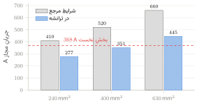
مثال 24.2 (یک سوم از جدول تا ترانشه) پرسش. ضریبِ کل و جریانِ مجازِ سه مقطع در ترانشهٔ نیروگاه چیست؟ کدام بخشِ نخستِ رشته را میبرد؟
پاسخ. ضریبِ کل \(0.97 \times 0.88 \times 0.93 \times 0.85 = 0.675\)؛ 240 mm² 277 A، 400 mm² 351 A و 630 mm² 445 A. بخشِ نخست 368 A دارد: فقط 630 mm².
تفسیر. فصلِ ۱۸ با جدولِ مرجع 240 mm² را برگزید و فصلِ ۲۳ پرچم زد (مثال 23.14)؛ اینجا با ضریبها پرچم به تغییر تبدیل میشود. بزرگترین ضریبها خاکِ گرم و خشک و مدارِ دوماند: بررسیِ گرماییِ خاک (U-093) ارزانترین شاهد برای بازگرداندنِ ظرفیت است. وارسی: \(410 \times 0.675 = 277\).
- جریانِ مجاز را تعریف کنید.
- چهار ضریبِ نصب و علتِ هر کدام را بنویسید.
- معادلهٔ 24.3 را برای 400 A، 0.1 Ω/km، 25 °C و 2.0 K·m/W حساب کنید.
- کدام شاهد ارزانترین راهِ بالا بردنِ جریانِ مجاز است؟
24.2.3 افتِ ولتاژ و تلف
ایده. افتِ ولتاژِ سهفاز در یک کابل:
\[ \Delta U = \sqrt{3}\, I L\,(R\cos\varphi + X\sin\varphi) \tag{24.4}\]
و تلفِ آن \(3 I^2 R L\). چون تلف با مجذورِ جریان میرود، تلفِ سالانه از سریِ ساعتیِ جریان حساب میشود، نه از جریانِ بیشینه: باد بیشترِ ساعتها زیرِ نامی است.
def drop_pct(i: float, km: float, r: float, x: float, pf: float,
kv: float) -> float:
"""Three-phase voltage drop in % of the line voltage:
dU = sqrt3 I L (R cos phi + X sin phi)."""
s = math.sin(math.acos(pf))
du = math.sqrt(3) * i * km * (r * pf + x * s)
return du / (kv * 1e3) * 100
def loss_kw(i: float, r_ohm_km: float, km: float) -> float:
"""Joule loss of a three-phase circuit, kW."""
return 3 * i ** 2 * r_ohm_km * km / 1e3
def annual_loss_mwh(i_series, r_ohm_km: float, km: float) -> float:
"""Energy lost in a year from an hourly current series (A)."""
i = np.asarray(i_series, float)
return float((3 * i ** 2 * r_ohm_km * km).sum() / 1e6)losses of a wind string's cable (4 sections x 1.1 km, teaching):
section r at 65 C loss at full A kW loss MWh/yr
240 0.1477 124 kW 282.3
400 0.0919 77 kW 175.7
630 0.0554 47 kW 105.9
string energy 64.4 GWh; the loss is 0.44% with 240 mm2,
the hourly series is used, not the peak: losses go with
the square of the current and the wind is mostly below
rated (ch 15)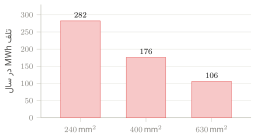
مثال 24.3 (تلف از سریِ ساعتی) پرسش. تلفِ سالانهٔ کابلِ یک رشتهٔ بادی با 240، 400 و 630 mm² چیست؟ چند درصدِ انرژیِ رشته است؟
پاسخ. 282، 176 و 106 MWh در سال؛ با 240 mm² حدودِ 0.44 % از 64.4 GWh.
تفسیر. تلف در بیشینه 124 kW است ولی اگر آن را در ۸۷۶۰ ساعت ضرب کنیم، 1,086 MWh میشود: نزدیکِ چهار برابرِ واقعیت. هر بخش فقط جریانِ واحدهای پس از خود را میبرد، پس برنامه برای هر بخش جریانِ خودش را میگذارد. وارسی: \(3 \times 368^2 \times 0.148 \times 1.1/1000 = 66\,\text{kW}\) برای بخشِ نخست در بیشینه.
- معادلهٔ 24.4 را برای 100 A، 2 km، r = 0.2، x = 0.1، ضریبِ ۱ و 33 kV حساب کنید.
- چرا تلفِ سالانه از سریِ ساعتی حساب میشود؟
- تلفِ بیشینه ضربِ ۸۷۶۰ چه خطایی دارد؟
- چرا بخشِ نخستِ رشته بیشترین تلف را دارد؟
24.2.4 تحملِ اتصالِ کوتاه
ایده. در اتصالِ کوتاه، جریانِ چند هزار آمپری در کسری از ثانیه رسانا را گرم میکند و فرصتی برای بیرون رفتنِ گرما نیست (بیدررو، به انگلیسی adiabatic). کوچکترین مقطعی که دمای رسانا را زیرِ حدِ عایق نگه میدارد:
\[ S \geq \frac{I_\text{k}\sqrt{t}}{k} \tag{24.5}\]
که \(k\) به جنسِ رسانا و عایق بستگی دارد (آموزشی: آلومینیوم با XLPE 94 و مس 143، با یکای \(\text{A}\,\text{s}^{0.5}/\text{mm}^2\)). روشِ دقیقتر که گرمای بیرونرفته را هم میشمرد در IEC 60949 آمده است و برای پردهها و مقطعهای کوچک سودِ بیشتری دارد.
def adiabatic_mm2(ik_ka: float, t_s: float, k: float) -> float:
"""Least section that carries ik for t without exceeding the
insulation's short-circuit temperature: S = I sqrt(t) / k."""
return ik_ka * 1e3 * math.sqrt(t_s) / k
def withstand_ka(mm2: float, t_s: float, k: float) -> float:
"""Short-circuit current a section of mm2 carries for t seconds."""
return k * mm2 / math.sqrt(t_s) / 1e3
def peak_ka(ik_ka: float, x_over_r: float) -> float:
"""Peak (first-loop) short-circuit current: i_p = kappa sqrt2 Ik with
kappa = 1.02 + 0.98 exp(-3 R/X)."""
kappa = 1.02 + 0.98 * math.exp(-3.0 / x_over_r)
return kappa * math.sqrt(2) * ik_ka
def short_time_ok(ik_ka: float, t_s: float, rated_ka: float,
rated_t: float) -> bool:
"""Equal-I2t check of a short-time withstand rating."""
return ik_ka ** 2 * t_s <= rated_ka ** 2 * rated_tshort-circuit duty of the 33 kV cables (adiabatic limit):
conductor: 12.5 kA (ch 23) cleared in 0.5 s by the feeder
relay, 1.0 s by the backup: S >= I sqrt(t) / k, k = 94 (Al)
t = 0.5 s: 94 mm2
t = 1.0 s: 133 mm2
240 mm2 Al carries 22.6 kA for 1 s
screen: the earth-fault current is limited to 400 A (ch 23)
a 35 mm2 Cu screen carries 5.0 kA for 1 s
both pass with margin; the backup clearing time sets the
duty, not the main relay'sمثال 24.4 (زمانِ حفاظتِ پشتیبان) پرسش. کمترین مقطعِ آلومینیومی برای 12.5 kA در 0.5 و 1.0 s چیست؟ پردهٔ مسیِ 35 mm² برای خطای زمینِ 400 A کافی است؟
پاسخ. 94 و 133 mm²؛ پرده 5.0 kA را یک ثانیه تحمل میکند: بسیار بیش از 400 A.
تفسیر. زمانی که مقطع را تعیین میکند زمانِ حفاظتِ پشتیبان است، نه رلهٔ اصلی: اگر رلهٔ اصلی کار نکند، کابل باید تا قطعِ پشتیبان دوام بیاورد. محدود کردنِ خطای زمین به 400 A (فصلِ ۲۳) پردهها را سبک نگه میدارد. وارسی: \(12{,}500 \times 1/94 = 133\).
- چرا گرمایش در اتصالِ کوتاه «بیدررو» فرض میشود؟
- معادلهٔ 24.5 را برای 7.9 kA، 0.1 s و مس حساب کنید.
- چرا زمانِ حفاظتِ پشتیبان مقطع را تعیین میکند؟
- محدود کردنِ جریانِ خطای زمین چه اثری بر پرده دارد؟
24.2.5 مثالِ کارشدهٔ ۱: انتخابِ مقدماتیِ کابل
ایده. کابل وقتی پذیرفته است که هر سه شرط برقرار باشد: جریان در محلِ نصب، افتِ ولتاژ و تحملِ اتصالِ کوتاه؛ و از میانِ پذیرفتهها، کوچکترین یا ارزانترین در هزینهٔ عمر (بخش 24.7.1) انتخاب میشود.
worked example 1: preliminary cable for wind string WS1
checks: current in place >= 368 A; drop along the string
<= 2 %; withstand >= 12.5 kA for 1 s
section in place A ok drop % ok withstand kA ok
240 277 n 1.00 y 22.6 y
400 351 n 0.68 y 37.6 y
630 445 y 0.47 y 59.2 y
smallest section that carries each section's current:
section 1 (4 turbines, 368 A): 630 mm2
section 2 (3 turbines, 276 A): 240 mm2
section 3 (2 turbines, 184 A): 240 mm2
section 4 (1 turbine, 92 A): 240 mm2
the first section needs 630 mm2 in this trench; the string
can be graded 630/240/240/240 mm2 - one size or a
graded string is an economic choice (section F); the
reference table alone would have chosen 240 mm2 everywhereمثال 24.5 (از جدول تا ترانشه) پرسش. برای رشتهٔ WS1 کابل انتخاب کنید: جریانِ 368 A در بخشِ نخست، افتِ کلِ رشته زیرِ 2 %، تحملِ 12.5 kA برای یک ثانیه.
پاسخ. بخشِ نخست: فقط 630 mm² جریان را میبرد (445 A)؛ افت با همه زیرِ 1 % و تحمل با همه بالای 22 kA. بخشهای ۲ تا ۴ (۲۷۶، ۱۸۴ و ۹۲ آمپر) با 240 mm². رشتهٔ پلهای: 630/240/240/240.
تفسیر. جریان شرطِ تعیینکننده است، نه افت و نه خطا. جدولِ مرجع بهتنهایی 240 mm² را برای همه میگذاشت و بخشِ نخست در تابستان بیش از حد گرم میشد. برای بخشِ دوم، 277 A در برابرِ 276 A حاشیهای ندارد: با بررسیِ گرماییِ خاک باید وارسی شود. وارسی: \(20/0.95/(\sqrt{3} \times 33) = 368\).
گردشِ کارِ انتخابِ کابل:
- جریانِ طراحیِ هر بخش را از تعدادِ واحدها و ضریبِ توان حساب کنید.
- شرایطِ نصب را ثبت کنید (عمق، خاک، دما، گروه) و ضریبها را از سازنده یا روشِ استاندارد بگیرید.
- کوچکترین مقطعی را بیابید که جریان را در محل میبرد.
- افتِ ولتاژ را در دمای بیشینه و تحملِ خطا را با زمانِ پشتیبان وارسی کنید.
- گزینههای پذیرفته را با هزینه و تلفِ عمر مقایسه کنید.
- انتخاب را با شرطها و شاهدهایش در فهرستِ کابل ثبت کنید.
- سه شرطِ پذیرشِ کابل را بنویسید.
- چرا بخشِ دوم حاشیه ندارد و چه شاهدی آن را روشن میکند؟
- برای یک فیدرِ سهبلوکیِ خورشیدی کابل انتخاب کنید.
- شش گامِ گردشِ کارِ انتخابِ کابل را بنویسید.
24.2.6 ضریبهای نصب از کجا میآیند: مدارِ گرماییِ کابل
ایده. در بخش 24.2.2 ضریبهای نصب را از جدول برداشتیم: عمق، خاک، دمای زمین، گروه. اینجا نشان میدهیم این ضریبها از کجا میآیند. گرمای تلفِ رسانا (\(W = 3 I^2 R\) بر متر) باید از عایق، غلاف و خاک بگذرد تا به محیط برسد؛ هر لایه یک مقاومتِ گرمایی (بر حسبِ K·m/W) است، درست مانندِ مقاومتِ الکتریکی در یک مدارِ سری:
\[ \theta_\text{c} - \theta_\text{amb} = W\,(T_\text{int} + T_4), \qquad T_4 = \frac{\rho_\text{s}}{2\pi}\,\ln\frac{4L}{D} \tag{24.6}\]
با \(\rho_\text{s}\) مقاومتِ گرماییِ ویژهٔ خاک، \(L\) عمقِ دفن و \(D\) قطرِ کابل. \(T_\text{int}\) (عایق، پرکننده، غلاف) را از جریانِ نامیِ مرجع برازش میکنیم و بقیه را از فیزیک حساب میکنیم. کابلِ دومِ کنارِ آن، با تلفِ برابر، دمای اولی را با «تصویرِ» خودش در سطحِ زمین بالا میبرد:
\[ T_\text{mut} = \frac{\rho_\text{s}}{2\pi}\,\ln\frac{d'}{d}, \qquad d' = \sqrt{(2L)^2 + d^2} \tag{24.7}\]
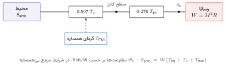
def t_soil(rho: float, depth: float, d: float = D) -> float:
"""Thermal resistance (K m/W) of the soil around a buried cable:
rho / (2 pi) ln(4 L / D)."""
return rho / (2 * math.pi) * math.log(4 * depth / d)
def t_mutual(rho: float, depth: float, spacing: float) -> float:
"""Extra resistance seen by one cable from a neighbour carrying the
same loss: rho / (2 pi) ln(d' / d), d' the distance to its image."""
d_img = math.hypot(2 * depth, spacing)
return rho / (2 * math.pi) * math.log(d_img / spacing)
T_INT = DT_REF / (3 * C630["i0"] ** 2 * R90) - t_soil(1.0, 0.8)
def ampacity(dt: float, t_ext: float) -> float:
"""Current (A) that heats the conductor by dt with the cable's
internal and the given external thermal resistance."""
return math.sqrt(dt / (3 * R90 * (T_INT + t_ext)))installation factors from a thermal circuit (630 mm2, teaching):
R at 90 C 0.0613 ohm/km; fitted internal resistance 0.276 K m/W
soil at reference (1.0 K m/W, 0.8 m): 0.597 K m/W; rating 660 A
condition physics factor table factor
depth 1.0 m 0.980 0.97
soil 1.5 K m/W 0.863 0.88
ground 30 C 0.926 0.93
two circuits 0.4 m 0.892 0.85
all four together: 449 A, factor 0.681 (table product 0.675)
depth, soil and ground temperature follow from the physics;
the simple image model gives less mutual heating than the
table, which also allows for the soil drying out next to a
warm cable - the reason tables are kept conservativeمثال 24.6 (فیزیک در برابرِ جدول) پرسش. با برازشِ \(T_\text{int}\) به 660 A در شرایطِ مرجع، ضریبهای عمقِ 1.0 m، خاکِ 1.5 K·m/W، زمینِ 30 °C و دو مدار با فاصلهٔ 0.4 m را حساب و با جدول مقایسه کنید.
پاسخ. 0.980، 0.863، 0.926 و 0.892 در برابرِ 0.97، 0.88، 0.93 و 0.85؛ هر چهار با هم 449 A، ضریبِ 0.681 در برابرِ حاصلضربِ جدول 0.675.
تفسیر. عمق، خاک و دمای زمین تقریباً هماناند که جدول میگوید: جدول فیزیک است، نه قرارداد. مدلِ سادهٔ تصویر گرمای کابلِ همسایه را کمتر از جدول میبیند، چون جدول خشک شدنِ خاکِ کنارِ کابلِ گرم را هم پوشانده است؛ برای همین جدولها محافظهکارند و مطالعهٔ واقعی با روشِ استاندارد و دادهٔ سازنده انجام میشود. وارسی: \(T_4 = \frac{1}{2\pi}\ln(3.2/0.075) = 0.597\) و \(70/(3 \times 660^2 \times 6.13 \times 10^{-5}) - 0.597 = 0.276\).
بارِ چرخهای. فیدرِ خورشیدی فقط روز بار دارد. خاک گرما را آهسته جذب و پس میدهد؛ پس در ظهر کابل میتواند بیش از جریانِ پیوسته ببرد:
cyclic rating of a PV feeder (daily loss factor 0.25, teaching):
continuous rating 660 A
soil sees only the daily mean (too simple) 946 A x1.43
near soil follows the day, far soil the mean 765 A x1.16
the soil's long time constant lets a cable that carries
current only by day run hotter at noon; but a run of sunny
days warms the far soil too - the cyclic factor is a study
result with the soil's heat capacity, never taken from the
first line, and the ch 25 loading of the transformer uses
the same idea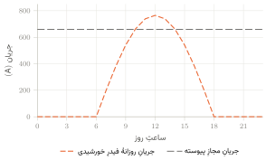
مثال 24.7 (یک و شانزده صدم، نه یک و چهلوسه صدم) پرسش. با ضریبِ تلفِ روزانهٔ 0.25، دو برآوردِ جریانِ مجازِ ظهر را مقایسه کنید.
پاسخ. اگر خاک فقط میانگینِ روز را ببیند 946 A (ضریبِ 1.43)؛ اگر خاکِ نزدیک تغییرِ روزانه را دنبال کند و خاکِ دور میانگین را، 765 A (ضریبِ 1.16).
تفسیر. برآوردِ نخست خطرناک است: چند روزِ آفتابیِ پشتِ سرِ هم خاکِ دور را هم گرم میکند. ضریبِ چرخهای نتیجهٔ مطالعه با ظرفیتِ گرماییِ خاک است. همین ایده در بارگذاریِ ترانسفورماتور (فصلِ ۲۵) آمد. وارسی: \(\sqrt{0.874/(0.276 + 0.299 + 0.075)} = 1.16\).
اثرِ پوستی. جریانِ متناوب در رسانای ضخیم به سطح رانده میشود و مقاومتِ مؤثر بالا میرود. تقریبِ رایج برای رسانای گرد:
\[ y_\text{s} = \frac{x_\text{s}^4}{192 + 0.8\,x_\text{s}^4}, \qquad x_\text{s}^2 = \frac{8\pi f}{R'}\,10^{-7}\,k_\text{s} \tag{24.8}\]
skin effect: AC over DC resistance of large conductors
ys = xs^4 / (192 + 0.8 xs^4), xs^2 = 8 pi f / R' x 1e-7 x ks
conductor R' ohm/m ks ys
630 mm2 Al, compacted 6.0e-05 1.00 0.022
1000 mm2 Cu, compacted 2.3e-05 1.00 0.138
1000 mm2 Cu, segmental 2.3e-05 0.43 0.029
the current crowds to the surface of a thick conductor: a
1000 mm2 copper conductor carries 14 % more resistance at
50 Hz; dividing it into insulated segments brings this down
- one reason export cables have segmental conductorsمثال 24.8 (چرا رسانای بزرگ قطعهقطعه است) پرسش. افزایشِ مقاومت در 630 mm² آلومینیوم و 1000 mm² مس، فشرده و قطعهای، چیست؟
پاسخ. 2.2 %؛ 13.8 % برای مسِ فشرده و 2.9 % برای قطعهای.
تفسیر. در کابلهای بزرگِ صادرات، رسانا به چند قطعهٔ عایقشده از هم تقسیم و تابیده میشود تا جریان در همهٔ سطح پخش شود. ضریبِ \(k_\text{s}\) را سازنده از آزمون میدهد. وارسی: برای 630 mm²: \(x_\text{s}^2 = 2.09\)، \(y_\text{s} = 4.37/195.5 = 0.022\).
تلفِ دیالکتریک. عایق هم تلف دارد، مستقل از بار: \(W_\text{d} = \omega C U_0^2 \tan\delta\):
dielectric losses: W = omega C U0^2 tan(delta), three phases
cable U0 kV C uF/km tan d W W/m conductor W/m
33 kV, 630 mm2 19.05 0.30 0.004 0.41 36.4
132 kV, 1000 mm2 Cu 76.20 0.20 0.001 1.09 14.9
tan d: 0.004 an upper teaching value for MV, 0.001 for HV
XLPE; the loss grows with U0^2 and is there day and night,
with or without load: at 33 kV about one per cent of the
conductor's, at 132 kV some per cent; the IEC 60287 method
counts it for XLPE from U0 of about 127 kV; it still adds
to the plant's night-time import (ch 23)مثال 24.9 (تلفی که شب هم هست) پرسش. تلفِ دیالکتریکِ کابلِ 33 kV و یک کابلِ فرضیِ 132 kV را با تلفِ رسانا مقایسه کنید.
پاسخ. 0.41 در برابرِ 36.4 W/m (حدودِ یک درصد)؛ 1.09 در برابرِ 14.9 W/m (حدودِ هفت درصد).
تفسیر. با مجذورِ ولتاژ بالا میرود. ضریبِ تلفِ عایقِ XLPEِ فشارِ قوی (\(\tan\delta\) حدودِ 0.001) بسیار کمتر از مقدارِ آموزشیِ بالای فشارِ متوسط (0.004) است؛ روشِ IEC 60287 این تلف را برای XLPE از ولتاژِ فازِ حدودِ 127 kV به بالا در جریانِ مجاز میآورد. با این همه، شب و روز، با بار یا بیبار، برقرار است و در نیروگاهی که شب تولید ندارد، از شبکه خریده میشود (فصلِ ۲۳). وارسی: \(3 \times 314.2 \times 0.3 \times 10^{-9} \times 19{,}050^2 \times 0.004 = 0.41\).
اضافهبارِ اضطراری. دمای رسانا با ثابتِ زمانیِ چند ساعته بالا میرود؛ اضافهبارِ کوتاه پذیرفتنی است:
emergency overload of a cable (first-order heating, tau 1.5 h):
start at 0.85 pu, then final C hours to 90 C
1.1 pu 104.7 1.26
1.2 pu 120.8 0.73
1.3 pu 138.3 0.51
1.5 pu 177.5 0.30
(start temperature 70.6 C) - a ring or a parallel
feeder that switches load onto a cable for an hour can
use this margin; at 1.3 pu the limit comes in about half
an hour, at 1.5 pu in under 20 minutes; the protection (ch 26) and
the switching rules must keep inside it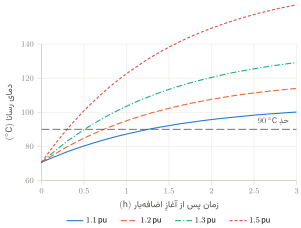
پایشِ دما با فیبر. فیبرِ نوریِ کنارِ کابل با حسگریِ توزیعشدهٔ دما (DTS) دمای هر متر را میدهد:
fibre temperature profile along WS1 at full output (synthetic):
hottest point 67.1 C at 1650 m (road crossing in a duct)
dry stretch 3,000-3,350 m: 58.0 C
elsewhere about 53 C
distributed temperature sensing in the fibre beside the
cable finds the few metres that set the rating: the
crossing, not the kilometres of open trench; the duct can
be filled with bentonite, the dry stretch backfilled - or
the rating of the whole feeder stays set by a few tens of
metres of it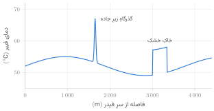
مثال 24.10 (چند ده متر که همه را تعیین میکنند) پرسش. در شکل 24.6 نقطهٔ داغ کجاست و چه باید کرد؟
پاسخ. 67.1 °C در 1,650 m، زیرِ جاده در لوله؛ بخشِ شنیِ خشک 58 °C؛ بقیه حدودِ 53 °C.
تفسیر. جریانِ مجازِ کلِ فیدر را چند ده متر تعیین میکنند: پر کردنِ لوله با ملاتِ گرمارسان یا خاکریزِ مناسب در بخشِ خشک آن را باز میکند (بخش 24.7.5). فیبرِ DTS در نگهداری هم شاهد است: گرمِ غیرعادی پیش از خرابی دیده میشود. وارسی: بیشینهٔ نیمرخ در خروجیِ برنامه.
- ضریبِ چرخهای از مدلی گرفته شده که خاک را فقط با میانگینِ روز میبیند.
- تلفِ دیالکتریکِ کابلِ فشارِ قوی در جریانِ مجاز نیامده است.
- رسانای بزرگ با مقاومتِ DC حساب شده و اثرِ پوستی جا افتاده است.
- جریانِ مجازِ فیدر با مسیرِ باز حساب شده و گذرگاهِ زیرِ جاده فراموش شده است.
- مقاومتِ گرماییِ خاکِ 2.0 K·m/W در عمقِ 1.0 m برای کابلِ 75 mm؟
- چرا جدولِ گروه از مدلِ تصویر محافظهکارتر است؟
- با معادلهٔ 24.6 نشان دهید چرا جریانِ مجاز با جذرِ \((\theta_\text{c} - \theta_\text{amb})\) تغییر میکند.
- چرا ضریبِ چرخهایِ 1.43 خوشبینانه است؟
- \(y_\text{s}\) را برای \(R' = 4 \times 10^{-5}\,\Omega/\text{m}\) حساب کنید.
- تلفِ دیالکتریک با ولتاژ چگونه تغییر میکند؟
- کابلی که از 0.85 پریونیت به 1.2 میرود چند ساعت تا 90 °C وقت دارد؟
- DTS چه چیزی را نشان میدهد که محاسبه نمیدهد؟
24.2.7 نیروی خطا بر کابلهای تکرشته و عمرِ عایق با دما
نیروی میانِ کابلها. در خطا، کابلهای تکرشتهٔ چیده به شکلِ مثلث (trefoil) با نیرویی متناسب با مجذورِ جریانِ قله از هم رانده میشوند. یک فرمِ آموزشی:
\[ F \approx 0.17\,\frac{i_\text{p}^2}{s} \quad \left[\text{N/m};\ i_\text{p}\ \text{kA},\ s\ \text{m}\right] \tag{24.9}\]
force between single-core cables in a fault: F = 0.17 ip^2 / s
(N/m, ip in kA, s in m; trefoil, teaching constant)
peak kA spacing m force kN/m cleat every 1.0 m kN 1.5 m kN
40 0.14 1.9 1.9 2.9
80 0.14 7.8 7.8 11.7
80 0.20 5.4 5.4 8.2
at the switchgear's 80 kA peak the cables push apart with
nearly 8 kN per metre: cleats sized and spaced for it keep
them in place - the cleat maker's short-circuit test is the
evidence, and the spacing goes on the installation drawingمثال 24.11 (بستِ کابل برای هشتاد کیلوآمپر) پرسش. با جریانِ قلهٔ 80 kA و فاصلهٔ 0.14 m، نیرو بر هر متر و بر هر بست با فاصلهٔ 1.5 m چیست؟
پاسخ. حدودِ 7.8 kN/m و 11.7 kN بر هر بست.
تفسیر. بستها (cleats) برای این نیرو انتخاب و فاصلهگذاری میشوند؛ شاهد آزمونِ اتصالِ کوتاهِ سازندهٔ بست است و فاصله روی نقشهٔ نصب میآید. کابلی که در خطا از سینی بیرون بپرد، خطای دوم میسازد. وارسی: \(0.17 \times 6{,}400/0.14 = 7{,}771\,\text{N/m}\).
عمرِ عایق با دما. عایقِ پلیمری مانندِ روغنِ ترانسفورماتور (فصلِ ۲۵) با دما پیر میشود. با قاعدهٔ آموزشیِ «نصف شدنِ عمر برای هر هشت کلوین»:
insulation life against conductor temperature (teaching rule:
life halves for every 8 K above 90 C, 40 years at 90 C):
conductor C relative life years
70 5.66 226
80 2.38 95
90 1.00 40
98 0.50 20
106 0.25 10
a cable that runs cooler than its limit most of the time
lasts longer; one pushed past it ages fast - the cyclic and
emergency ratings of lesson A spend this life on purpose,
so they are bounded in hours a year, not left open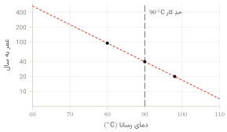
مثال 24.12 (عمری که بارِ چرخهای خرج میکند) پرسش. کابلی که همیشه در 80 °C است در برابرِ کابلی که در 98 °C است، عمرِ نسبیاش چیست؟
پاسخ. 2.38 در برابرِ 0.50: حدودِ 95 در برابرِ 20 سال با پایهٔ چهلساله.
تفسیر. جریانِ مجازِ چرخهای و اضطراری (بخش 24.2.6) عمر را آگاهانه خرج میکنند؛ پس با ساعتهای سالانه محدود میشوند و نه باز. قاعدهٔ هشت کلوین آموزشی است؛ رفتارِ واقعی را آزمونهای پیری و دادهٔ سازنده میدهند. وارسی: \(2^{(90-80)/8} = 2.38\).
24.2.8 کابل زیرِ آفتاب
ایده. کابلِ رو در آفتاب دو منبعِ گرما دارد: جریانِ خودش و خورشید (\(q = \alpha d G\) بر متر، با \(\alpha\) ضریبِ جذب، \(d\) قطر و \(G\) تابش):
sunlight against current on cables outdoors (1,000 W/m2, teaching):
cable sun W/m own loss W/m sun share
PV string 6 mm2, 13 A 4.5 0.8 85%
LV 4 x 95 mm2 on a tray, 200 A 24.0 35.1 41%
33 kV 240 mm2 riser, 276 A 39.0 36.6 52%
a thin PV cable is heated far more by the sun than by its
current: its insulation is rated for high temperature and
its rating assumes the sun; a riser or tray in the sun loses
part of its rating too - shade, a cover with air gap, or a
lighter colour, and the rating method's solar termمثال 24.13 (کابلِ رشتهای که خورشید گرمش میکند) پرسش. کابلِ 6 mm² رشتهٔ خورشیدی با 13 A در آفتابِ 1,000 W/m² چقدر گرما از خورشید و چقدر از جریان میگیرد؟
پاسخ. حدودِ 4.5 در برابرِ 0.8 W/m: 85 % از خورشید.
تفسیر. عایقِ کابلِ خورشیدی برای دمای بالا ساخته و جریانِ مجازش با فرضِ آفتاب داده میشود. کابلهای فشارِ متوسط و ضعیف روی سینیِ بیرونی یا بالارو هم بخشی از جریانِ مجازشان را به آفتاب میدهند: سایه، پوششِ دارای فاصلهٔ هوایی یا رنگِ روشن، و جملهٔ تابشیِ روشِ محاسبه. وارسی: \(0.7 \times 0.0065 \times 1{,}000 = 4.55\).
- فاصلهٔ بستها برای جریانِ خطای امروز انتخاب شده، نه برای رتبهٔ تابلو.
- اضافهبارِ اضطراری بیسقفِ ساعتِ سالانه مجاز شده است.
- نیرو بر هر متر با جریانِ قلهٔ 60 kA و فاصلهٔ 0.15 m؟
- چرا فاصلهٔ بستها روی نقشهٔ نصب میآید؟
- عمرِ نسبی در 86 °C با قاعدهٔ آموزشی؟
- چرا اضافهبارِ اضطراری با ساعتهای سالانه محدود میشود؟
24.2.9 از برداشتِ خاک تا مقاومتِ طراحی
ایده. مقاومتِ گرماییِ خاک بزرگترین ورودیِ جریانِ مجاز است (بخش 24.2.6) و در طولِ مسیر یکسان نیست. برداشتِ خاک با کاوشگرِ سوزنی در فصلِ خشک چند ده عدد میدهد؛ کدام را در طراحی بنشانیم؟
soil thermal resistivity along the collector routes (20 probes,
dry season, teaching):
mean 1.14, median 1.06, 90th percentile 1.48, highest 1.75 K m/W
design on the mean rho 1.14: 630 mm2 rating 631 A
design on the 90th rho 1.48: 630 mm2 rating 573 A
design on the worst rho 1.75: 630 mm2 rating 537 A
the mean hides the dry patches that set the hot spot (lesson
H's DTS profile); designing on a high percentile, or on the
worst with thermal backfill where the probes found it, is
the usual answer - the survey (season, depth, spacing) is
evidence the rating rests on (U-093)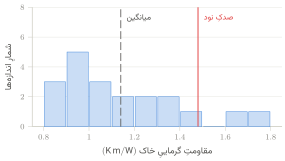
مثال 24.14 (میانگین لکههای خشک را پنهان میکند) پرسش. با بیست اندازه، جریانِ مجازِ 630 mm² را با میانگین، صدکِ نود و بدترین اندازه حساب کنید.
پاسخ. 631، 573 و 537 A برای 1.14، 1.48 و 1.75 K·m/W.
تفسیر. نقطهٔ داغ را لکهٔ خشک میسازد (شکل 24.6)، نه میانگین. طراحی روی صدکِ بالا، یا روی بدترین با خاکریزِ گرمارسان در جایی که کاوشگر آن را یافته، پاسخِ رایج است. برداشت (فصل، عمق، فاصله) خودش شاهدی است که جریانِ مجاز بر آن تکیه دارد (U-093). وارسی: صدکِ نود: هجدهمین از بیست عددِ مرتبشده، 1.48.
24.2.10 خطای زمینِ دوگانه و غلافِ کابل
ایده. در شبکهٔ مقاومتزمین، خطای زمینِ نخست 400 A است. ولی اگر پیش از رفعِ آن، فازِ دیگری در جای دیگر به زمین بخورد (خطای دوگانهٔ دوردست)، جریان از فاز به فاز از راهِ زمین و غلافها میگذرد و مقاومتِ نول آن را محدود نمیکند:
a cross-country fault: a second earth fault on another phase while
the first is still on (resistance-earthed 33 kV, teaching):
line voltage 33 kV through a loop of about 4 ohm -> 8.2 kA
screen Cu mm2 withstand 0.3 s kA 0.5 s kA 1 s kA
16 4.2 3.2 2.3
25 6.5 5.1 3.6
35 9.1 7.1 5.0
the 400 A resistor does not limit this fault: it flows phase
to phase through the earth and the screens; the feeder's
overcurrent relay sees it as a phase fault and clears it in
about 0.3 s - 35 mm2 holds; a slower clearing (0.5 s) would
need 41 mm2 - so the screen size and the relay setting
are checked together, and the first earth fault is cleared
before a second can join (ch 26)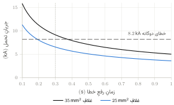
مثال 24.15 (غلافی که با تنظیمِ رله اندازه میشود) پرسش. با حلقهٔ حدودِ 4 Ω در 33 kV، جریانِ خطای دوگانه چیست و غلافِ مسیِ 35 mm² آن را تحمل میکند؟
پاسخ. حدودِ 8.2 kA؛ در 0.3 s بله (9.1 kA)، در 0.5 s نه (7.1 kA؛ 41 mm² لازم است).
تفسیر. رلهٔ جریانِ زیادِ فیدر خطای دوگانه را خطای فاز میبیند و در حدودِ 0.3 s رفع میکند؛ پس مقطعِ غلاف و تنظیمِ رله با هم وارسی میشوند (فصلِ ۲۶)، و خطای زمینِ نخست باید زود رفع شود تا دومی فرصت نیابد. وارسی: \(143 \times 35/\sqrt{0.3} = 9{,}138\,\text{A}\).
24.2.11 اندازهٔ اقتصادیِ کابلِ رشتهٔ خورشیدی
ایده. کابلِ رشتههای خورشیدی هزاران بار تکرار میشود؛ هر میلیمترِ مربع مس در کلِ نیروگاه ضرب میشود و هر وات تلف هم:
PV string cable size over the plant's life (120 m loop, 13 A,
1,600 equivalent full-load hours, teaching costs):
mm2 loss W MWh/yr (all strings) PV of loss k u extra copper k u
4 129 870 679 0
6 86 580 452 126
10 52 348 271 353
6 mm2 saves more in losses than its copper costs over 4 mm2;
10 mm2 does not pay back at these prices - the economic size
is a number from the hours and the price, checked against
the drop (lesson E) and the connectors' size rangeمثال 24.16 (شش میلیمتر، نه چهار و نه ده) پرسش. برای ۴٬۲۰۰ رشته با حلقهٔ 120 m، ارزشِ فعلیِ تلف و هزینهٔ مسِ اضافهٔ 4، 6 و 10 mm² را جمع بزنید.
پاسخ. 679، 452 + 126 = 578 و 271 + 353 = 624 هزار واحد: 6 mm² کمترین است.
تفسیر. اندازهٔ اقتصادی عددی از ساعتهای تولید و قیمتِ انرژی است و با افتِ ولتاژ (بخش 24.6.2) و بازهٔ اندازهٔ کانکتورها وارسی میشود؛ با قیمتِ انرژیِ بالاتر به سوی 10 mm² میرود. وارسی: \(13^2 \times 0.0222/4 \times 1.15 \times 120 = 129\,\text{W}\).
- جریانِ مجاز روی میانگینِ برداشتِ خاک طراحی شده است.
- مقطعِ غلاف بیتوجه به زمانِ رفعِ خطای دوگانه انتخاب شده است.
- چرا طراحی روی میانگینِ مقاومتِ خاک خطرناک است؟
- جریانِ مجاز با مقاومتِ خاکِ 1.30 K·m/W؟ (با برنامهٔ درسِ الف)
- خطای دوگانهٔ دوردست چیست و چرا مقاومتِ نول آن را محدود نمیکند؟
- غلافِ 25 mm² در 0.3 s چه جریانی را تحمل میکند؟
- با قیمتِ انرژیِ 100 واحد بر مگاواتساعت، کدام مقطعِ کابلِ رشته برنده است؟
24.3 ب. کابل بهعنوانِ محصول و در محل
24.3.1 لایههای کابل و ساختِ آن
ایده. کابلِ 33 kV از درون به بیرون: رسانا (رشتههای آلومینیومِ کشیده و فشرده)، پردهٔ رسانا (لایهٔ نیمهرسانا که سطح را صاف میکند)، عایق (XLPE)، پردهٔ عایق (نیمهرسانا)، پردهٔ فلزی (سیمها و نوارِ مس که جریانِ خطای زمین و جریانِ شارژ را میبرد)، و در کابلِ سهرشتهای، پرکننده، بستر، گاه زره، و غلافِ بیرونی. دو پردهٔ نیمهرسانا میدانِ الکتریکی را شعاعی و یکنواخت نگه میدارند تا تنشِ موضعی عایق را نشکند.
one core of a 33 kV 400 mm2 Al XLPE cable, layer by layer:
layer thickness diameter mm
conductor (compacted Al strands) - 23.8
conductor screen (semiconducting) 0.8 25.4
insulation (XLPE) 8.0 41.4
insulation screen (semiconducting) 0.8 43.0
metallic screen (Cu wires and tape) 0.6 44.2
three cores laid up, bedding and PE sheath: about 106 mm
insulation stress at the conductor screen: 33/sqrt3 kV over 8 mm
mean field 2.4 kV/mm - the screens keep it radial
each layer has a process and a test in the factory (ch 41):
extrusion of the three inner layers in one pass, then
checks of thickness, eccentricity and partial discharge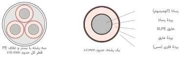
مثال 24.17 (دو و چهار دهم کیلوولت بر میلیمتر) پرسش. قطرِ یک رشته و کلِ کابلِ 400 mm² و میدانِ میانگین در عایق چیست؟
پاسخ. یک رشته حدودِ 44 mm، کلِ کابل حدودِ 106 mm؛ میدانِ میانگین \(19.05/8 = 2.4\,\text{kV/mm}\).
تفسیر. میدان در سطحِ رسانا از میانگین بیشتر است (هندسهٔ استوانهای)؛ هر برآمدگی یا حباب روی این سطح میدان را موضعی بالا میبرد. برای همین سه لایهٔ درونی با هم و در یک گذر اکسترود میشوند و تخلیهٔ جزئی در آزمونِ روزمرهٔ هر قرقره سنجیده میشود. قطرِ کل، شعاعِ خمشِ کمینه و اندازهٔ قرقره را تعیین میکند (بخش 24.3.3). وارسی: \(23.8 + 2 \times (0.8 + 8 + 0.8 + 0.6) = 44.2\).
24.3.2 کنترلِ فرایند و آزمونهای کارخانه
ایده. کیفیتِ کابل در کارخانه ساخته میشود و در محل فقط حفظ میشود. کشیدن و رشتهکردنِ سیم (قطر، شمارِ رشتهها، فشردگی)، اکستروژنِ سهلایه و پخت (دما، سرعتِ خط، فشار)، پرده و زره و غلاف هر کدام کنترلِ فرایند دارند. سه ردهٔ آزمون: نوعی (یک بار برای طرح)، نمونهای (روی نمونههایی از تولید) و روزمره (روی هر قرقره).
factory process control on a 33 kV cable (teaching samples):
insulation thickness max/min mm eccentricity (limit 15 %)
8.1 / 7.6 6.2% ok
8.3 / 7.5 9.6% ok
8.2 / 7.9 3.7% ok
8.6 / 6.9 19.8% reject
8.0 / 7.7 3.7% ok
conductor resistance at 20 C: 0.0761 ohm/km against max 0.0778 -> ok
the process controls (extrusion, curing, line speed) keep
the samples in; routine tests on every drum (voltage,
partial discharge, resistance) prove each length; type tests
prove the design once - the site test proves the layingمثال 24.18 (نمونهای که رد شد) پرسش. کدام نمونهٔ ضخامتِ عایق از حدِ آموزشیِ 15 % نابرابری بیرون است؟ مقاومتِ رسانا پذیرفته است؟
پاسخ. نمونهٔ چهارم (8.6/6.9 mm): 19.8 %، رد. مقاومت 0.0761 زیرِ بیشینهٔ 0.0778 Ω/km: پذیرفته.
تفسیر. نابرابریِ زیاد یعنی یک سوی عایق نازکتر و میدان در آنجا بیشتر است؛ علت معمولاً در تنظیمِ سرِ اکسترودر است و همهٔ طولِ تولیدشده در آن بازه باید بررسی شود. آزمونِ محل (پس از کابلکشی) کیفیتِ کابلکشی را نشان میدهد، نه کیفیتِ تولید را: جای آزمونهای کارخانه را نمیگیرد (فصلِ ۴۱). وارسی: \((8.6 - 6.9)/8.6 = 19.8\,\%\).
- لایههای کابلِ 33 kV را از درون به بیرون نام ببرید.
- چرا سه لایهٔ درونی با هم اکسترود میشوند؟
- سه ردهٔ آزمونِ کارخانه را تعریف کنید.
- چرا آزمونِ محل جای آزمونِ نوعی را نمیگیرد؟
24.3.3 مسیر، کشش، خمش، مفصل و نشانهگذاری
ایده. کابل در محل با کشیدن از کانال یا خواباندن در ترانشه نصب میشود. سه حد باید رعایت شود: کششِ کابل (بیشترِ آن روی رسانا)، فشارِ جانبی روی خمها و شعاعِ خمشِ کمینه. در هر خم کشش با ضریبِ \(e^{\mu\theta}\) زیاد میشود (معادلهٔ کاپستان):
\[ T_2 = T_1\, e^{\mu \theta} \tag{24.10}\]
pulling a 33 kV cable into a duct (teaching numbers):
weight 74 N/m, friction 0.35; bend radius 1.5 m
after tension kN
200 m straight 5.1
90 degree bend 8.9
150 m straight 12.8
45 degree bend 16.8
limit on the conductors (30 N/mm2 x 3 x 400 mm2): 36 kN
sidewall pressure on the last bend: 11.2 kN/m
least bending radius (15 x 106 mm): 1.6 m
- the route's 1.5 m bends are too tight
the bends multiply the tension (capstan: T e^(mu theta)):
pull from the end nearer the bends; the maker's limits and
the pulling record (tension logged) close the step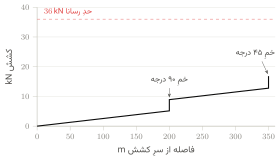
مثال 24.19 (خمی که تنگ است) پرسش. کشش در پایانِ مسیر چقدر است و با حدِ رسانا چه نسبتی دارد؟ شعاعِ خمِ 1.5 m مسیر پذیرفته است؟
پاسخ. حدودِ 16.8 kN در برابرِ حدِ 36 kN؛ اما شعاعِ خمشِ کمینه \(15 \times 106 = 1.6\,\text{m}\) است و خمهای 1.5 m تنگاند.
تفسیر. کشش پذیرفته است ولی هندسه نه: خمها باید بازتر شوند (یا مسیر عوض شود). خمها کشش را چند برابر میکنند؛ کشیدن از سوی نزدیکتر به خمها کششِ کل را کم میکند. حدهای کشش، فشارِ جانبی و شعاعِ خمش از سازنده میآیند و رکوردِ کشش (کششِ ثبتشده در تمامِ طول) شاهدِ رعایتِ آنهاست. روشِ کار و ایمنیِ آن با دستورالعملِ سازنده و کارکنانِ آموزشدیده است. وارسی: \(5.1 \times e^{0.35\pi/2} = 8.9\).
قرقره و مفصل. طولِ قرقره تعدادِ مفصلها را تعیین میکند و مفصل جایی است که خرابیها آغاز میشوند:
drum lengths and the joints they force (route 4.4 km a string):
drum 500 m: 8 joints a string
drum 750 m: 4 joints a string
drum 1100 m: 0 joints a string
drum 1500 m: 0 joints a string
a drum of one section's length removes the joints between
turbines; the drum's size is then limited by transport
(weight, width, road) - a logistics trade-off (ch 46)مثال 24.20 (قرقره به اندازهٔ یک بخش) پرسش. با قرقرههای 500، 750 و 1,100 m هر رشته چند مفصل دارد؟
پاسخ. ۸، ۴ و صفر.
تفسیر. قرقرهای به اندازهٔ یک بخش مفصلهای میانِ توربینها را حذف میکند، اما وزن و پهنای قرقره را حملونقل محدود میکند (فصلِ ۴۶). نشانهگذاری: هر کابل در دو سر و در هر چاهک با نامِ مرجع (بخش 23.2.3) برچسب میخورد؛ نوارِ هشدار و نشانههای مسیر برای کسانی است که بعدها آنجا حفاری میکنند. وارسی: \(4 \times (\lceil 1.1/0.5 \rceil - 1) = 8\).
- سه حدِ کابلکشی را نام ببرید.
- معادلهٔ 24.10 را برای 5 kN، خمِ ۹۰ درجه و μ = 0.35 حساب کنید.
- چرا کشیدن از سوی نزدیکتر به خمها بهتر است؟
- نشانهگذاری و نوارِ هشدار برای چه کسانی است؟
24.3.4 ساختِ کابل در عدد: رشته، عایق، قرقره و آزمون
ایده. فرایندِ کارخانهٔ کابل (بخش 24.3.1) را اینجا با عدد میبینیم: هندسهٔ رشتهها، ضخامت و خروج از مرکزِ عایق با شاخصِ توانِ فرایند، وزنِ قرقره در برابرِ شمارِ مفصلها، و خانوادههای آزمون. دستورِ ساخت نمیآید؛ فرایند از آنِ سازنده است و خریدار شاهد میخواهد.
رشتهبندیِ هممرکز. رسانای بزرگ از سیمهای گرد در لایههای هممرکز ساخته میشود: یک سیم در وسط و هر لایه شش سیم بیشتر از لایهٔ پیش:
concentric stranding: 1 + 6 + 12 + 18 + ... wires
layers wires wire mm area mm2 round dia mm compacted mm
3 19 3.25 158 16.2 14.8
4 37 3.45 346 24.2 21.9
5 61 3.60 621 32.4 29.3
each layer adds six wires; a round strand fills about 75 %
of its circle, a compacted one about 92 %: a smaller
conductor diameter means less insulation volume, a smoother
screen and less stress - the conductor's resistance, not
its nominal area, is what the routine test checksمثال 24.21 (شصتویک سیم) پرسش. رسانای پنجلایه با سیمِ 3.60 mm چند سیم، چه سطحی و چه قطری دارد؟ فشردهسازی چه میکند؟
پاسخ. ۶۱ سیم، 621 mm²؛ قطرِ گرد 32.4 mm و فشرده 29.3 mm.
تفسیر. فشردهسازی فضای خالیِ میانِ سیمها را کم میکند: قطرِ کمتر یعنی عایقِ کمتر، سطحِ صافترِ زیرِ لایهٔ نیمهرسانا و تنشِ یکنواختتر. آزمونِ جاری مقاومتِ رسانا را میسنجد، نه سطحِ اسمی را؛ رسانای «۶۳۰» با مقاومتِ بیش از حد پذیرفته نمیشود. وارسی: \(1 + 6 + 12 + 18 + 24 = 61\).
ضخامت و خروج از مرکزِ عایق. از هر نمونهٔ بریده ضخامت در چند نقطهٔ پیرامون سنجیده میشود:
def insulation_check(t_meas: list, t_nom: float,
t_min_pct: float = 0.90) -> dict:
"""Thickness checks of one insulation cut: average, minimum against a
fraction of nominal, and eccentricity (max - min) / max."""
t_max, t_min = max(t_meas), min(t_meas)
return {"avg": statistics.mean(t_meas),
"min_ok": t_min >= t_min_pct * t_nom,
"ecc": (t_max - t_min) / t_max}
def cpk(values: list, lsl: float, usl: float) -> float:
"""Process capability: distance of the mean to the nearer limit in
units of three standard deviations."""
m, s = statistics.mean(values), statistics.stdev(values)
return min(usl - m, m - lsl) / (3 * s)\[ e = \frac{t_\text{max} - t_\text{min}}{t_\text{max}}, \qquad C_\text{pk} = \frac{\min(\text{USL} - \bar{x},\ \bar{x} - \text{LSL})}{3s} \tag{24.11}\]
insulation thickness of 33 kV cores (nominal 8.0 mm, teaching limits:
minimum >= 90 % of nominal, eccentricity <= 10 %)
sample average mm minimum ok eccentricity result
drum 1 8.18 yes 4.8% pass
drum 2 8.25 yes 14.6% FAIL
drum 3 8.12 yes 2.4% pass
drum 2 has enough average but the core sits off-centre: the
thin side sets the electrical stress, the thick side wastes
material - the extrusion line's centring is the cause
ten drums' average thickness: Cpk 1.15 against 7.6-8.8 mm
(a capable process keeps Cpk above about 1.33: this line is NOT capable -
less spread or better centring before the next lot; the
limits here are teaching values, the real ones are the
cable standard's and the contract's)مثال 24.22 (میانگینِ خوب، مرکزِ بد) پرسش. کدام نمونه رد میشود؟ شاخصِ توانِ فرایند (Cpk) ده قرقره چه میگوید؟
پاسخ. قرقرهٔ ۲ با خروج از مرکزِ 14.6 % رد میشود، با اینکه میانگینش بیشترین است. Cpk برابرِ 1.15 است، زیرِ حدودِ 1.33: خط توانا نیست.
تفسیر. سمتِ نازکِ عایق تنشِ الکتریکی را تعیین میکند و سمتِ ضخیم فقط ماده هدر میدهد؛ علت مرکزیابیِ خطِ اکستروژن است. Cpk پایین یعنی حتی اگر همهٔ قرقرههای این دسته در حد باشند، دستهٔ بعد ممکن است نباشد؛ خریدار از سازنده برنامهٔ اصلاح میخواهد، نه فقط گزارشِ قبولی. حدها آموزشیاند؛ حدهای واقعی از استانداردِ کابل و قرارداد. وارسی: \((8.9-7.6)/8.9 = 0.146\).
وزنِ قرقره و شمارِ مفصلها. قرقرهٔ بلندتر یعنی مفصلِ کمتر، ولی وزنِ بیشتر برای جاده:
drum weight against the joints of a 4.4 km string (630 mm2, 9.2 kg/m):
drum m cable t gross t transport joints per string
500 4.6 6.6 ok 8
750 6.9 8.9 ok 4
1100 10.1 12.1 ok 0
1500 13.8 15.8 special 0
(teaching road limit 15 t on the trailer; joints at the
turbines' switchgear are terminations, not joints)
1,100 m drums put every joint inside a turbine and stay
under the road limit; 1,500 m drums need special transport
for no fewer joints and leave 400 m off-cuts - the section
length decides (lesson B, ch 46)خانوادههای آزمونِ کابل. هر خانواده چیزی را ثابت میکند که دیگری نمیکند:
cable test families and what each proves (names and records only):
routine (every length):
conductor resistance, voltage test, partial discharge
record: each drum's test report
sample (some lengths):
dimensions, eccentricity, hot set, conductor
record: sample test report per lot
type (once per design):
electrical and thermal cycling, ageing, bending
record: type-test certificate
after laying (site):
sheath integrity, insulation test, VLF or AC test
record: site test record per section
the factory proves the cable was made right; the site test
proves it survived transport, pulling and jointing - neither
replaces the other; methods, voltages and durations are
the standard's and the maker's, done by trained staffآزمونهای ولتاژِ بالا در کارخانه و محل، تخلیهٔ جزئی و آزمونهای پس از نصب به تجهیزات، روالهای تأییدشده و کارکنانِ آموزشدیده نیاز دارند. این کتاب نام، هدف و سندِ هر آزمون را میآورد، نه روش و مقدارِ آن را.
- سطحِ اسمیِ رسانا بهجای مقاومتِ اندازهگیریشده پذیرفته شده است.
- نمونه با میانگینِ ضخامتِ خوب ولی خروج از مرکزِ زیاد پذیرفته شده است.
- گزارشِ قبولیِ یک دسته جای شاخصِ توانِ فرایند نشسته است.
- رسانای چهارلایه چند سیم دارد؟
- چرا رسانای فشرده عایقِ کمتری میخواهد؟
- خروج از مرکزِ نمونهای با ضخامتهای 8.6 تا 7.8 mm؟
- Cpk برای میانگینِ 8.2، انحرافِ معیارِ 0.1 و حدهای 7.6 تا 8.8 mm؟
- چرا قرقرهٔ 1,500 m برای رشتهٔ 1.1 kmی مفید نیست؟
- چرا آزمونِ پس از نصب جای آزمونِ کارخانه را نمیگیرد؟
24.3.5 نشانهگذاریِ مسیرها و برچسبِ کابلها
ایده. کابلِ دفنشده دیده نمیشود؛ ده سال بعد، کسی که با بیلمکانیکی آنجا را میکند فقط نشانه را میبیند. شمارِ نشانهها و برچسبها از مسیر و تجهیزات حساب میشود و در فهرستِ خرید میآید:
marking the 33 kV cable routes (teaching spacing):
route length 21.6 km (all feeders), 60 bends, 12 crossings
marker posts every 50 m, at each bend and both sides of a crossing: 516
warning tape: 22.7 km; cable labels at both ends: 52
labels also at every joint, manhole and entry into a
building; each label carries the tag of lesson D's schedule
the markers are what a digger sees in ten years' time; the
as-built survey with coordinates is what the office seesمثال 24.23 (پانصد و شانزده تیرک) پرسش. با 21.6 km مسیر، ۶۰ خم و ۱۲ گذرگاه، چند تیرکِ نشانه، چند کیلومتر نوارِ هشدار و چند برچسبِ سرِ کابل لازم است؟
پاسخ. ۵۱۶ تیرک، 22.7 km نوار و ۵۲ برچسبِ دو سر، بهعلاوهٔ برچسب در هر مفصل، چاله و ورود به ساختمان.
تفسیر. هر برچسب همان برچسبِ فهرستِ کابلها (بخش 24.5.1) را دارد؛ تیرکها چیزیاند که کارگرِ آینده میبیند و برداشتِ اجرایی با مختصات چیزی است که دفتر میبیند. هر دو جزءِ پروندهٔ تحویلاند. وارسی: \(21{,}600/50 + 60 + 24 = 516\).
- تیرکها کاشته شده ولی برداشتِ اجرایی با مختصات تحویل نشده است.
- برچسبِ کابل با برچسبِ فهرستِ کابلها یکی نیست.
- چرا نشانهگذاری با برداشتِ اجرایی کامل میشود؟
- برای 10 km مسیر با ۲۰ خم و ۴ گذرگاه چند تیرک لازم است؟
24.3.6 محلِ خطا از زمانِ بازتاب و عمقِ اجراییِ ترانشه
محلِ خطا از زمانِ بازتاب. پالسی که به کابل فرستاده میشود از محلِ خطا برمیگردد؛ فاصله نصفِ حاصلضربِ سرعت در زمانِ رفتوبرگشت است:
\[ x = \frac{v\,t}{2}, \qquad v = \text{VF} \times c \tag{24.12}\]
locating a cable fault from the time of its reflection:
pulse speed in the cable 0.55 x c = 165 m/us; distance = v t / 2
echo after us distance m which section of =WS1
4.0 330 W1
13.3 1096 W1
26.7 2201 W3
40.0 3298 W3
the echo time gives the distance only as well as the speed
is known: a 5 % error in the velocity factor is 110 m at
the far end - the crew then pinpoints on the surface before
anyone digs; the as-built route survey turns the distance
into a place on the groundمثال 24.24 (دو کیلومتر و دویست متر) پرسش. با ضریبِ سرعتِ 0.55، پژواکِ 26.7 µs خطا را کجا نشان میدهد؟ خطای 5 % در ضریبِ سرعت چه میکند؟
پاسخ. حدودِ 2,201 m، در بخشِ W3ِ فیدرِ =WS1؛ در انتهای فیدر خطای 5 % حدودِ 110 m است.
تفسیر. زمانِ پژواک فاصله را میدهد، نه جای روی زمین را؛ گروهِ آموزشدیده با ابزارِ خود محل را روی زمین دقیق میکند و برداشتِ اجراییِ مسیر فاصله را به نقطهای روی نقشه تبدیل میکند. بیبرداشتِ اجرایی، هر خطا با حفاریهای اضافه پیدا میشود (بخش 24.7.7). وارسی: \(164.9 \times 26.7/2 = 2{,}201\).
عمقِ اجرایی. عمقِ پوششِ روی کابل هر پنجاه متر اندازه و با کمینهٔ مشخصه مقایسه میشود:
as-built cover over the cable, every 50 m along one trench (m):
mean 0.97, lowest 0.76, readings below the 0.80 m minimum: 2
at 350 m: 0.79 m
at 700 m: 0.76 m
the mean says the trench is fine; two places are not -
each becomes a nonconformity: dig and lower, or protect
with a slab and record it; a shallow cable is a future
dig-in, closer to the summer-hot surface and to ploughs -
its rating even rises a little, so the defect is
mechanical, and the record is what protects itمثال 24.25 (میانگین میگوید درست است) پرسش. میانگینِ عمق 0.97 m است. آیا ترانشه پذیرفته است؟
پاسخ. نه کامل: دو نقطه (0.79 و 0.76 m) زیرِ کمینهٔ 0.80 mاند.
تفسیر. هر نقطه یک عدمانطباق است: پایین بردن یا حفاظت با دال و ثبت. کابلِ کمعمق در آینده ضربه میخورد و به سطحِ داغِ تابستان نزدیکتر است؛ جریانِ مجازش حتی کمی بالا میرود، پس عیب مکانیکی است و سابقه آن را حفظ میکند. وارسی: دو ردیف در خروجی.
- فاصله از زمانِ پژواک با ضریبِ سرعتِ نادرست حساب و همانجا حفاری شده است.
- ترانشه با میانگینِ عمق پذیرفته شده است.
- پژواکِ 10 µs با ضریبِ سرعتِ 0.6 چه فاصلهای است؟
- چرا برداشتِ اجراییِ مسیر برای یافتنِ خطا لازم است؟
- چرا میانگینِ عمق برای پذیرش کافی نیست؟
24.4 پ. تابلو و سختافزارِ حفاظت
24.4.1 زیرمجموعهها و معماریِ تابلو
ایده. تابلوی فشارِ متوسط مجموعهای از پانلهاست و هر پانل چند محفظه دارد: شینهها روی تکیهگاههای عایق، قطعکننده (معمولاً خلأ در 33 kV) با مکانیزمِ فنری، محفظهٔ کابل با سرکابلها، و محفظهٔ فشارِ ضعیف با رلهها، حسگرها (ترانسفورماتورهای جریان و ولتاژ) و سیمکشیِ کنترل. بدنهٔ فلزی، اینترلاکها و مسیرِ آزادسازیِ فشار در خطای قوسِ داخلی بخشی از طرحاند.
| معماری | ویژگی | جای مناسب (مفهومی) |
|---|---|---|
| عایقِ هوا (AIS) با پانلهای فلزی | فاصلههای هوایی، دسترسیِ آسان، جای بیشتر | اتاقِ تابلوی پستِ نیروگاه |
| عایقِ گاز (GIS) | فشرده، بسته در برابرِ گرد و رطوبت، گاز با ملاحظهٔ محیطی | جای کم، آلودگی، دریا |
| واحدِ حلقوی (RMU) | چند کلیدِ ساده در یک بدنه | پای توربین و ایستگاهِ اینورتر |
| قطعکنندهٔ خلأ | بیگاز، نگهداریِ کم | فشارِ متوسط |
24.4.2 وظیفههای تابلو در برابرِ مقدارهای نامی
ایده. هر تابلو چهار وظیفه دارد: جریانِ نامی در کارِ دائم، قطعِ جریانِ اتصالِ کوتاه، تحملِ کوتاهمدت (جریانِ خطا برای چند ثانیه) و تحملِ قله (نخستین قلهٔ جریان که نیروی مکانیکی بیشینه را میسازد):
\[ i_\text{p} = \kappa \sqrt{2}\, I_\text{k}, \qquad \kappa = 1.02 + 0.98\, e^{-3R/X} \tag{24.13}\]
مقدارهای نامی از آزمونهای نوعیِ سازنده میآیند (IEC 62271-200:2021 برای تابلوی 1 تا 52 kV، IEC 61439-1:2020 برای مجموعههای فشارِ ضعیف).
switchgear duties against the teaching ratings (ch 23 faults):
gear Ik kA X/R ip kA rated ip Ik for 1 s vs Ik 3 s rating
33 kV 12.5 14 32.0 63 ok
132 kV 5.2 15 13.4 80 ok
0.4 kV 7.9 4 16.6 30 ok
peak current: ip = kappa sqrt2 Ik, kappa from X/R (about 1.8
for X/R 14): the making and the busbar forces follow ip;
the ratings come from the makers' type tests, which the
site cannot repeat (section C)مثال 24.26 (قلهای که نیرو میسازد) پرسش. جریانِ قله در 33 kV با 12.5 kA و X/R = 14 چیست؟ با مقدارهای نامیِ تابلوی آموزشی مقایسه کنید.
پاسخ. \(\kappa \approx 1.81\) و \(i_\text{p} = 32.0\,\text{kA}\) در برابرِ 63 kA نامی؛ تحملِ کوتاهمدت پذیرفته. 132 kV و 0.4 kV هم پذیرفتهاند.
تفسیر. حاشیهٔ دو برابری برای رشدِ شبکه و ورودِ منابعِ تازه است. نسبتِ X/R در نزدیکیِ ترانسفورماتورهای بزرگ بالاست و قله را بالا میبرد؛ مطالعهٔ کامل با دادهٔ واقعی در فصلِ ۲۶. وارسی: \(1.02 + 0.98 e^{-3/14} = 1.81\).
force between 33 kV busbars in a fault (two parallel bars):
F/L = 2e-7 ip^2 / a (N/m), ip the gear's rated peak (63 kA)
spacing 0.15 m: 5.3 kN/m; on a 1 m span 5.3 kN
spacing 0.25 m: 3.2 kN/m; on a 1 m span 3.2 kN
spacing 0.35 m: 2.3 kN/m; on a 1 m span 2.3 kN
ip = 63.0 kA; the supports and bars are sized for it
by the maker and proved by the short-time and peak tests
of the type test - a site test cannot show itمثال 24.27 (پنج کیلونیوتن بر متر) پرسش. نیروی میانِ دو شینهٔ موازی با فاصلهٔ 0.15 m در قلهٔ 63 kA چیست؟
پاسخ. \(2 \times 10^{-7} \times 63{,}000^2/0.15 = 5.3\,\text{kN/m}\).
تفسیر. شینهها و تکیهگاهها برای این نیرو طراحی و با آزمونِ نوعیِ قله اثبات میشوند؛ هیچ آزمونِ محلی نمیتواند آن را نشان دهد. برای همین تابلوی بیگواهیِ نوعی برای جریانِ خطای محل پذیرفته نیست، هرچقدر آزمونهای محل خوب باشند. وارسی: با دو برابر شدنِ فاصله نیرو نصف میشود.
- چهار محفظهٔ پانلِ فشارِ متوسط را نام ببرید.
- چهار وظیفهٔ تابلو را تعریف کنید.
- معادلهٔ 24.13 را برای 25 kA و X/R = 10 حساب کنید.
- چرا آزمونِ محل جای آزمونِ نوعیِ قله را نمیگیرد؟
24.4.3 اینترلاک، کیفیتِ اتصال، آببندی و آزمونها
اینترلاکها. اینترلاکها جلوی ترتیبهای ناامن را میگیرند: مثلاً کلیدِ زمین وقتی بسته نشود که قطعکننده در مدار است. بازبین قاعدهها را بهشکلِ جدولِ درستی میآزماید: هیچ حالتِ ناامنی نباید دستیافتنی باشد.
def allowed(breaker_closed: bool, truck_in: bool, earth_closed: bool,
door_open: bool) -> bool:
"""Teaching interlock rules of a withdrawable MV panel: the earthing
switch is closed only with the truck out (and so the breaker away);
the breaker is closed only with the truck in and the earth open; the
cable door opens only with the earth closed."""
if earth_closed and truck_in:
return False
if breaker_closed and (not truck_in or earth_closed):
return False
if door_open and not earth_closed:
return False
return Trueinterlock logic of a 33 kV panel: 5 of 16 states allowed
breaker truck in earth door (allowed states)
no no no no
no no yes no
no no yes yes
no yes no no
yes yes no no
three unsafe states the logic must refuse:
breaker closed, earth closed refused
door open, earth open refused
earth closed, truck in refused
the interlocks are mechanical and electrical parts of the
panel, proved in the factory; the table is how a reviewer
checks that the rules leave no unsafe state reachableمثال 24.28 (پنج حالت از شانزده) پرسش. قاعدههای آموزشی چند حالت از ۱۶ حالتِ ممکن را مجاز میدانند؟ سه حالتِ ناامنِ نمونه پذیرفته میشوند؟
پاسخ. ۵ حالت؛ هر سه حالتِ ناامن رد میشوند.
تفسیر. جدولِ درستی طراحیِ اینترلاک را میآزماید، نه کارِ آن را؛ اینترلاکهای مکانیکی و برقی در کارخانه آزموده میشوند و در محل کارکردشان وارسی میشود. این جدول دستورِ کار با تابلو نیست؛ ترتیبِ عملیات در روالهای بهرهبرداری و با کارکنانِ صلاحیتدار است. وارسی: \(2^4 = 16\).
کیفیتِ اتصال. مقاومتِ مدارِ اصلیِ هر کلید با مقدارِ آزمونِ نوعی مقایسه میشود؛ اتصالِ شل یا آلوده گرما میسازد:
main-circuit resistance of breakers against the type-tested
value (40 micro-ohm, limit 1.2 x, teaching):
+H01: 41.0 micro-ohm -> ok
+H02: 44.5 micro-ohm -> ok
+H03: 52.0 micro-ohm -> investigate
+H04: 43.8 micro-ohm -> ok
a high value points to a poor contact or a loose joint,
which heats in service; the routine test sets the
baseline that site and maintenance tests are compared toآببندی و ردهٔ حفاظت. بدنهٔ هر تجهیز یک کدِ IP دارد (IEC 60529): رقمِ اول حفاظت در برابرِ جسم و گرد، رقمِ دوم در برابرِ آب.
enclosure protection codes (first digit solids, second water):
code meaning where (teaching)
IP2X fingers kept out inside a locked room
IP54 dust-protected; splashing water outdoor box with a roof
IP55 dust-protected; water jets outdoor box, cleaning by hose
IP65 dust-tight; water jets combiner box in the field
IP67 dust-tight; temporary immersion box in a flood-prone pit
the code is proved by the maker's type test; the site keeps
it by closing every entry correctly - an open gland makes
an IP65 box an IP2X oneمثال 24.29 (پنجاهودو میکرواهم) پرسش. کدام کلید از حدِ 1.2 برابرِ مقدارِ نوعی بیرون است؟ کدام کدِ IP برای جعبهٔ تجمیعِ خورشیدی مناسب است؟
پاسخ. +H03 با 52 μΩ (حد 48): بررسی شود. جعبهٔ تجمیع در میدان: IP65 (گردبند و جت آب).
تفسیر. مقدارِ آزمونِ روزمرهٔ هر کلید خطپایهای است که آزمونهای محل و نگهداری با آن مقایسه میشوند. کدِ IP با آزمونِ نوعی اثبات و در محل با بستنِ درستِ هر ورودی حفظ میشود: یک گلندِ باز جعبهٔ IP65 را عملاً IP2X میکند. وارسی: \(40 \times 1.2 = 48\).
| ردهٔ آزمون | چه چیزی را ثابت میکند | کجا |
|---|---|---|
| نوعی | طرح: قوسِ داخلی، کوتاهمدت و قله، افزایشِ دما، عایق | آزمایشگاهِ مستقل یا سازنده، یک بار |
| روزمره | این واحد: ولتاژِ فرکانسِ قدرت، مقاومتِ مدارِ اصلی، مکانیزم و اینترلاک | کارخانه، هر واحد |
| محل | نصب: اتصالها، سرکابلها، مدارهای قطع، کارکرد | محل، پس از نصب |
- اینترلاک چه کاری میکند و جدولِ درستی چه چیزی را میآزماید؟
- چرا مقاومتِ مدارِ اصلی اندازهگیری میشود؟
- دو رقمِ کدِ IP را توضیح دهید.
- سه ردهٔ آزمونِ تابلو را با آنچه ثابت میکنند بنویسید.
24.4.4 فیزیکِ تابلو برای کسی که آن را مشخص میکند
ایده. خریدارِ تابلو آن را طراحی نمیکند، ولی باید بفهمد هر مقدارِ نامی از کدام فیزیک میآید تا مشخصه را درست بنویسد و پروندهٔ آزمون را درست بخواند. پنج پرسش: شینه چقدر گرم میشود، در لحظهٔ جدا شدنِ کنتاکت چقدر جریانِ مستقیم مانده است، قوسِ درونی چقدر انرژی دارد، نشتِ SF₆ چه وزنی در اقلیم دارد، و کنتاکتها چقدر فرسوده شدهاند.
گرمای شینه. تلفِ شینه با مجذورِ جریان بالا میرود و خنکشدنش با سطح:
\[ \Delta\theta \approx \frac{I^2 \rho / A}{h\,p} \tag{24.14}\]
با \(A\) سطحِ مقطع، \(p\) محیطِ شینه و \(h\) ضریبِ انتقالِ گرما (همرفت و تابش).
temperature rise of a copper busbar in still air (teaching):
bar mm current A loss W/m surface m2/m rise K
100x10 2500 148.0 0.220 74.8
2 x 100x10 2500 74.0 0.440 18.7
120x10 1250 30.8 0.260 13.2
100x10 3150 235.0 0.220 118.7
the loss grows with I^2 and the cooling with the surface:
two thinner bars beat one thick bar; the rise allowed
at joints and contacts is what the temperature-rise type
test proves - the panel's rating, not this estimate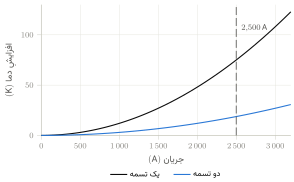
مثال 24.30 (دو تسمه بهتر از یکی) پرسش. شینهٔ مسیِ 100 × 10 mm با 2,500 A چقدر گرم میشود؟ دو تسمهٔ موازی چه؟
پاسخ. حدودِ 75 K؛ با دو تسمه حدودِ 19 K.
تفسیر. با دو تسمه تلفِ هر متر نصف و سطحِ خنکشدن دو برابر میشود: افزایشِ دما یکچهارم. افزایشِ دمای مجاز در اتصالها و کنتاکتها را آزمونِ نوعیِ افزایشِ دما ثابت میکند؛ این برآورد فقط نشان میدهد چرا شینههای پرجریان چندتسمهایاند. وارسی: \(2{,}500^2 \times 2.2 \times 10^{-8}/0.001 \times 1.08 = 148\,\text{W/m}\).
جریانِ مستقیم در لحظهٔ جدا شدن. مؤلفهٔ DC جریانِ خطا با ثابتِ زمانیِ \(\tau = X/(\omega R)\) میرا میشود. کلیدی که زود باز شود، جریانی با افستِ بزرگ قطع میکند:
\[ \frac{i_\text{dc}(t)}{\sqrt{2} I_\text{k}} = e^{-t/\tau} \tag{24.15}\]
DC part of the fault current when the contacts part (teaching):
X/R tau ms 10 ms + opening 30 ms 10 ms + opening 50 ms
10 31.8 28% 15%
17 54.1 48% 33%
30 95.5 66% 53%
45 143.2 76% 66%
near large transformers X/R is high and the DC part decays
slowly: a breaker that parts its contacts quickly must
interrupt a current with a large offset - the DC part at
separation is a rated value of the breaker, compared with
the study's X/R in the specification (ch 26)مثال 24.31 (نزدیکِ ترانسفورماتورِ بزرگ) پرسش. با \(X/R = 30\) و جدا شدنِ کنتاکت در 40 ms پس از آغازِ خطا، چند درصد DC مانده است؟
پاسخ. \(\tau = 95.5\,\text{ms}\) و حدودِ 66 %.
تفسیر. مؤلفهٔ DC در لحظهٔ جدا شدن یک مقدارِ نامیِ کلید است؛ نسبتِ \(X/R\) را مطالعهٔ اتصالِ کوتاه میدهد (فصلِ ۲۶) و هر دو در مشخصه کنارِ هم میآیند. وارسی: \(e^{-40/95.5} = 0.66\).
قوسِ درونی. اگر خطا درونِ تابلو رخ دهد، قوس با ولتاژی حدودِ چند صد ولت انرژی آزاد میکند:
energy of an internal arc in a 33 kV panel (teaching):
arc voltage about 500 V per phase; three phases
current kA duration s energy MJ
25.0 1.0 37.5
25.0 0.1 3.8
12.5 0.5 9.4
tens of megajoules in a closed box: the pressure must go
somewhere - flaps and ducts lead it away from people, and
the internal-arc type test proves the panel does that; an
arc sensor that trips in 0.1 s cuts the energy ten times
(ch 26); the room's volume and vents are part of itمثال 24.32 (دهها مگاژول در یک جعبهٔ بسته) پرسش. انرژیِ قوسِ درونیِ 25 kA در 1 s و در 0.1 s چیست؟
پاسخ. حدودِ 37.5 MJ و 3.8 MJ.
تفسیر. این انرژی فشار و گازِ داغ میسازد. ردهٔ قوسِ درونی تابلو (آزمونِ نوعی) ثابت میکند دریچهها و کانالها آن را از سمتِ دسترسیِ آدم دور میکنند؛ حسگرِ قوس که در 0.1 s قطع کند انرژی را ده برابر کم میکند. حجم و تهویهٔ اتاقِ تابلو هم جزءِ همین طراحی است. وارسی: \(3 \times 500 \times 25{,}000 \times 1 = 37.5\,\text{MJ}\).
ردهٔ قوسِ درونیِ تابلو فقط وقتی معتبر است که درها بسته، پوششها نصب و کانالِ تخلیهٔ فشار همان باشد که آزموده شده است. کار روی تابلوی برقدار و جلوی درِ باز تابع قاعدههای ایمنی و مجوزِ مالک است و این کتاب روالِ آن را نمیدهد.
گازِ SF₆ و اقلیم. تابلوهای گازی با SF₆ کوچک و مطمئناند، ولی این گاز گرمایشزاییِ بسیار بزرگی دارد:
SF6 in 33 kV gas-insulated switchgear (teaching quantities):
panels kg each leak %/yr t CO2e per year over 30 years
18 3.0 0.1 1.30 38.9
18 3.0 0.5 6.48 194.4
18 3.0 1.0 12.96 388.8
losing 2 % of the gas at end of life: 25.9 t CO2e more
(GWP taken as about 24,000; published values differ
slightly between assessments)
small leaks matter because the gas is so potent: gas
handling, recovery at end of life, and the SF6-free
alternatives (vacuum with dry air, other gas mixtures) are
choices with a number (ch 31, ch 53)مثال 24.33 (نشتِ کوچک، وزنِ بزرگ) پرسش. ۱۸ پانل با 3 kg گاز و نشتِ سالانهٔ 0.5 % در سی سال چند تن همارزِ CO₂ است؟
پاسخ. حدودِ 6.5 t در سال و 194 t در سی سال؛ با 2 % از دست رفتن در پایانِ عمر 26 t بیشتر.
تفسیر. گرمایشزاییِ صدساله را حدودِ ۲۴٬۰۰۰ گرفتیم (ارزیابیهای منتشرشده عددهای کمی متفاوت دارند). مدیریتِ گاز، بازیابی در پایانِ عمر و گزینههای بیSF₆ (خلأ با هوای خشک یا آمیختههای دیگر) انتخابهایی با عدداند (فصلهای ۳۱ و ۵۳). وارسی: \(18 \times 3 \times 0.005 \times 24{,}000 = 6{,}480\,\text{kg}\).
فرسایشِ کنتاکت. کنتاکتِ کلید با هر قطع فرسوده میشود، بیشتر با جریانِ بزرگ. یک مدلِ آموزشی جمعِ \(I^2\) قطعشده را با بودجهای مقایسه میکند:
contact wear counted as the sum of I^2 interrupted (teaching model):
budget: 30 interruptions at 25 kA = 18,750 kA^2
duty over 25 years kA each count kA^2 total
load switching, 0.4 kA 0.4 2000 320
feeder faults, 6 kA 6.0 10 360
close-in faults, 12 kA 12.0 3 432
used 1,112 kA^2 = 6% of the budget
thirteen faults wear the contacts more than two thousand
load operations; the exponent (2 here) is the maker's wear
model; the relay's counter of interrupted current tells
maintenance when to inspect the interrupter, not the
calendar alone (ch 52)مثال 24.34 (سیزده خطا در برابرِ دو هزار قطعِ بار) پرسش. در ۲۵ سال، دو هزار قطعِ 0.4 kA، ده خطای 6 kA و سه خطای نزدیکِ 12 kA چند درصدِ بودجهٔ فرسایش را میخورند؟
پاسخ. 1,112 kA² از 18,750، یعنی 6 %؛ سیزده خطا 792 و دو هزار قطعِ بار 320.
تفسیر. شمارندهٔ جریانِ قطعشده در رله به نگهداری میگوید کی قطعکننده را بازرسی کند، نه فقط تقویم (فصلِ ۵۲). توانِ \(2\) در مدل از سازنده میآید. وارسی: \(10 \times 36 + 3 \times 144 = 792\).
- مؤلفهٔ DC در لحظهٔ جدا شدن با \(X/R\) پایینتر از مطالعه سنجیده شده است.
- ردهٔ قوسِ درونی با درِ باز یا کانالِ تخلیهٔ تغییریافته معتبر فرض شده است.
- نشتِ کوچکِ SF₆ بیاهمیت شمرده شده است.
- چرا افزایشِ دمای شینه با مجذورِ جریان بالا میرود؟
- ثابتِ زمانیِ DC برای \(X/R = 20\) چند میلیثانیه است؟
- انرژیِ قوسِ 16 kA در 0.5 s با 500 V در هر فاز؟
- ردهٔ قوسِ درونی چه چیزی را ثابت میکند و در چه شرطی معتبر است؟
- نشتِ 1 % از 54 kg گاز چند تن همارزِ CO₂ در سال است؟
- چرا شمارندهٔ جریانِ قطعشده از تقویم بهتر است؟
24.4.5 فیوز، کلیدِ جداکنندهٔ DC و انتخابِ بِیِ هوایی یا گازی
گزینشپذیریِ فیوزها با انرژی. دو فیوزِ سری گزینشپذیرند اگر فیوزِ کوچک خطا را کاملاً رفع کند (انرژیِ کل، \(I^2t\) کل) پیش از آنکه فیوزِ بزرگ شروع به ذوب کند (انرژیِ پیشقوس):
\[ \left(I^2t\right)_\text{total, down} < \left(I^2t\right)_\text{pre-arc, up} \tag{24.16}\]
fuse selectivity by energy (teaching I2t values, A2s):
pair down total up pre-arc selective
63 A upstream, 25 A downstream 1,400 9,500 yes
63 A upstream, 40 A downstream 4,200 9,500 yes
100 A (make X) up, 63 A (make Y) down 11,000 10,500 NO
the small fuse must clear (its total I2t) before the large
one starts to melt (its pre-arcing I2t); a size ratio of
about 1.6 often works, but the makers' tables decide - the
100/63 pair of two makes fails at that very ratioمثال 24.35 (نسبتِ یک و شش دهم کافی نیست) پرسش. کدام جفت گزینشپذیر نیست و چرا؟
پاسخ. جفتِ 100 و 63 A از دو سازندهٔ مختلف: انرژیِ کلِ پایینی 11,000 از انرژیِ پیشقوسِ بالایی 10,500 A²s بیشتر است، با اینکه نسبتِ اندازه 1.6 است.
تفسیر. قاعدهٔ سرانگشتیِ نسبتِ اندازه برای فیوزهای یک خانواده از یک سازنده ساخته شده است؛ با آمیختنِ سازندهها یا خانوادهها فقط جدولِ گزینشپذیریِ سازنده یا مقایسهٔ \(I^2t\) اعتبار دارد. وارسی: \(11{,}000 > 10{,}500\).
کلیدِ جداکنندهٔ DC در 1,500 V. قوسِ جریانِ مستقیم با گذر از صفر خاموش نمیشود؛ کلید باید ولتاژِ قوسی بالاتر از ولتاژِ منبع بسازد. پس چند فاصلهٔ کنتاکت را سری میکند:
a 1,500 V DC string isolator: contacts in series (teaching):
arc voltage per contact gap V gaps needed poles x gaps
250 8 4 x 2
300 6 3 x 2
400 5 3 x 2
a DC arc does not stop at a zero crossing: the switch must
build an arc voltage above the source voltage, so it puts
several gaps in series (both poles) and uses magnets or
arc chutes; the DC rating at the string's coldest voltage
(ch 10) is the one that counts, not an AC ratingمثال 24.36 (شش فاصله برای یک رشته) پرسش. اگر هر فاصله حدودِ 300 V ولتاژِ قوس بسازد، برای 1,500 V با حاشیهٔ 1.2 چند فاصله لازم است؟
پاسخ. شش فاصله، سه فاصله در هر قطب.
تفسیر. ولتاژی که کلید باید قطع کند ولتاژِ مدارِ بازِ رشته در سردترین صبح است (فصلِ ۱۰)، نه ولتاژِ کار؛ رتبهٔ DC کلید با ردهٔ استفادهاش (قطعِ بار یا فقط جداسازی) از سازنده میآید و رتبهٔ AC هیچ جایش را نمیگیرد. وارسی: \(\lceil 1{,}800/300 \rceil = 6\).
آرایهٔ خورشیدی در روشنایی خاموش نمیشود: باز کردنِ کلیدِ جداکننده رشته را بیولتاژ نمیکند. کار روی مدارهای DC آرایه تابعِ روالهای سازنده و قاعدههای ایمنیِ مالک است و این کتاب روالِ آن را نمیدهد.
بِیِ 132 kV: هوایی، گازی یا دورگه. معماریِ تابلو در فشارِ قوی سه گزینهٔ اصلی دارد:
a 132 kV bay: air, gas or hybrid (indices against AIS, teaching):
option area cost outage h/maint SF6 index
air-insulated (AIS) 1.00 1.00 12.0 0.0
gas-insulated (GIS) 0.25 1.45 4.0 1.0
hybrid (gas breaker, air bus) 0.55 1.20 6.0 0.4
gas insulation buys space and shorter outages for money and
gas; air is cheap where land is cheap - at Plant P's open
site AIS is the teaching basis (D-029), GIS where a town or
pollution presses; SF6-free gas bays change the last columnمثال 24.37 (زمینِ ارزان، هوای ارزان) پرسش. چرا مبنای آموزشیِ نیروگاهِ P بِیِ هوایی است و کجا گازی برنده میشود؟
پاسخ. در محلِ باز و ارزان، بِیِ هوایی ارزانتر است و SF₆ ندارد؛ گازی یکچهارمِ جا میگیرد و خاموشیِ نگهداریاش کوتاهتر است، پس در شهر، کنارِ ساحل یا در آلودگیِ شدید برنده میشود.
تفسیر. شاخصها آموزشیاند و نسبت به بِیِ هوایی؛ انتخاب با هزینهٔ زمین، آلودگی (مثال 24.73)، دسترسی و سیاستِ گاز (SF₆ یا بیSF₆) گرفته میشود و در D-029 برای نیروگاهِ P هوایی است. وارسی: خروجیِ جدول.
- گزینشپذیریِ فیوزهای دو سازنده با نسبتِ اندازه فرض شده است.
- کلیدِ DC با رتبهٔ AC یا با ولتاژِ کارِ رشته انتخاب شده است.
- شرطِ گزینشپذیریِ دو فیوز را با انرژی بنویسید.
- چرا نسبتِ اندازهٔ فیوزها برای دو سازندهٔ مختلف اعتبار ندارد؟
- چرا کلیدِ DC چند فاصلهٔ سری دارد؟
- ولتاژِ کدام ساعتِ روز رتبهٔ کلیدِ DC رشته را تعیین میکند؟
- دو موقعیتی که بِیِ گازی را برنده میکند؟
24.4.6 سازوکارِ کلید و چرخهٔ وصلِ دوباره
ایده. کلیدِ قدرت با انرژیِ ذخیره در فنر (یا سازوکارِ هیدرولیک، مغناطیسی) باز و بسته میشود؛ موتورِ کوچکی فنر را پس از هر کار دوباره پر میکند. توالیِ کارِ نامی روی پلاک میگوید سازوکار چند کار را پشتِ سرِ هم بیپر شدن انجام میدهد؛ وصلِ دوبارهٔ خودکارِ خط باید درونِ آن جا شود:
breaker mechanism energy for an auto-reclose cycle (teaching):
spring stores 900 J; open 120 J, close 300 J
cycle O - 0.3 s - CO needs 540 J: enough
a second CO right after: 960 J - needs the motor
to recharge (about 10-15 s) - the rated operating sequence
on the nameplate says what the mechanism can do; line
reclosing (utility's choice) must fit inside it; cable
feeders of Plant P do not reclose (cable faults are
permanent)مثال 24.38 (باز، سه دهم ثانیه، بستهوباز) پرسش. فنرِ 900 J با باز کردنِ 120 J و بستنِ 300 J، چرخهٔ «باز – 0.3 s – بستهوباز» را میگذراند؟ دومی را چه؟
پاسخ. چرخهٔ نخست 540 J میخواهد: بله؛ بستهوبازِ دوم بلافاصله 960 J: نه، باید موتور فنر را پر کند (حدودِ ده تا پانزده ثانیه).
تفسیر. وصلِ دوباره در خطِ هوایی سودمند است چون بیشترِ خطاهای آن گذرایند (صاعقه، شاخه)؛ انتخاب و تنظیمش با بهرهبردار است. فیدرهای کابلیِ نیروگاهِ P وصلِ دوباره ندارند: خطای کابل ماندگار است و وصلِ دوباره آسیب را بیشتر میکند. وارسی: \(120 + 300 + 120 = 540\).
- وصلِ دوبارهٔ خودکار روی فیدرِ کابلی فعال شده است.
- توالیِ کارِ نامی روی پلاک چه میگوید؟
- چرا خطِ هوایی وصلِ دوباره دارد و کابل نه؟
- با فنرِ 700 J چرخهٔ «باز – بستهوباز» ممکن است؟
24.4.7 کلیدزنی: گازِ سرد، بریدنِ جریان و قطعِ جریانِ خازنی
چگالی، نه فشار. عایقِ گازیِ تابلو به چگالیِ گاز بستگی دارد. در محفظهٔ بسته چگالی ثابت است ولی فشار با دما تغییر میکند (\(p \propto T\)):
SF6 in a sealed panel: same gas, different pressure (ideal gas):
ambient C pressure bar abs density relative
-25 1.19 1.00
0 1.30 1.00
20 1.40 1.00
40 1.50 1.00
55 1.57 1.00
the insulation depends on the density, not the pressure: a
cold morning lowers the pressure without any leak; a density
monitor (temperature-compensated) alarms only when gas has
really gone - a plain pressure gauge would cry wolf in
winter and miss a leak in summerمثال 24.39 (صبحِ سرد بینشت) پرسش. محفظهای که در 20 °C با 1.40 bar پر شده، در −25 و 55 °C چه فشاری دارد؟
پاسخ. حدودِ 1.19 و 1.57 bar، با چگالیِ یکسان.
تفسیر. فشارسنجِ ساده در زمستان بیدلیل هشدار میدهد و در تابستان نشتِ واقعی را میپوشاند؛ پایشگرِ چگالی که دما را جبران میکند فقط وقتی گاز واقعاً رفته باشد هشدار میدهد. وارسی: \(1.40 \times 248.15/293.15 = 1.19\).
بریدنِ جریان در کلیدِ خلأ. کلیدِ خلأ جریانِ کوچکِ مغناطیسکنندگیِ ترانسفورماتورِ بیبار را پیش از گذرِ طبیعی از صفر میبُرد؛ انرژیِ مغناطیسیِ ترانسفورماتور در ظرفیتِ آن نوسان میکند:
\[ U \approx I_\text{ch}\,\sqrt{L/C} \tag{24.17}\]
current chopping: a vacuum breaker opens an unloaded transformer
U = I_ch x sqrt(L/C) (teaching surge impedances)
chopped A surge impedance ohm overvoltage kV peak vs 33 kV peak
1.0 5000 5.0 0.2 x
3.0 10000 30.0 1.1 x
3.0 20000 60.0 2.2 x
5.0 20000 100.0 3.7 x
the magnetising current is cut before its zero and the
transformer's magnetic energy rings into its capacitance:
several times the normal peak on a dry-type or cable-fed
transformer - wind farms switch many such transformers, so
surge arresters or RC snubbers at the unit transformers are
a common answer, decided with the makers' studiesمثال 24.40 (چند برابرِ قلهٔ عادی) پرسش. با بریدنِ 3 A و امپدانسِ موجِ 20 kΩ، اضافهولتاژ چند برابرِ قلهٔ فاز است؟
پاسخ. 60 kV، حدودِ 2.2 برابرِ قلهٔ 26.9 kV.
تفسیر. نیروگاهِ بادی دهها ترانسفورماتورِ واحد را با کلید باز و بسته میکند؛ ترانسفورماتورِ خشک ظرفیتِ کمی دارد و امپدانسِ موجش بالاست (کابلِ میانِ کلید و ترانسفورماتور ظرفیت میافزاید و این اضافهولتاژ را کم میکند، ولی کابلِ کوتاه راه را برای بازآتشگیریهای پیاپیِ کلیدِ خلأ باز میگذارد). برقگیر یا خازن–مقاومتِ ضربهگیر (RC snubber) کنارِ ترانسفورماتور پاسخِ رایج است و با مطالعهٔ سازندهها تصمیم گرفته میشود (فصلِ ۲۷). وارسی: \(3 \times 20{,}000 = 60\,\text{kV}\)؛ \(33\sqrt{2}/\sqrt{3} = 26.9\).
قطعِ جریانِ خازنیِ کابل. کلیدِ فیدر باید جریانِ شارژِ کابلِ بیبار را هم قطع کند:
capacitive current the feeder breakers must switch (33 kV, teaching):
circuit uF per phase charging A
feeder =WS1 (4.4 km) 1.02 6.1
feeder =PVF1 (2.4 km) 0.50 3.0
whole section A 2.68 16.0
section A + B (coupler) 5.36 32.1
small next to the load current, but switching it off is a
special duty: the capacitor keeps its charge and the voltage
across the opening contacts doubles - a breaker that
restrikes makes overvoltages; the cable-charging switching
rating (and its low-restrike class) belongs in the
specification next to the fault ratingمثال 24.41 (جریانِ کوچک، وظیفهٔ ویژه) پرسش. کلیدِ کوپلر با هر دو بخشِ شینه بیبار چه جریانِ خازنیای قطع میکند؟ چرا مهم است؟
پاسخ. حدودِ 32 A. خازن بارِ خودش را نگه میدارد و ولتاژِ دو سرِ کنتاکتِ باز به دو برابرِ قله میرسد؛ کلیدی که دوباره بزند (restrike) اضافهولتاژ میسازد.
تفسیر. رتبهٔ قطعِ جریانِ شارژِ کابل و ردهٔ کمبرگشت کنارِ رتبهٔ خطا در مشخصه میآید. وارسی: \(3.14 \times 10^{-4} \times 5.36 \times 19{,}053 = 32\).
- فشارسنجِ ساده بهجای پایشگرِ چگالی به کار رفته است.
- اضافهولتاژِ بریدنِ جریان در ترانسفورماتورهای واحد بررسی نشده است.
- چرا پایشگرِ چگالی از فشارسنج بهتر است؟
- فشار در 40 °C برای پرشدگیِ 1.40 bar در 20 °C؟
- اضافهولتاژِ بریدنِ 2 A با 15 kΩ؟
- چرا نیروگاهِ بادی بیشتر از نیروگاهِ دیگر با بریدنِ جریان سروکار دارد؟
- جریانِ شارژِ کابلی با 1.5 µF در هر فاز در 33 kV؟
24.4.8 نگهداشتنِ تابلو: رطوبت، گشتاور و تصویرِ فروسرخ
کیوسکِ بیرونی خشک بماند. شبِ بیابان تند سرد میشود؛ سطحهای درونِ کیوسکِ RMU یا جعبهتقسیم زیرِ نقطهٔ شبنم میروند و رطوبت روی عایق مینشیند. گرمکنی که چند کلوین بالای هوای بیرون نگهش دارد کافی است: \(P = U A \Delta T\):
anti-condensation heater of an outdoor RMU kiosk (teaching):
walls and roof 18 m2, heat loss 3.5 W/(m2 K)
kept above ambient K heater W
3 189
5 315
8 504
a few kelvin above the night air keeps the surfaces above
the dew point when the desert night cools fast; the heater
runs from the auxiliary supply with a humidistat, and its
failure is an alarm - tracking on wet insulation is how
many outdoor switchgear faults beginمثال 24.42 (سیصد وات برای خشک ماندن) پرسش. کیوسکی با 18 m² دیوار و سقف و ضریبِ 3.5 W/(m²·K) برای 5 K بالای هوا چه گرمکنی میخواهد؟
پاسخ. حدودِ 315 W.
تفسیر. گرمکن از برقِ کمکی با رطوبتسنج کار میکند و خرابیاش هشدار است؛ ردیابیِ جریان روی عایقِ خیس آغازِ بسیاری از خطاهای تابلوهای بیرونی است. این بار در فهرستِ بارهای کمکی (فصلِ ۲۳) هم هست. وارسی: \(18 \times 3.5 \times 5 = 315\).
گشتاورِ پیچِ اتصالِ شینه. نیروی گیره از گشتاور میآید (\(F = T/(K d)\)) و مقاومتِ تماس با نیروی گیره کم میشود:
torque on an M12 busbar joint: clamp force F = T / (K d)
(teaching: contact resistance ~ 1 / sqrt(F))
torque N m clamp kN relative R relative heat at same I
70 29.2 1.00 1.00
50 20.8 1.18 1.18
35 14.6 1.41 1.41
20 8.3 1.87 1.87
half the torque leaves 41 % more resistance and 41 % more
heat in the joint - which heats, oxidises and loosens it
further; the torque on the maker's drawing, a torque
wrench with a calibration record, and a paint mark on each
bolt are the assembly evidence (lesson C)مثال 24.43 (نصفِ گشتاور، چهل درصد گرمای بیشتر) پرسش. پیچِ M12 با 35 بهجای 70 N·m چه نیرو و مقاومتِ نسبیای دارد؟
پاسخ. 14.6 kN بهجای 29.2 kN و مقاومتِ 1.41 برابر.
تفسیر. گرمای بیشترِ اتصال آن را اکسید و شلتر میکند: یک حلقهٔ بد. گشتاورِ روی نقشهٔ سازنده، آچارِ گشتاور با سابقهٔ کالیبراسیون و علامتِ رنگ روی هر پیچ شاهدهای مونتاژند (بخش 24.4.3). وارسی: \(35/(0.2 \times 0.012) = 14{,}583\,\text{N}\).
بازرسیِ فروسرخ. در بارِ زیاد، تصویرِ فروسرخ اتصالهای گرم را پیدا میکند؛ افزایشِ دما نسبت به قطعهٔ همانند در ردهٔ اقدام مینشیند:
infrared survey at full load: rise over a like part (teaching classes)
item rise K action
=WS1-Q1 cable lug L1 6 normal
=WS1-Q1 cable lug L2 31 repair at next outage
=WS1-Q1 cable lug L3 5 normal
+H01 busbar joint 4 48 act now
=A1-T1 LV bushing 12 watch, re-scan
LV board main breaker 3 normal
+H07 earthing transformer 9 normal
UPS input breaker 17 repair at next outage
the busbar joint at 48 K and the lug at 31 K are the loose or
dirty contacts of the torque lesson; the survey is taken at
high load (the rise grows with I^2), from outside closed
covers through infrared windows where the gear has them -
the thresholds and the access are the owner's procedure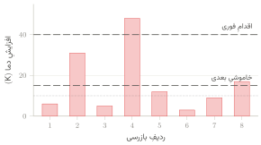
مثال 24.44 (دو اتصالِ شل) پرسش. کدام اقلام اقدامِ فوری و کدام تعمیر در خاموشیِ بعدی میخواهند؟
پاسخ. اتصالِ شینهٔ +H01 با 48 K اقدامِ فوری؛ کابلشوی L2 با 31 K و کلیدِ ورودیِ UPS با 17 K در خاموشیِ بعدی؛ بوشینگِ LV با 12 K پایش.
تفسیر. افزایش با مجذورِ جریان بالا میرود؛ پس بازرسی در بارِ زیاد انجام و دما به بارِ کامل برگردانده میشود. تصویربرداری از بیرونِ پوششهای بسته و از پنجرههای فروسرخ، جایی که تابلو دارد، انجام میشود؛ مرزهای اقدام و دسترسی از روالِ مالکاند. وارسی: خروجیِ برنامه.
- بازرسیِ فروسرخ در بارِ کم انجام و نتیجه به بارِ کامل برگردانده نشده است.
- گشتاورِ پیچها بیآچارِ کالیبره و بیعلامت ثبت شده است.
- گرمکنِ لازم برای 8 K بالای هوا در همان کیوسک؟
- چرا رطوبت روی عایق خطرناک است؟
- نیروی گیرهٔ پیچِ M12 با 50 N·m؟
- چرا بازرسیِ فروسرخ در بارِ زیاد انجام میشود؟
- اتصالی با 20 K افزایش در 60 % بار، در بارِ کامل حدوداً چند کلوین است؟
24.5 ت. آزمایشگاهِ مهندسی
24.5.1 وارسیِ فهرستِ کابل با برنامه
ایده. فهرستِ کابل (به انگلیسی cable schedule) برای هر بخش نام، مقطع، طول، جریان و مسیر دارد. برنامه هر سطر را با جریانِ مجاز در محل، تحملِ خطا، شعاعِ خمِ مسیر و نمودارِ تکخطی میسنجد. سه خطا در فهرستِ آموزشی کاشته شده است:
SCHEDULE = [ # tag, mm2, km, units carried, min bend radius on route (m)
("=WS1-W1", 630, 1.1, 4, 2.0), ("=WS1-W2", 240, 1.1, 3, 2.0),
("=WS1-W3", 240, 1.1, 2, 2.0), ("=WS1-W4", 240, 1.1, 1, 2.0),
("=PVF1-W1", 400, 0.6, 4, 1.5), ("=PVF1-W2", 240, 0.6, 3, 2.0),
("=PVF1-W3", 240, 0.6, 2, 2.0), ("=PVF1-W4", 240, 0.6, 1, 2.0),
("=PVF1-W9", 240, 0.6, 1, 2.0),
]
DIAM_MM = {240: 92.0, 400: 106.0, 630: 121.0} # overall, 3-core (teaching)33 kV cable schedule check (9 rows, three errors planted):
=PVF1-W1: 368 A above 351 A in place
=PVF1-W1: route bend 1.5 m below 1.59 m
=PVF1-W9: not on the one-line
the 400 mm2 first section of PVF1 is too small in this
trench and its route bend too tight; =PVF1-W9 is a cable
the one-line does not have (a copy-paste row) - a schedule
is checked against the one-line, not only against itselfمثال 24.45 (سطری که در نقشه نیست) پرسش. وارسی چه یافتههایی دارد؟ کدام را فقط مقایسه با نمودارِ تکخطی پیدا میکند؟
پاسخ. بخشِ نخستِ PVF1 با 400 mm² برای 368 A کوچک است و خمِ مسیرش (1.5 m) از کمینهٔ 1.59 m تنگتر؛ سطرِ =PVF1-W9 در نمودارِ تکخطی وجود ندارد (سطری کپیشده).
تفسیر. فهرست باید با منبعِ خود (نمودارِ تکخطی و جانمایی) سنجیده شود، نه فقط با خودش؛ کابلی که در نقشه نیست یا خریده میشود و جایی نمیرود، یا جای کابلِ دیگری را میگیرد. وارسی: سه یافته برای سه خطا.
24.5.2 مثالِ کارشدهٔ ۲: از نقشه تا پانل و محفظه
ایده. هر نماد روی نمودارِ تکخطی باید به یک پانل، یک محفظه و پایانهها برسد، و هر پانل شاهدهای کارخانه و محلِ خود را داشته باشد. بخشِ A تابلوی 33 kV نیروگاه:
PANELS = [ # panel, function, breaker A, cable terminations, CTs
("+H01", "incomer from =T1 (=T1-Q2)", 1250, 2, "3 + 3"),
("+H02", "feeder =WS1", 630, 1, "3"),
("+H03", "feeder =WS2", 630, 1, "3"),
("+H04", "feeder =PVF3", 630, 1, "3"),
("+H05", "feeder =BESS-A", 630, 1, "3"),
("+H06", "station service =A1", 630, 1, "3"),
("+H07", "earthing transformer", 630, 1, "3 + 1"),
("+H08", "bus coupler =MV-Q0 (normally open)", 2500, 0, "3"),
("+H09", "metering and bus VT", 0, 0, "VT"),
]worked example 2: 33 kV switchboard, section A, to panels
panel function A terms CTs
+H01 incomer from =T1 (=T1-Q2) 1250 2 3 + 3
+H02 feeder =WS1 630 1 3
+H03 feeder =WS2 630 1 3
+H04 feeder =PVF3 630 1 3
+H05 feeder =BESS-A 630 1 3
+H06 station service =A1 630 1 3
+H07 earthing transformer 630 1 3 + 1
+H08 bus coupler =MV-Q0 (normally open) 2500 0 3
+H09 metering and bus VT - 0 VT
every panel has four compartments: busbar, breaker (or
switch), cable, and low-voltage (relays, wiring); each
one-line symbol now has a panel, a compartment and
terminals
evidence per panel:
factory: type-test certificates of the design (internal
arc, short-time, temperature rise), routine tests of
this unit (power-frequency voltage, resistance of the
main circuit, function of mechanisms and interlocks)
site: installation checks, termination records, tests
of the cables, functional tests of trips and interlocks
terminations on section A: 8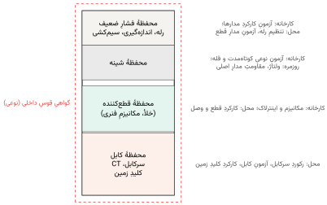
مثال 24.46 (نُه پانل، هشت سرکابل) پرسش. بخشِ A تابلو را به پانلها برگردانید: هر پانل چه کارکردی، چه کلیدی و چند سرکابل دارد؟ شاهدِ کارخانه و محلِ هر پانل چیست؟
پاسخ. ۹ پانل: ورودیِ T1 (1,250 A، دو سرکابل)، چهار فیدر و فیدرِ خدمات (630 A)، ترانسفورماتورِ زمین، کوپلر (2,500 A، عادیِ باز) و پانلِ اندازهگیری؛ جمعاً ۸ سرکابل. کارخانه: گواهیهای نوعی و آزمونهای روزمره؛ محل: وارسیِ نصب، رکوردِ سرکابل، آزمونِ کابل و آزمونِ کارکردِ قطع و اینترلاک.
تفسیر. پیوندِ نماد ← پانل ← محفظه ← پایانه ← شاهد همان زنجیرهای است که بازرس در پذیرش دنبال میکند. ورودی دو سرکابل دارد چون جریانِ 1,250 A با یک کابلِ سهرشتهای نمیرود. وارسی: \(2 + 6 \times 1 = 8\).
24.5.3 برنامهٔ بازرسی و آزمون
inspection and test plan for the 33 kV cable work (concept):
step point record
trench and duct inspection before laying hold survey, photos
drum check: type, length, sealing, test sheet witness receiving record
pulling with tension logging witness pulling record
bending radius and position in the trench inspect as-laid record
backfill, tape, marker before closing hold photos, levels
joints and terminations by qualified jointers witness jointing record
sheath test and cable test after laying witness test record
as-built route survey inspect as-built drawing
a hold point stops the work until the inspector releases
it; a witness point is notified and may be attended; the
methods and the safety of the work belong to the maker's
instructions and trained staff (ch 47-49)مثال 24.47 (نقطههای توقف) پرسش. کدام گامها نقطهٔ توقفاند و چرا؟
پاسخ. بازرسیِ ترانشه پیش از کابلکشی و بازرسیِ خاکریز، نوار و نشانه پیش از بستن: پس از آنها دیدن ممکن نیست.
تفسیر. نقطهٔ توقف کار را تا آزادسازی متوقف میکند؛ نقطهٔ شاهد اطلاع داده میشود و میتوان در آن حاضر بود. هر گام یک سند دارد که پرونده را میسازد (فصلهای ۴۷ تا ۴۹). روشها و ایمنیِ کار در دستورالعملهای سازنده و با کارکنانِ آموزشدیده است.
- فهرستِ کابل با چه منابعی سنجیده میشود؟
- زنجیرهٔ نماد تا شاهد را بنویسید.
- نقطهٔ توقف و نقطهٔ شاهد را از هم جدا کنید.
- چرا ورودیِ ترانسفورماتور دو سرکابل دارد؟
24.5.4 از پانل تا پایانه، از مفصل تا سابقه
شمارِ پایانهها. نگاشتِ نمودار به محفظه و پایانه (بخش 24.5.2) با شمارش کامل میشود: هر هستهٔ CT سه فاز و چهار سیم دارد، هر مدارِ ولتاژ چهار، و فرمان، هشدار و تغذیه بقیه را:
terminal count of the 33 kV section A panels (teaching):
panel CT cores V-circ other terminals
+H01 incomer 2 3 40 76
+H02..H05 feeders 1 2 30 200
+H06 station service 1 2 28 48
+H07 earthing transformer 1 2 24 44
+H08 coupler 1 2 30 50
+H09 metering and VT 0 1 36 40
total 458 terminals, plus 20 % spare: 550
every terminal has a number on the wiring diagram, a label
in the panel and a line in the cable core list; the spare
terminals are the room for the changes that always comeمثال 24.48 (پانصد و پنجاه پایانه) پرسش. نُه پانلِ بخشِ A چند پایانه دارند و با بیست درصد ذخیره چند؟
پاسخ. 458 و با ذخیره 550.
تفسیر. هر پایانه شمارهای در نقشهٔ سیمکشی، برچسبی در پانل و سطری در فهرستِ رشتههای کابل دارد؛ پایانههای ذخیره جای تغییرهاییاند که همیشه میآیند (مثلاً CTِ ورودیِ تازهٔ فصلِ ۲۶). وارسی: فیدرها \(4 \times (12 + 8 + 30) = 200\).
مفصل یا کابل: کدام بیشتر خراب میشود؟ با نرخهای آموزشی:
faults over 25 years in a 4.4 km string: cable against joints
(teaching rates: 0.002 per km a year, 0.002 per joint a year)
drum m joints cable faults joint faults total
500 8 0.22 0.40 0.62
750 4 0.22 0.20 0.42
1100 0 0.22 0.00 0.22
with short drums the joints fail more often than the cable
itself: fewer joints, and joints made by qualified jointers
with records, are the cheapest reliability (lesson B)مثال 24.49 (مفصلهایی که از کابل بدترند) پرسش. در ۲۵ سال، رشتهٔ 4.4 km با قرقرههای 500 m و 1,100 m چند خرابیِ مورد انتظار دارد؟
پاسخ. 0.62 در برابرِ 0.22؛ با قرقرهٔ کوتاه، مفصلها از خودِ کابل بیشتر خراب میشوند.
تفسیر. کم کردنِ مفصلها و ساختِ آنها به دستِ مفصلسازانِ آموزشدیده با سابقه ارزانترین قابلیتِ اطمینان است (بخش 24.3.3). نرخها آموزشیاند؛ دادهٔ واقعی از تجربهٔ بهرهبردارها و سازندهها میآید. وارسی: \(8 \times 0.002 \times 25 = 0.40\).
دفترِ نقطههای توقف. برنامهٔ بازرسی و آزمون (بخش 24.5.3) نقطههای توقف دارد؛ دفترِ آنها را برنامه میخواند:
hold-point log of one feeder (teaching):
H1 trench before laying released inspector
H2 backfill before closing released foreman
W1 drum receiving notified -
H3 joint 4 before backfill released inspector
H4 test after laying open -
H5 backfill section 3 released -
hold points released by someone other than the inspector: 2
H2 backfill before closing (foreman)
H5 backfill section 3 (nobody named)
a hold point released by the crew is not released: the work
after it is at risk and the record is a nonconformity; the
open H4 keeps the feeder from energisation (ch 48)مثال 24.50 (نقطهٔ توقفی که سرکارگر آزاد کرد) پرسش. کدام نقطههای توقف درست آزاد نشدهاند و پیامدش چیست؟
پاسخ. H2 (سرکارگر) و H5 (بینام)؛ H4 هنوز باز است.
تفسیر. نقطهٔ توقفی که گروهِ کار آزاد کند آزاد نشده است: کارِ پس از آن در خطر و سابقه یک عدمانطباق است که باید بررسی شود (شاید با باز کردنِ دوبارهٔ خاکریز). H4ِ باز، فیدر را از برقدار شدن بازمیدارد (فصلِ ۴۸). وارسی: دو ردیف در خروجی.
- نقطهٔ توقف را گروهِ کار آزاد کرده است.
- پایانهٔ ذخیره در تابلو پیشبینی نشده است.
- یک فیدر با یک هستهٔ CT، دو مدارِ ولتاژ و ۳۰ پایانهٔ دیگر چند پایانه دارد؟
- چرا پایانهٔ ذخیره لازم است؟
- با قرقرهٔ 750 m چند خرابیِ مورد انتظار در ۲۵ سال؟
- فرقِ نقطهٔ توقف و نقطهٔ گواهی چیست؟
- نقطهٔ توقفی که بینام آزاد شده چه پیامدی دارد؟
24.5.5 تخصیصِ طولهای برش به قرقرهها و شینهٔ زمینِ تابلو
تخصیصِ برشها. طولِ هر بخشِ کابل از نقشهٔ مسیرِ برداشتشده میآید؛ هر قرقره چند برش را میبرد و باقیمانده هدر میرود. روشِ ساده و خوب نخستین جای خالی، بزرگترین اول است:
def allocate(cuts: list, drum: float) -> list:
"""First-fit decreasing: put each cut length (largest first) on the
first drum with room; return the list of drums (lists of cuts)."""
drums: list = []
for c in sorted(cuts, reverse=True):
for d in drums:
if sum(d) + c <= drum:
d.append(c)
break
else:
drums.append([c])
return drumsallocating surveyed cut lengths (km, with 2 % for terminations) to drums:
drums of 1.2 km: 11 drums, off-cut 3.08 km (23%)
drums of 2.4 km: 5 drums, off-cut 1.88 km (16%)
drums of 3.6 km: 4 drums, off-cut 4.28 km (30%)
short drums leave an off-cut on every cut; very long drums
leave large remainders; the middle size wastes least here -
and longer drums weigh more (lesson B) and are cut on site
with the off-cuts stored; the allocation is made from the
route survey, not from the design lengths, and repeated
when the survey changesمثال 24.51 (قرقرهٔ میانه کمترین هدر) پرسش. سیزده برش (چهار بخشِ بادی و نُه بخشِ کوتاه) را به قرقرههای 1.2، 2.4 و 3.6 km تخصیص دهید. کدام کمترین هدر را دارد؟
پاسخ. 1.2 km: ۱۱ قرقره، 23 % هدر؛ 2.4 km: ۵ قرقره، 16 %؛ 3.6 km: ۴ قرقره، 30 %.
تفسیر. قرقرهٔ کوتاه برای هر برش یک باقیمانده دارد و قرقرهٔ خیلی بلند باقیماندهٔ بزرگ؛ اندازهٔ میانه اینجا بهترین است. ولی قرقرهٔ بلندتر سنگینتر است (بخش 24.3.4) و برش در محل انجام میشود. تخصیص از برداشتِ مسیر ساخته میشود، نه از طولهای طراحی، و با هر تغییرِ برداشت تکرار میشود. وارسی: خروجیِ برنامه.
شینهٔ زمینِ تابلو. هر بدنه، کلیدِ زمین و سرِ غلافِ کابل به شینهٔ زمینِ تابلو وصل است و آن به شبکهٔ زمینِ پست (فصلِ ۲۶):
earth bar of the 33 kV switchboard (copper, k 143 as in lesson A):
rated short-time current 25 kA for 1 s: S = 175 mm2
chosen: copper bar 40 x 5 mm = 200 mm2 (above the minimum)
every panel's frame, earthing switch and cable screen ends
on it, and it is bonded to the station earth grid at two
points at least (ch 26) - its rating is the switchgear's
rating, because an earth switch closed onto a live circuit
sends the full fault current through itمثال 24.52 (رتبهٔ شینهٔ زمین همان رتبهٔ تابلوست) پرسش. چرا شینهٔ زمین برای 25 kA در 1 s اندازه میشود، در حالی که جریانِ خطای زمینِ 33 kV فقط 400 A است؟
پاسخ. کلیدِ زمینی که اشتباهاً روی مدارِ برقدار بسته شود، جریانِ کاملِ خطای سهفاز را از شینهٔ زمین میگذراند؛ کمینه 175 mm² و انتخاب 200 mm².
تفسیر. قفلهای داخلی (بخش 24.4.3) جلوی این اشتباه را میگیرند، ولی تابلو برای آن ساخته و آزموده میشود (ظرفیتِ وصلِ کلیدِ زمین). وارسی: \(25{,}000 \times \sqrt{1}/143 = 175\).
- روشِ «نخستین جای خالی، بزرگترین اول» را با زبانِ خودتان بنویسید.
- چرا تخصیص از برداشتِ مسیر ساخته میشود؟
- شینهٔ زمین برای 31.5 kA در 1 s چه مقطعی میخواهد؟
24.6 ث. توزیعِ کمکی LV و DC
24.6.1 کابل برای هر فیدرِ فهرستِ بار
ایده. روشهای این فصل به فیدرهای فشارِ ضعیفِ خدماتِ ایستگاه (فصلِ ۲۳) میرسند: هر فیدر با جریان (با ضریبِ گروه)، افت (حدِ آموزشیِ 3 %) و تحملِ خطای تابلو (7.9 kA برای 0.1 s) کابل میگیرد:
def lv_cable(i: float, length_m: float, pf: float, ik_ka: float,
t_s: float = 0.1, drop_max: float = 3.0):
"""Smallest Cu section that carries i, keeps the drop under drop_max
% at 0.4 kV and withstands ik for t (adiabatic, k = 143)."""
for mm2, (r20, i0) in src.LV_CABLES.items():
r = cb.r_at(r20, 70) # PVC/XLPE in service
d = cb.drop_pct(i, length_m / 1e3, r, 0.08, pf, 0.4)
ok_sc = cb.withstand_ka(mm2, t_s, src.K_CU) >= ik_ka
if i0 * 0.8 >= i and d <= drop_max and ok_sc:
return mm2, d
raise ValueError("no section in the table")LV cable schedule from the ch 23 load register (Cu, 0.4 kV):
feeder I A m mm2 drop %
DC chargers 110 V 19 15 25 0.10
UPS: SCADA, PPC, telecom 38 20 25 0.28
control room HVAC 51 80 25 1.38
switchgear room ventilation 34 60 25 0.69
on-load tap changer motors 5 120 25 0.21
transformer cooling fans 27 120 25 1.10
substation lighting and security 23 150 25 1.26
drainage and sump pumps 14 200 25 0.92
water pumping and treatment 68 350 95 2.45
cleaning robots charging 91 400 185 2.17
workshop and stores 56 90 25 1.79
maintenance socket outlets 48 100 25 1.70
staff facilities 38 250 35 2.55
1,955 m of feeders; the long ones (water, robots, staff)
are sized by the drop; all the others by the fault: 7.9 kA
for 0.1 s needs 17.5 mm2, so 25 mm2 even for a 5 A motor;
a current-limiting breaker lets through far less I2t and
allows smaller cables - its let-through curve, from the
maker, decides; the factor 0.8 stands in for groupingمثال 24.53 (خطا کوچکها را بزرگ میکند) پرسش. کدام فیدرها را افت و کدام را خطا اندازه میکند؟ چه چیزی اجازهٔ کابلِ کوچکتر میدهد؟
پاسخ. آب (95 mm²)، رباتها (185 mm²) و رفاهی (35 mm²) را افت؛ بقیه را خطا: 17.5 mm² لازم است، پس 25 mm² حتی برای موتورِ 5 A.
تفسیر. کلیدِ محدودکنندهٔ جریان انرژیِ عبوری (\(I^2t\)) را بسیار کم میکند و اجازهٔ کابلِ کوچکتر میدهد؛ منحنیِ عبوریِ سازنده تصمیم میگیرد. هماهنگیِ کلید و کابل یک وارسی است، نه پیشفرض. وارسی: \(7{,}900 \times \sqrt{0.1}/143 = 17.5\).
24.6.2 مدارِ قطعِ DC، جداسازیِ DC و جداسازیِ مسیرها
مدارِ قطع. بوبینِ قطعِ کلید باید در بدترین حالتِ باتری (پایانِ دشارژ) هم کار کند:
the DC trip circuit: voltage at the coil at the end of discharge
battery 96.2 V; coil draws 5 A; loop length = 2 x route
route m section mm2 drop V at coil V % of 110 V
80 2.5 7.03 89.2 81%
200 2.5 17.57 78.7 72%
200 4.0 10.98 85.3 78%
300 6.0 10.98 85.3 78%
a trip coil that must work from 70 % of rated voltage still
works at 200 m on 2.5 mm2, but the margin shrinks with the
route: DC circuits are sized for the worst battery state,
not the float voltageمثال 24.54 (ولتاژ در بوبین) پرسش. با باتریِ 96.2 V و بوبینِ 5 A، ولتاژ در بوبین برای مسیرِ 200 m با 2.5 و 4 mm² چیست؟
پاسخ. 78.7 V (72 %) و 85.3 V (78 %).
تفسیر. اگر بوبین از 70 % ولتاژِ نامی کار کند، هر دو پذیرفتهاند ولی 2.5 mm² حاشیهٔ کمی دارد. مدارهای DC با ولتاژِ پایانِ دشارژ اندازه میشوند، نه ولتاژِ شناور (مثال 23.42). وارسی: \(5 \times 2 \times 0.2 \times 8.78 = 17.6\,\text{V}\).
رشتهٔ خورشیدی و جداسازیِ DC. کابلِ رشته، فیوزِ رشته و کلیدهای DC:
PV string DC cable and fuse (teaching string of 26 modules):
Imp 13.0 A, Isc 13.9 A, Vmp 1150 V; cable out and back
4 mm2, 60 m: drop 8.0 V = 0.70%, loss 105 W
6 mm2, 60 m: drop 5.4 V = 0.47%, loss 70 W
6 mm2, 120 m: drop 10.7 V = 0.93%, loss 139 W
10 mm2, 120 m: drop 6.4 V = 0.56%, loss 84 W
string fuse: at least 1.5 x Isc = 20.9 A -> 25 A (teaching
rule; the module's reverse-current rating caps it from
above, the maker's data and the applicable standard set
both), DC-rated, in both poles where the earthing asks
DC isolation: a load-break DC switch at the combiner and
at the inverter input, so a section can be made dead
without opening a DC arc on an ordinary AC deviceمثال 24.55 (قوسی که خاموش نمیشود) پرسش. افتِ کابلِ 6 mm² در مسیرِ 120 m (رفت و برگشت 240 m) چیست؟ چرا کلیدِ DC جدا لازم است؟
پاسخ. حدودِ 1 % از 1,150 V. جریانِ DC گذرِ صفر ندارد و قوسِ آن در کلیدِ معمولیِ AC خاموش نمیشود: کلیدِ قطعزیرِبارِ DC در جعبهٔ تجمیع و ورودیِ اینورتر لازم است.
تفسیر. فیوزِ رشته از پایین با 1.5 برابرِ جریانِ اتصالِ کوتاه (قاعدهٔ آموزشی) و از بالا با جریانِ معکوسِ مجازِ ماژول محدود است؛ مقدارها را دادهٔ سازنده و استانداردِ مربوط تعیین میکنند (فصلهای ۱۰ و ۵۰).
segregation of critical circuits (concepts, teaching):
protection and trip circuits (DC):
own trays, screened, two routes for duplicated systems
UPS and SCADA supplies:
separate from power cables; fire-rated where the route needs
emergency supplies (generator, ATS):
own route from the generator to the essential half
LV power:
trays by voltage class, spacing for heat
33 kV cables:
own trench or duct bank, warning tape, marker posts
segregation keeps one fault or one fire from taking out a
circuit and its backup together; the fire design (ch 31)
sets where fire-rated routes are required- سه شرطِ انتخابِ کابلِ فیدرِ LV را بنویسید.
- کلیدِ محدودکنندهٔ جریان چه اثری بر مقطعِ کابل دارد؟
- چرا مدارِ قطع با ولتاژِ پایانِ دشارژ اندازه میشود؟
- چرا قوسِ DC در کلیدِ AC خاموش نمیشود؟
- پنج گروهِ جداسازیِ مسیرها را نام ببرید.
24.6.3 مدارهای کمکی تا آخر: حلقهٔ خطا، راهاندازیِ موتور و کابلِ باتری
وارسیِ امپدانسِ حلقه برای همهٔ فیدرها. در بخش 24.6 کابلهای LV از جریان، افت و تحملِ خطا انتخاب شدند. وارسیِ چهارم: کلید باید خطای انتهای کابل را بهموقع ببیند (فصلِ ۲۶: \(Z_\text{s} I_\text{a} \le U_0\)):
loop-impedance check of the LV feeders (type C breakers, 10 x In):
feeder In A m mm2 Zs ohm max ohm ok
DC chargers 110 V 25 15 25 0.056 0.920 y
UPS: SCADA, PPC, telecom 50 20 25 0.065 0.460 y
control room HVAC 80 80 25 0.170 0.287 y
switchgear room ventilation 50 60 25 0.135 0.460 y
on-load tap changer motors 16 120 25 0.239 1.438 y
transformer cooling fans 40 120 25 0.239 0.575 y
substation lighting and security 32 150 25 0.292 0.719 y
drainage and sump pumps 20 200 25 0.379 1.150 y
water pumping and treatment 100 350 95 0.192 0.230 y
cleaning robots charging 125 400 185 0.125 0.184 y
workshop and stores 80 90 25 0.187 0.287 y
maintenance socket outlets 63 100 25 0.204 0.365 y
staff facilities 50 250 35 0.344 0.460 y
0 feeder(s) fail: none
with type D breakers (20 x In) 6 would fail:
control, water, cleaning, workshop, maintenance, staff
a failing feeder does not trip fast enough on a fault at its
far end: a larger cable is then needed for the disconnection,
not for the current; an RCD or a smaller breaker is often
the cheaper answer (the wiring rules decide the time; the
values here are teaching)مثال 24.56 (همه درست، با یک شرط) پرسش. با کلیدهای نوعِ C (قطعِ آنی در ده برابرِ جریانِ نامی) کدام فیدر رد میشود؟ با نوعِ D (بیست برابر) چه؟
پاسخ. با C هیچکدام؛ با D شش فیدر رد میشوند (تهویهٔ اتاقِ کنترل، آب، رباتها، کارگاه، پریزها، تأسیساتِ کارکنان).
تفسیر. انتخابِ نوعِ کلید (برای راهاندازیِ موتور گاهی D لازم است) امپدانسِ حلقهٔ مجاز را نصف میکند؛ آن وقت کابلِ بزرگتر برای قطعِ بهموقع لازم میشود، نه برای جریان، یا یک کلیدِ جریانِ باقیمانده (RCD). زمانِ قطعِ لازم را قاعدههای سیمکشی تعیین میکنند؛ عددهای اینجا آموزشیاند. وارسی: آب با D: \(230/(20 \times 100) = 0.115 < 0.192\,\Omega\).
راهاندازیِ موتور در پایانههای خودِ موتور. افتِ ولتاژِ راهاندازی در بخش 23.7.1 روی تابلو حساب شد؛ موتور در انتهای کابل است:
well pump start (200 kVA direct on line) at the motor's terminals:
cable mm2 400 m loop ohm dip at board % dip at motor %
70 0.129 3.6 12.2
95 0.093 3.6 10.9
185 0.048 3.6 9.2
the transformer's share is small; the long cable adds most
of the dip the motor feels - a motor that starts on 80 %
voltage takes longer and heats more (the maker's limit
applies); a soft starter or a larger cable are the two
answers, and the cable is also needed for the running dropمثال 24.57 (سهمِ کابل بیشتر از ترانسفورماتور) پرسش. پمپِ چاه (200 kVA راهاندازیِ مستقیم، ضریبِ توانِ 0.3) در 400 m با کابلِ 70، 95 و 185 mm² چه افتی میبیند؟
پاسخ. روی تابلو 3.6 %؛ در موتور 12.2، 10.9 و 9.2 %.
تفسیر. موتوری که با 88 % ولتاژ راه میافتد کندتر راه میافتد و گرمتر میشود (حدِ سازنده تعیین میکند). دو پاسخ: راهاندازِ نرم (بخش 23.7.4) یا کابلِ بزرگتر، که برای افتِ کارکردی هم لازم بود. وارسی: سهمِ ترانسفورماتور برابرِ نسبتِ \(200/(250/0.045) = 3.6\,\%\).
کابلِ باتری. کابلِ میانِ باتری و نخستین فیوزش تنها بخشِ بیحفاظتِ سامانهٔ DC است:
the 110 V battery's cables to its fuse board (teaching):
battery fault current 3.1 kA; the battery fuse clears in about 20 ms
adiabatic need: 3.1 mm2 - the fault sets almost nothing
the discharge sets the size: 150 A for the trip burst and the
first minute, voltage drop below 1 % over 10 m:
35 mm2: drop 1.71 %
50 mm2: drop 1.27 %
70 mm2: drop 0.88 %
the cable from the battery to its first fuse is the one
unprotected piece of the DC system: short, double-insulated,
on its own route - a fault there is fed by the whole batteryمثال 24.58 (تخلیه اندازه را تعیین میکند، نه خطا) پرسش. کابلِ 10 mیِ باتریِ 110 V برای جریانِ 150 A و افتِ کمتر از 1 % چه مقطعی میخواهد؟ خطای 3.1 kA با فیوزِ 20 ms چه؟
پاسخ. 70 mm² با افتِ 0.88 %؛ خطا فقط 3.1 mm² میخواهد.
تفسیر. کابلِ باتری کوتاه، با عایقِ دولایه و در مسیرِ جدا کشیده میشود، چون خطا در آن را کلِ باتری تغذیه میکند و هیچ فیوزی آن را نمیبیند. وارسی: برای 70 mm²: \(150 \times 2 \times 10 \times 0.268 \times 1.2 \times 10^{-3}/110 = 0.0088\).
- نوعِ کلید عوض شده و وارسیِ امپدانسِ حلقه تکرار نشده است.
- افتِ راهاندازی روی تابلو حساب شده، نه در پایانهٔ موتور.
- چرا کلیدِ نوعِ D امپدانسِ حلقهٔ مجاز را نصف میکند؟
- دو راه برای فیدری که از وارسیِ حلقه رد میشود؟
- چرا افتِ راهاندازی در پایانهٔ موتور از تابلو بیشتر است؟
- چرا کابلِ میانِ باتری و فیوزش ویژه است؟
24.6.4 منبعهایی که جریانِ خطای کمی دارند: UPS و دیزل
ایده. حفاظتِ مدارهای LV بر این تکیه دارد که منبع جریانِ خطای کافی بدهد تا کلید آنی قطع کند. ترانسفورماتورِ خدمات این را میدهد (7.9 kA)؛ ولی دو منبعِ دیگرِ برقِ کمکی چنین نیستند: اینورترِ UPS جریانش را محدود میکند و جریانِ دیزل با زمان پایین میآید.
a fault on a UPS output circuit (25 kVA UPS, teaching):
rated current 36 A; inverter current limit ~2 x = 72 A for about 100 ms
breaker instant trip needs inverter gives result
type B 10 A 50 A 72 A trips
type C 10 A 100 A 72 A may not trip
type C 16 A 160 A 72 A may not trip
the inverter cannot push enough current to trip anything but
the smallest breakers; the static bypass connects the mains
for the fault and the breaker clears from the mains - so the
bypass supply, its fault level and its availability are part
of the UPS circuit's protection design (ch 23 lesson F)مثال 24.59 (اینورتری که کلید را باز نمیکند) پرسش. UPSِ 25 kVA با محدودیتِ جریانِ دو برابر، کدام کلیدِ مدارِ خروجی را آنی باز میکند؟
پاسخ. فقط نوعِ Bِ 10 A (نیاز 50 A، داده 72 A)؛ نوعِ Cِ 10 و 16 A شاید قطع نکنند.
تفسیر. در خطا، کلیدِ ایستای میانبر (static bypass) برقِ شبکه را وصل میکند و کلید با جریانِ شبکه باز میشود. پس میانبر، سطحِ خطای آن و دسترسپذیریاش جزءِ طراحیِ حفاظتِ مدارهای UPSاند؛ اگر میانبر بیبرق باشد (همان قطعیِ شبکه که UPS برایش هست)، کلیدهای کوچکتر یا فیوزهای تند لازماند. وارسی: \(25{,}000/(\sqrt{3} \times 400) = 36\,\text{A}\).
fault current of the 150 kVA standby generator (teaching reactances):
rated 217 A; x''d 0.12, x'd 0.25, xd 2.0 (pu)
time after fault current A x rated
first cycles (x''d) 1804 8.3
0.1-1 s (x'd) 866 4.0
steady (xd) 108 0.5
with a field-boost system holding ~3 x: 650 A steady
without boost the steady current falls below the rating of
the main breaker's instantaneous trip: a fault far out may
not be cleared - the generator's breaker needs settings for
its own decrement curve, and the island's protection is
checked with the generator, not with the transformerمثال 24.60 (جریانی که در یک ثانیه آب میشود) پرسش. جریانِ خطای دیزلِ 150 kVA در لحظههای نخست، در یکدهم تا یک ثانیه و در حالتِ ماندگار چیست؟
پاسخ. حدودِ 1,804، 866 و 108 A (۸٫۳، ۴ و ۰٫۵ برابرِ نامی)؛ با سامانهٔ تقویتِ میدان حدودِ 650 A ماندگار.
تفسیر. بیتقویتِ میدان، جریانِ ماندگار از جریانِ نامی کمتر میشود و خطای دور ممکن است اصلاً رفع نشود. پس کلیدِ دیزل با منحنیِ افتِ خودِ دیزل تنظیم میشود و حفاظتِ مدارها در حالتِ اضطراری با دیزل وارسی میشود، نه با ترانسفورماتور. وارسی: \(217/0.12 = 1{,}808\).
- حفاظتِ مدارهای UPS فقط با جریانِ میانبر وارسی شده است.
- کلیدِ دیزل با منحنیِ ترانسفورماتور تنظیم شده است.
- چرا اینورترِ UPS جریانِ خطای کمی میدهد؟
- کلیدِ ایستای میانبر در خطای خروجی چه میکند؟
- جریانِ ماندگارِ دیزلِ 200 kVA با \(x_\text{d} = 2.0\) چیست؟
- چرا حفاظتِ حالتِ اضطراری باید جدا وارسی شود؟
24.6.5 کنترلِ موتور: ردهٔ رلهٔ اضافهبار
ایده. هر موتورِ تابلوی کنترلِ موتور (MCC) یک کنتاکتور و یک رلهٔ اضافهبار دارد که سیمپیچ را از گرمای زیاد حفظ میکند. هنگامِ راهاندازی جریان چند برابرِ نامی است؛ رله باید راهاندازی را تحمل کند و گیر کردن را نه. ردهٔ رله (۱۰، ۲۰، ۳۰) زمانِ قطعش را در حدودِ 7.2 برابرِ جریانِ تنظیم میگوید؛ با یک منحنیِ آموزشیِ \(t \propto (7.2/k)^2\):
motor overload relay class against the start (teaching curve):
trip time at 7.2 x set current: class 10 <= 10 s, class 20 <= 20 s
motor start current start time s class 10 class 20
sump pump 6.0 x 3.0 ok ok
well pump 6.5 x 8.0 ok ok
heavy fan 6.0 x 18.0 TRIPS ok
a heavy fan takes long to reach speed: a class 10 relay trips
it during every start; class 20 lets it run up - the class
is chosen from the motor and load's start time, and the
motor must survive the class's time (the maker's data)مثال 24.61 (فنی که هر بار در راهاندازی قطع میشود) پرسش. فنِ سنگین با شش برابر جریان 18 s تا سرعتِ کامل میرود. ردهٔ ۱۰ و ۲۰ چه میکنند؟
پاسخ. ردهٔ ۱۰ در حدودِ 14.4 s قطع میکند: در هر راهاندازی؛ ردهٔ ۲۰ در 28.8 s: موتور راه میافتد.
تفسیر. ردهٔ رله از زمانِ راهاندازیِ موتور و بار انتخاب میشود و موتور باید زمانِ آن رده را تحمل کند (دادهٔ سازنده). راهاندازِ نرم یا درایو (بخش 23.7.4) زمان و جریان را عوض میکند و ردهٔ لازم را هم. وارسی: \(10 \times (7.2/6)^2 = 14.4\).
- چرا رلهٔ اضافهبار باید راهاندازی را تحمل کند ولی گیر کردن را نه؟
- زمانِ قطعِ ردهٔ ۲۰ در پنج برابرِ جریان با منحنیِ آموزشی؟
- راهاندازِ نرم ردهٔ لازم را چگونه عوض میکند؟
24.6.6 اتصالِ LV اینورتر، هوای اتاقِ تابلو، سینیِ کابل و نول
اتصالِ 600 V اینورترِ خورشیدی. توانِ چند مگاولتآمپری در ولتاژِ پایین جریانِ چند هزار آمپری است:
the 600 V link from a 5.5 MVA PV inverter to its transformer:
current 5,292 A per phase
Cu 240 mm2 in air 538 A, grouped x0.70 = 377 A -> 15 cables per phase
current sharing between parallel cables (teaching): with an
untransposed flat layout the outer cables carry up to
25 % more; to keep the busiest within its rating takes 18 cables
a busduct of the rating, or the transformer bolted to the
inverter skid, avoids the problem: the skid design (ch 9)
is chosen partly for this linkمثال 24.62 (پانزده یا هجده کابل در هر فاز) پرسش. اینورترِ 5.5 MVA در 600 V چه جریانی دارد و با مسِ 240 mm² (گروهبندیِ 0.70) چند کابل در هر فاز لازم است؟ اگر سهمِ کابلها نابرابر باشد چه؟
پاسخ. 5,292 A؛ ۱۵ کابل با سهمِ برابر و ۱۸ کابل اگر کابلهای بیرونی 25 % بیشتر ببرند.
تفسیر. کابلهای موازی جریان را برابر تقسیم نمیکنند مگر چیدمان متقارن و جابهجاشده باشد. شینهٔ مجرادار (busduct) یا ترانسفورماتوری که مستقیم به اسکیدِ اینورتر پیچ شود این مشکل را ندارد؛ طراحیِ اسکید (فصلِ ۹) تا حدی برای همین اتصال انتخاب میشود. وارسی: \(5.5 \times 10^6/(\sqrt{3} \times 600) = 5{,}292\).
هوای اتاقِ تابلو. تلفِ تابلوها کوچک ولی پیوسته است و باید با هوا یا سرمایش بیرون برود: \(\dot{V} = P/(\rho c \Delta T)\):
air for the 33 kV switchgear room (section A, teaching):
heat: 9 panels x 0.35 kW + relays 2.0 + other 1.5 = 6.65 kW
rise allowed K air m3/h
5 3,970
10 1,985
15 1,323
the switchgear's losses are small but steady; the room's
air (or cooling, in a hot climate) is sized for them plus
the sun on the walls (ch 23 lesson E) - and the internal-
arc vents must not be blocked by the ductsسینیِ کابل. کابلهایی که کنارِ هم روی سینیاند همدیگر را گرم میکنند:
LV cables grouped on a tray (teaching grouping factors):
circuits touching factor 25 mm2 rating A
1 1.00 127
3 0.82 104
6 0.73 93
9 0.70 89
12 0.68 86
each cable warms its neighbours: twelve circuits side by
side lose a third of their rating; spacing, a second tray
or a larger size restores it - the lesson E factor 0.8 was
a stand-in for this tableمثال 24.63 (یکسومِ جریانِ مجاز روی سینی) پرسش. دوازده مدارِ 25 mm² کنارِ هم روی یک سینی چه جریانی میبرند؟
پاسخ. 86 A بهجای 127 A (ضریبِ 0.68).
تفسیر. فاصله، سینیِ دوم یا مقطعِ بزرگتر جریانِ مجاز را برمیگرداند. ضریبِ 0.8 در بخش 24.6 جانشینِ همین جدول بود؛ با چیدمانِ واقعیِ سینیها باید بازبینی شود. وارسی: \(127 \times 0.68 = 86\).
نولِ مدارهای غیرخطی. هارمونیکِ سومِ سه فاز همفازند و در نول جمع میشوند (بخش 23.6.5):
the neutral of a circuit feeding LED drivers and IT loads:
third harmonic % of phase neutral / phase current
0 0.00
20 0.59
33 0.94
50 1.34
the third harmonics of three phases are in phase and add
in the neutral: above about a third, the neutral carries
more than a phase - a reduced neutral is wrong for these
circuits, and a 4-core cable is rated on its neutralمثال 24.64 (نولی که از فاز پربارتر است) پرسش. با هارمونیکِ سومِ 50 %، جریانِ نول چند برابرِ جریانِ فاز است؟
پاسخ. حدودِ 1.34 برابر.
تفسیر. برای مدارهای چراغهای LED و بارهای فناوریِ اطلاعات، نولِ کاهشیافته نادرست است و کابلِ چهاررشته با جریانِ نول اندازه میشود. وارسی: \(3 \times 0.5/\sqrt{1 + 0.25} = 1.34\).
- کابلهای موازیِ اینورتر با تقسیمِ برابرِ جریان اندازه شدهاند.
- نولِ کاهشیافته برای مدارهای غیرخطی انتخاب شده است.
- جریانِ اینورترِ 3 MVA در 800 V؟
- چرا کابلهای موازی جریان را برابر تقسیم نمیکنند؟
- هوای لازم برای 10 kW تلف با افزایشِ 10 K؟
- شش مدارِ کنارِ هم با ضریبِ 0.73: جریانِ 35 mm² با 158 A پایه؟
- نسبتِ نول به فاز با هارمونیکِ سومِ 33 %؟
24.6.7 جداسازیِ درونیِ تابلوی LV
ایده. تابلوی خدماتِ ایستگاه بارهای ضروری را تغذیه میکند. اگر برای کار روی یک فیدر کلِ تابلو خاموش شود، همهٔ آن بارها میروند. شکلِ جداسازیِ درونی (form of separation) میگوید کدام بخشهای تابلو از هم جدا شدهاند:
forms of internal separation of an LV board (concept):
form 1: no separation inside
maintenance: whole board dead for any work
form 2: busbars separated from units
maintenance: busbars dead for unit work
form 3: + units separated from each other
maintenance: one unit dead, others live
form 4: + terminals separated per unit
maintenance: cables worked on per unit
the station-service board feeds the essential loads; a form
that lets one feeder be worked on with the others running
saves outages - whether work near live parts is allowed at
all is the owner's safety rule, not the board's formمثال 24.65 (یک فیدر بیبرق، بقیه در کار) پرسش. برای تابلوی خدماتِ نیروگاهِ P کدام شکل را پیشنهاد میکنید و چرا؟
پاسخ. شکلی با جداسازیِ واحدها از هم و از شینه (۳ یا ۴)، تا یک فیدر بیبرق شود و بقیه کار کنند؛ شکلِ ۴ کار روی کابلهای هر واحد را هم جدا میکند.
تفسیر. شکلِ جداسازی خاموشیها را کم میکند، ولی اجازهٔ کار نزدیکِ قسمتهای برقدار را نمیدهد: آن تصمیمِ قاعدههای ایمنیِ مالک است. هزینه و جای شکلهای بالاتر بیشتر است؛ انتخاب در مشخصهٔ تابلو با فهرستِ بارها (فصلِ ۲۳) گرفته میشود. وارسی: جدولِ خروجی.
- شکلِ جداسازی مجوزِ کار نزدیکِ قسمتهای برقدار فرض شده است.
- فرقِ شکلِ ۲ و ۳ چیست؟
- چرا شکلِ جداسازی جانشینِ قاعدههای ایمنی نیست؟
24.7 ج. مهندسیِ مدارهای جمعآوری و صادرات
24.7.1 یک اندازه یا رشتهٔ پلهای: هزینهٔ عمر
ایده. میانِ کابلهایی که سه شرط را برآورده میکنند، انتخاب با هزینهٔ عمر است: قیمتِ کابل بهاضافهٔ ارزشِ فعلیِ تلف در عمرِ نیروگاه.
def charging_a(kv: float, c_uf_km: float, km: float) -> float:
"""Charging current of a cable: U/sqrt3 x omega C L (A)."""
return kv * 1e3 / math.sqrt(3) * 2 * math.pi * F_HZ * c_uf_km * 1e-6 * km
def sheath_v(i: float, s_mm: float, d_mm: float, length_m: float) -> float:
"""Standing voltage at the open end of a single-point-bonded sheath
(trefoil, mean geometry): E = omega 2e-7 ln(2s/d) I L."""
m = 2e-7 * math.log(2 * s_mm / d_mm) # H/m
return 2 * math.pi * F_HZ * m * i * length_m
def conductor_temp(i: float, r_ohm_m: float, t_amb: float,
r_th: float) -> float:
"""Steady conductor temperature with the Joule loss of one conductor
(W/m) through a total thermal resistance r_th (K m/W); dielectric
loss and mutual heating are left to the full method."""
return t_amb + i ** 2 * r_ohm_m * r_th
def economic_section(options, i_series, km: float, price: float,
years: int, rate: float):
"""Present value of cost + losses for each (mm2, r_ohm_km, cost_k)
option: losses priced at `price` u/MWh for `years` at `rate`."""
af = (1 - (1 + rate) ** -years) / rate
out = []
for mm2, r, cost in options:
e = annual_loss_mwh(i_series, r, km)
out.append((mm2, cost, e, cost + e * price / 1e3 * af))
return outone size or a graded wind string (cost + PV of losses, k u):
plan cost loss MWh/yr PV total
240 all (section 1 too hot: not allowed) 418 282.3 638
graded 630/240/240/240 495 188.2 642
graded 630/400/240/240 528 156.2 650
630 everywhere 726 105.9 809
at the teaching price the graded string with 630 mm2 only
where it must is cheapest; a larger section never pays back
its cost in losses - but stocking two sizes means two sets of
joints, terminations and spares (ch 51)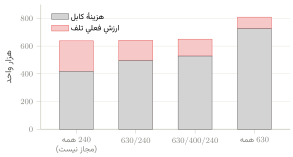
مثال 24.66 (مقطعِ بزرگتر خودش را نمیپردازد) پرسش. از طرحهای مجاز کدام کمترین هزینهٔ عمر را دارد؟ آیا 630 mm² در همهٔ رشته میارزد؟
پاسخ. پلهایِ 630/240/240/240 با 642 هزار؛ 630 در همه 809 هزار. طرحِ 240 در همه ارزانتر است (638) اما مجاز نیست.
تفسیر. با قیمتِ آموزشیِ 70 واحد، کاهشِ تلفِ مقطعِ بزرگتر هزینهاش را برنمیگرداند. اما رشتهٔ پلهای دو اندازه در انبار یعنی دو نوع مفصل، سرکابل و یدک (فصلِ ۵۱)؛ برخی مالکان یک اندازه را برای سادگی ترجیح میدهند و بهایش را میپردازند. این تصمیم در D-028 ثبت میشود. وارسی: \(642 - 495 = 147\) ارزشِ فعلیِ تلف.
24.7.2 پیوندِ غلاف و جریانِ شارژ
ایده. در کابلِ تکرشتهای، جریانِ رسانا در غلافِ فلزی ولتاژ القا میکند. اگر دو سرِ غلاف زمین شود، جریانِ گردشی و تلف میسازد؛ اگر یک سر زمین شود (پیوندِ تکنقطهای)، تلف نیست ولی در سرِ باز ولتاژِ ایستاده هست:
\[ E = \omega\, 2\times10^{-7} \ln\!\left(\frac{2s}{d}\right) I L \tag{24.18}\]
sheath bonding of a 132 kV single-core export cable (teaching):
standing voltage at the open end, single-point bonding,
trefoil s = 140 mm, sheath diameter 105 mm, I = 437 A:
length m volts at full load at a 20 kA fault
300 8 370
500 13 616
800 22 986
both ends bonded: no standing voltage but a circulating
current and a loss in the sheaths; single-point bonding
stops the loss but leaves a voltage that must stay under a
touch limit and is clamped by sheath voltage limiters at
the open end; cross-bonding in three minor sections cancels
it on long routes - the choice and its limits are the
cable designer's (and touch safety is not a field trial)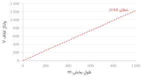
مثال 24.67 (ولتاژی که در خطا بزرگ میشود) پرسش. ولتاژِ سرِ بازِ غلاف برای 500 m در بارِ کامل و در خطای 20 kA چیست؟
پاسخ. حدودِ 13 V و 616 V.
تفسیر. ولتاژِ بارِ کامل کم است ولی در خطا صدها ولت میشود؛ محدودکنندههای ولتاژِ غلاف در سرِ باز آن را مهار میکنند و در مسیرهای بلند پیوندِ متقاطع (سه بخشِ کوچک) آن را خنثی میکند. انتخاب و حدِ تماس با طراحِ کابل است و ایمنیِ تماس با آزمایشِ میدانی ثابت نمیشود. وارسی: \(E \propto L\): 300 تا 800 m یعنی 8 تا 22 V.
charging current of the export options (no load):
33 kV collector 240 mm2 27.2 A 1.6 Mvar
132 kV overhead line 1.5 A 0.3 Mvar
132 kV underground cable 33.8 A 7.7 Mvar
the cable makes 20 times the line's reactive power: at
light load the plant exports Mvar it did not choose, which
the reactive-power capability and perhaps a reactor must
absorb (ch 20, 27, 28)مثال 24.68 (مگاواری که خواسته نشده) پرسش. جریان و توانِ شارژِ کابلِ 132 kV و خطِ هوایی با طولِ 7.06 km چیست؟
پاسخ. کابل 33.8 A و 7.7 Mvar؛ خط 1.5 A و 0.35 Mvar: حدودِ ۲۰ برابر.
تفسیر. در بارِ کم، کابل توانِ واکنشیای به شبکه میدهد که نیروگاه نخواسته است؛ قابلیتِ توانِ واکنشیِ منابع یا یک راکتور باید آن را جذب کند (فصلهای ۲۰، ۲۷ و ۲۸). وارسی: \(\sqrt{3} \times 132 \times 33.8 = 7.7\,\text{Mvar}\).
- هزینهٔ عمرِ کابل را تعریف کنید.
- چرا رشتهٔ پلهای همیشه انتخاب نمیشود؟
- معادلهٔ 24.18 را برای 437 A و 400 m حساب کنید.
- سه روشِ پیوندِ غلاف را با برتری و کاستیِ هر کدام بنویسید.
24.7.3 خطِ هوایی: اجزا، فلش و کشش
ایده. خطِ هوایی مجموعهای از اجزا و رابطهاست: هادیها، سیمِ محافظ (و گاه فیبرِ نوری درونِ آن)، مقرهها و یراقآلات، برجها و فونداسیونها، زمینکردن، و دالان با دسترسی. این فصل آنها را در سطحِ مفهوم و شاهد معرفی میکند؛ طراحیِ نهایی و ساخت با مهندسانِ صلاحیتدار و استانداردهای تأییدشده است.
| جزء | کار | شاهد |
|---|---|---|
| هادی | بردنِ جریان، تحملِ کشش و دما | گواهیِ هادی، آزمونِ کشش و مقاومت |
| سیمِ محافظ | حفاظت در برابرِ صاعقه، گاه ارتباط | گواهیِ سیم، آزمونِ فیبر |
| مقره و یراق | جداکردنِ ولتاژ، نگهداشتنِ هادی | آزمونِ نوعی و روزمرهٔ مقره |
| برج و فونداسیون | تحملِ بارهای باد، یخ و کشش | محاسبه، آزمونِ بار، بازرسیِ ساخت |
| زمینکردن | مسیرِ خطا و صاعقه | اندازهگیریِ مقاومتِ زمین |
| دالان و دسترسی | فاصله تا زمین، ساختمان، درخت | نقشهبرداری، حقِ عبور |
فلش. هادیِ آویخته میانِ دو برج تقریباً سهمی است؛ فلش در وسطِ دهانه:
\[ f = \frac{w L^2}{8 H} \tag{24.19}\]
overhead line span (teaching conductor, level ground):
weight 11.0 N/m, breaking load 95 kN, everyday tension 20 % = 19 kN
span m sag m tower height for 7 m clearance + 2 m
250 4.52 13.5 m
300 6.51 15.5 m
350 8.87 17.9 m
hot conductor (tension 15 % lower): sag 7.66 m on 300 m
longer spans need fewer towers but taller ones; the
clearance, the wind and ice loads and the hot-conductor
case come from the approved line standard and the line
designer - this is a concept, not a line design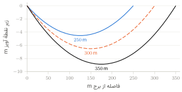
مثال 24.69 (هادیِ گرم پایینتر است) پرسش. فلش در دهانهٔ 300 m با کششِ 19 kN چیست؟ با هادیِ گرم و کششِ 15 % کمتر چه؟
پاسخ. 6.51 m؛ گرم 7.66 m.
تفسیر. فاصله تا زمین در بدترین حالت (هادیِ گرم، بارِ یخ یا باد) وارسی میشود. دهانهٔ بلندتر برجِ کمتر ولی بلندتر میخواهد. بارها، فاصلهها و حالتها را استانداردِ تأییدشدهٔ خط و طراحِ خط تعیین میکنند. وارسی: \(11 \times 300^2/(8 \times 19{,}000) = 6.51\).
24.7.4 خطِ هوایی یا کابلِ زمینی
132 kV export: overhead line against underground cable (ch 18 data):
item overhead cable
cost k u 3,177.00 11,296.00
failures a year 0.04 0.01
repair hours 12.00 240.00
outage h a year 0.51 3.39
charging Mvar 0.35 7.73
the line is cheaper and quicker to repair; the cable fails
less, is out longer when it does, makes more Mvar and fits
where a line cannot (a town, an airfield, a landscape);
the choice is made route by route - neither is right
everywhere (ch 14 landscape, ch 18 option)مثال 24.70 (هیچکدام همهجا درست نیست) پرسش. خط و کابلِ 132 kV را در هزینه، خرابی، زمانِ تعمیر، ساعتهای خاموشی و توانِ شارژ مقایسه کنید.
پاسخ. خط 3,177 و کابل 11,296 هزار؛ خرابی 0.04 و 0.01 در سال؛ تعمیر ۱۲ و ۲۴۰ ساعت؛ خاموشی 0.5 و 3.4 ساعت در سال؛ شارژ 0.35 و 7.7 Mvar.
تفسیر. خط ارزانتر و زودتعمیرتر است؛ کابل کمتر خراب میشود ولی وقتی خراب شود، دیرتر برمیگردد، توانِ واکنشیِ بیشتری میسازد و جایی میرود که خط نمیرود (شهر، فرودگاه، منظر). انتخاب مسیر به مسیر است؛ نیروگاهِ P خط را برگزیده (D-022) و کابل را برای گذرگاههایی که خط نمیتواند نگه میدارد. دسترسی و راهبردِ تعمیر: برای کابل، یدکِ طول و کیتِ مفصل و پیمانکارِ آماده؛ برای خط، جادهٔ دسترسی و قطعاتِ یدکِ مقره و یراق.
- شش جزءِ خطِ هوایی و شاهدِ هر کدام را بنویسید.
- معادلهٔ 24.19 را برای دهانهٔ 350 m حساب کنید.
- فاصله تا زمین در کدام حالت وارسی میشود؟
- پنج ویژگیِ مقایسهٔ خط و کابل را نام ببرید.
24.7.5 مهندسیِ مدارهای جمعآوری و صادرات با عدد
سه راهِ کابلکشیِ یک رشتهٔ بادی، با تلفِ قیمتگذاریشده. در بخش 24.7 رشتهٔ پلهای (630 و سه بخشِ 240 mm²) برگزیده شد. اینجا آن را با دو گزینهٔ یکنواخت، با ارزشِ فعلیِ تلف، مقایسه میکنیم. تلف اینجا با ضریبِ تلفِ 0.30 و مقاومت در 90 °C برآورد میشود، نه با سریِ ساعتی و 65 °Cِ مثال 24.66؛ پس ارزشِ فعلیِ تلف حدودِ یکچهارم بیشتر است و جمعها 678 و 829 بهجای 642 و 809اند، با همان رتبه:
three ways to cable a wind string (four 1.1 km sections, teaching):
option current capex k u loss MWh/yr PV loss k u
uniform 630 ok 726 131.7 103
graded 630/240/240/240 ok 495 234.0 183
uniform 400 FAILS 550 218.5 170
(per string; loss load factor 0.30, 70 u/MWh, 7.5 %, 25 years)
uniform 400 fails the first section; uniform 630 loses less
but costs more than its losses are worth; the graded string
is the cheapest that works - the decision of ch 24, lesson F,
now with its losses pricedمثال 24.71 (ارزانترینِ آنچه کار میکند) پرسش. برای یک رشته، هزینهٔ سرمایه و ارزشِ فعلیِ تلفِ سه گزینه را جمع بزنید. کدام برنده است؟
پاسخ. 630ِ یکنواخت: 726 + 103 = 829 هزار؛ پلهای: 495 + 183 = 678 هزار؛ 400ِ یکنواخت در بخشِ نخست جریان را نمیبرد.
تفسیر. 630ِ یکنواخت تلفِ کمتری دارد، ولی 231 هزار سرمایهٔ بیشتر فقط 80 هزار تلف صرفهجویی میکند. با قیمتِ انرژی یا ضریبِ تلفِ بالاتر این تعادل جابهجا میشود؛ همان ابزارِ ارزیابیِ تلفِ ترانسفورماتور (فصلِ ۲۵). وارسی: \(4 \times 1.1 \times 165 = 726\).
جریانِ مجازِ خطِ هوایی از ترازِ گرمایی. هادیِ خطِ هوایی را باد خنک و خورشید گرم میکند. ترازِ گرمایی در دمای مجازِ هادی:
\[ I^2 R + q_\text{sun} = q_\text{conv} + q_\text{rad} \tag{24.20}\]
thermal rating of the 132 kV conductor from its heat balance:
I^2 R + solar = convection + radiation (teaching forms)
air C wind m/s rating A
25 0.6 590
35 0.6 512
45 0.6 419
35 0.0 277
35 2.0 660
wind cools a line far more than anything else: the same
conductor carries much less on a still, hot, sunny day -
ratings are given for stated weather: the 650 A of the line
data needs a cooler or windier day than 35 C and 0.6 m/s
the plant's 437 A needs wind of at least 0.23 m/s at 35 C and
0.74 m/s at 45 C: on a hot, still, sunny noon the line is
the limit - a larger conductor, a higher design temperature,
or export held down in those hours; the line's design basis
(ch 28) and the weather data decide which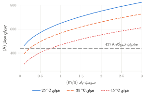
مثال 24.72 (روزِ گرم و بیباد) پرسش. جریانِ مجازِ هادی در 35 °C با بادِ 0.6، 0 و 2 m/s چیست؟
پاسخ. 512، 277 و 660 A.
تفسیر. باد بیش از هر عاملِ دیگری خط را خنک میکند؛ پس جریانِ مجاز همیشه برای هوای معین گفته میشود. 650 A دادهٔ خط هوایی خنکتر یا بادیتر میخواهد. یافته: 437 A نیروگاه در 35 °C دستکم 0.23 m/s باد و در 45 °C دستکم 0.74 m/s میخواهد (شکل 24.18). ظهرِ گرم، آرام و آفتابی همان ساعتی است که خورشیدی در اوج است: آنجا خط حد است. سه پاسخ: هادیِ بزرگتر، دمای طراحیِ بالاتر، یا نگه داشتنِ صادرات در آن ساعتها؛ مبنای طراحیِ خط (فصلِ ۲۸) و دادهٔ هوای بستهٔ داده تصمیم میگیرند. پایشِ لحظهایِ هوا (جریانِ مجازِ پویا) برعکس در روزهای بادی ظرفیت آزاد میکند: وقتی باد هست، هم تولیدِ بادی بیشتر است و هم خط خنکتر. وارسی: خروجیِ برنامه با هادیِ 24.5 mm و دمای مجازِ 75 °C.
طولِ خزشِ مقره. گرد و نمک روی مقره در رطوبت لایهای رسانا میسازد؛ مسیرِ خزش باید برای آلودگیِ محل بلند باشد:
insulator creepage for the 132 kV line (teaching factors, mm/kV):
site pollution mm per kV creepage mm discs of 290 mm
light 16 2320 8
medium 20 2900 10
heavy 25 3625 13
very heavy 31 4495 16
dust and salt on the insulator make a conducting film when
damp; the creepage path must be long enough for the site -
a desert site near a road or a coast needs the long strings;
the factor comes from a site pollution assessment and the
applicable insulator standard, not from this tableمثال 24.73 (بیابان کنارِ جاده) پرسش. برای 145 kV با آلودگیِ «سنگین» (25 mm/kV آموزشی) چند بشقابِ 290 mm لازم است؟
پاسخ. طولِ خزشِ 3,625 mm و ۱۳ بشقاب.
تفسیر. ضریبِ خزش از ارزیابیِ آلودگیِ محل و استانداردِ مقره میآید، نه از این جدول؛ محلِ بیابانی کنارِ جاده یا نزدیکِ ساحل رشتههای بلند میخواهد و شستن یا پوششِ سیلیکونی هم گزینهاند. وارسی: \(25 \times 145 = 3{,}625\) و \(3{,}625/290 = 12.5\).
گذرگاهِ زیرِ جاده در لوله. هوا و جدارهٔ لوله مقاومتِ گرماییِ اضافه میسازند (بخش 24.2.6):
a road crossing in a duct: the air gap and duct add resistance
(630 mm2; extra thermal resistance, teaching values):
extra K m/W rating A factor
0.15 610 0.924
0.35 558 0.845
0.60 508 0.770
a few tens of metres in a duct can set the rating of the
whole feeder (the hot spot of lesson H); filling the duct
with a thermal grout or a larger duct spacing restores most
of it - an item in the crossing's design and its recordsمثال 24.74 (چند ده متر لوله) پرسش. با مقاومتِ اضافهٔ 0.35 K·m/W، جریانِ مجازِ 630 mm² در گذرگاه چیست؟
پاسخ. 558 A، ضریبِ 0.845.
تفسیر. گذرگاه میتواند جریانِ مجازِ کلِ فیدر را تعیین کند (همان نقطهٔ داغِ شکل 24.6). پر کردنِ لوله با ملاتِ گرمارسان یا فاصلهٔ بیشترِ لولهها بیشترِ آن را برمیگرداند؛ این در طراحیِ گذرگاه و سوابقش ثبت میشود. وارسی: \(\sqrt{0.873/(0.873+0.35)} = 0.845\).
- گزینهٔ کابل فقط با هزینهٔ سرمایه انتخاب و تلف قیمتگذاری نشده است.
- جریانِ مجازِ خطِ هوایی بیشرطِ هوا نوشته شده است.
- ضریبِ خزش از جدولِ عمومی برداشته شده، نه از ارزیابیِ آلودگیِ محل.
- چرا گزینهٔ یکنواختِ 630 با وجودِ تلفِ کمتر برنده نیست؟
- با قیمتِ انرژیِ دو برابر، کدام گزینه برنده میشود؟ (با عددهای خروجی)
- چرا جریانِ مجازِ خطِ هوایی برای هوای معین گفته میشود؟
- چرا جریانِ مجازِ پویا برای نیروگاهِ بادی سودمند است؟
- برای آلودگیِ «متوسط» (20 mm/kV) چند بشقاب لازم است؟
- جریانِ مجاز با مقاومتِ اضافهٔ 0.60 K·m/W؟
24.7.6 خطِ هوایی: فلشِ گرم، باد و سیمِ محافظ
فلش با دمای هادی. هادیِ گرم بلندتر میشود. در دهانهٔ 300 m با رابطهٔ تقریبیِ طول و فلش:
\[ L \approx S + \frac{8D^2}{3S}, \qquad L(\theta) = L_0\,[1 + \alpha(\theta - \theta_0)] \tag{24.21}\]
sag of a 300 m span as the conductor heats (elongation only):
at 15 C: sag 6.51 m (tension 19 kN)
conductor C length m sag m clearance lost m
15 300.377 6.51 0.00
50 300.577 8.06 1.54
75 300.720 9.00 2.48
90 300.805 9.52 3.00
a few centimetres more conductor in a 300 m span drops the
low point by metres: the clearance is checked at the
highest design temperature (and with ice where it falls),
and the elastic stretch, ignored here, reduces it a
little - the line designer's state-change calculation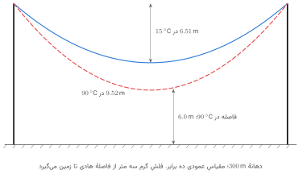
مثال 24.75 (چند سانتیمتر طول، سه متر فلش) پرسش. با ضریبِ انبساطِ 19 × 10⁻⁶ /K، فلشِ دهانهٔ 300 m از 15 تا 90 °C چقدر زیاد میشود؟
پاسخ. از 6.51 به 9.52 m، یعنی 3.0 m، با 43 cm طولِ بیشتر.
تفسیر. فاصلهٔ هادی تا زمین در بیشترین دمای طراحی (و با یخ، جایی که یخ میبندد) وارسی میشود؛ کشسانیِ هادی که اینجا نادیده گرفتیم کمی از افزایش میکاهد. همین است که دمای طراحیِ بالاتر برای جریانِ بیشتر (مثال 24.72) دکلهای بلندتر میخواهد. محاسبهٔ حالتِ تغییرِ واقعی کارِ طراحِ خط است. وارسی: \(D = \sqrt{3 \times 300 \times 0.805/8} = 9.52\).
بار باد. باد نیرویی جانبی بر هادی میگذارد: \(q = \tfrac{1}{2}\rho v^2 C_\text{d} d\):
wind on the conductor: q = 0.5 rho v^2 Cd d (Cd 1.0, teaching):
wind m/s wind N/m weight N/m resultant N/m swing deg
20 6.0 11.0 12.5 29
30 13.5 11.0 17.4 51
40 24.0 11.0 26.4 65
a storm adds a sideways load as large as the weight: the
tension rises, the conductor swings toward the tower and
its neighbour - clearances are checked in the swung
position, and the towers take the sum (ch 29 foundations)مثال 24.76 (توفانی هموزنِ هادی) پرسش. در بادِ 30 m/s نیروی جانبی و زاویهٔ چرخشِ هادی چیست؟
پاسخ. 13.5 N/m در برابرِ وزنِ 11 N/m؛ برآیند 17.4 N/m و چرخشِ 51 درجه.
تفسیر. کشش بالا میرود، هادی به سوی دکل و فازِ کناری میچرخد؛ فاصلهها در حالتِ چرخیده وارسی میشوند و دکلها و پیها مجموعِ بارها را میبرند (فصلِ ۲۹). وارسی: \(0.5 \times 1.225 \times 900 \times 0.0245 = 13.5\).
سیمِ محافظِ فیبردار (OPGW). سیمِ بالای دکلها هم صاعقه را میگیرد، هم سهمی از جریانِ خطای زمین را برمیگرداند و هم فیبرهای حفاظت و ارتباطات را میبرد:
earth wire with optical fibres (OPGW): fault duty (teaching):
the share of a 132 kV earth fault the earth wire carries
share kA time s I2t kA2s rated 100 kA2s
3.1 0.5 4.9 ok
3.1 1.0 9.7 ok
9.4 0.5 44.7 ok
the earth wire carries fault current back and the fibres for
protection and SCADA inside it: if it overheats, the fibres
of the line differential (ch 26) go with it; the rating
must cover the switchgear rating, not today's fault levelمثال 24.77 (فیبرهایی که نباید بسوزند) پرسش. اگر سیمِ محافظ 30 % از خطای 31.5 kA را 0.5 s ببرد، با رتبهٔ 100 kA²s درست است؟
پاسخ. 9.4 kA و 44.7 kA²s: درست.
تفسیر. اگر سیمِ محافظ بیش از حد گرم شود، فیبرهای دیفرانسیلِ خط (فصلِ ۲۶) و SCADA هم با آن میروند؛ رتبه برای رتبهٔ تابلو انتخاب میشود تا رشدِ سطحِ خطای آینده را بپوشاند، نه برای سطحِ خطای امروز. وارسی: \(9.45^2 \times 0.5 = 44.7\).
فلش، کشش، بارِ باد و یخ، فاصلهها، دکل و پی، و رتبهٔ سیمِ محافظ را طراحِ خط با استاندارد و دادهٔ اقلیمِ تأییدشده محاسبه میکند. عددهای اینجا مفهوم را نشان میدهند، نه طرحِ خط را.
- فاصلهٔ هادی تا زمین در دمای روزِ نصب وارسی شده، نه در بیشترین دمای طراحی.
- رتبهٔ سیمِ محافظ برای سطحِ خطای امروز انتخاب شده است.
- چرا چند سانتیمتر طولِ بیشتر فلش را چند متر زیاد میکند؟
- فلشِ دهانهٔ 300 m در 75 °C؟
- نیروی بادِ 25 m/s بر هادیِ 24.5 mm؟
- سه کارِ OPGW را نام ببرید.
- چرا رتبهٔ سیمِ محافظ برای رتبهٔ تابلو انتخاب میشود؟
24.7.7 انتخابِ مسیر و زمانِ تعمیر
مسیر. کوتاهترین مسیر همیشه ارزانترین نیست. گذرگاهها (جاده، لوله، رود)، ناحیههای حساس (مجوز، جبران) و زمینِ سخت هر کدام هزینه دارند:
choosing the export route (teaching costs, k u):
route km crossings sensitive build k u
A: along the road 7.06 3 1 3,607
B: straight, cross-country 6.10 6 2 4,291
C: around the wetland 8.40 2 0 3,711
the shortest route is not the cheapest: crossings (roads,
pipes, rivers) and sensitive areas (permits, mitigation)
cost more than the kilometres they save; access for repair
and the landowners (ch 14, ch 22) weigh as much as the sumمثال 24.78 (مسیرِ مستقیم گرانترین است) پرسش. سه مسیرِ خطِ صادرات را با هزینهٔ ساخت مقایسه کنید.
پاسخ. کنارِ جاده 3,607، مستقیم 4,291 و دورِ تالاب 3,711 هزار واحد.
تفسیر. مسیرِ مستقیم 1 km کوتاهتر است ولی شش گذرگاه، دو ناحیهٔ حساس و زمینِ سخت دارد. مسیرِ کنارِ جاده دسترسیِ تعمیر را هم آسان میکند. زمینداران، مجوزها و منظر (فصلهای ۱۴ و ۲۲) هموزنِ این جمعاند. وارسی: \(7.06 \times 450 + 3 \times 60 + 250 = 3{,}607\).
زمانِ تعمیرِ کابل. خرابیِ کابلِ زیرِ زمین کم است ولی تعمیرش طول میکشد:
repair of a 33 kV cable fault (teaching hours, spares on site):
locate the fault (time-domain reflection, pinpointing) 12 h
permits, isolation and earthing (owner's rules) 8 h
excavate and expose 16 h
cut, joint (two joints with a cable insert) 24 h
test and re-energise 8 h
total about 68 h (2.8 days) if the jointing kit and a
cable length are in the store; add weeks if they must be
ordered - the spares list (ch 18) is a repair-time decision;
a wind string loses about 490 MWh in that time (at its
average capacity factor 0.36)مثال 24.79 (سه روز با یدک، چند هفته بییدک) پرسش. با یدک در انبار، تعمیرِ یک خرابیِ کابلِ 33 kV چقدر طول میکشد و یک رشتهٔ بادی چقدر انرژی از دست میدهد؟
پاسخ. حدودِ 68 h و 490 MWh (با ضریبِ ظرفیتِ میانگینِ 0.36).
تفسیر. بییدک، سفارشِ کابل و کیتِ مفصل هفتهها میبرد و از دست رفتن چند برابر میشود؛ فهرستِ یدک (فصلِ ۱۸) تصمیمی دربارهٔ زمانِ تعمیر است. یافتنِ محلِ خطا با بازتابسنجیِ زمانی و ردیابیِ دقیق، و جوشکاری و مفصلبندی، کارِ تیمهای آموزشدیده با تجهیزاتِ ویژه است. وارسی: \(4 \times 5 \times 68 \times 0.36 = 490\).
- سه هزینهای که مسیرِ کوتاهتر را گرانتر میکند؟
- چرا دسترسیِ تعمیر در انتخابِ مسیر مهم است؟
- کدام گامِ تعمیر بیشترین زمان را میبرد؟
- انرژیِ ازدسترفتهٔ یک رشتهٔ خورشیدیِ 20 MW با ضریبِ ظرفیتِ 0.25 در همان 68 h؟
24.7.8 اتصالِ غلاف در فشارِ قوی و برگشتِ صاعقه از دکل
سه روشِ اتصالِ غلاف. جریانِ رسانا در غلافِ فلزیِ کابلِ تکرشته ولتاژ القا میکند. بخش 24.7.2 ولتاژِ ایستاده را دید؛ اینجا هر سه روش را با تلف مقایسه میکنیم:
sheath bonding of an 800 m, 132 kV single-core section (teaching):
induced sheath voltage 27 mV/m at 437 A
method standing V circulating A sheath loss kW
both ends bonded 0 166 9.9
single point 22 0 0.0
cross-bonded (3) 7 8 0.02
conductor loss for comparison: 11.9 kW
bonding both ends wastes as much in the sheaths as in the
conductors; single-point bonding leaves a standing voltage
that grows with length; cross-bonding in three minor
sections cancels both (5 % imbalance assumed) - the reason
long HV routes are cross-bonded, with link boxes to test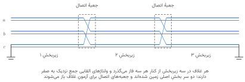
مثال 24.80 (غلافی که به اندازهٔ رسانا تلف دارد) پرسش. برای بخشِ 800 m کابلِ 132 kV با 437 A، تلفِ غلاف با اتصالِ دوسر، ولتاژِ ایستاده با اتصالِ تکنقطه و وضعِ اتصالِ متقاطع را مقایسه کنید.
پاسخ. دوسر: 166 A گردشی و 9.9 kW تلف در برابرِ 11.9 kW تلفِ رسانا؛ تکنقطه: 22 V در سرِ باز؛ متقاطع: حدودِ 7 V و تلفِ ناچیز.
تفسیر. اتصالِ دوسر تقریباً تلفِ رسانا را دو برابر و جریانِ مجاز را کم میکند؛ تکنقطه ولتاژی میگذارد که با طول بالا میرود و در خطا بسیار بیشتر است (بخش 24.7.2)؛ متقاطع هر دو را در مسیرهای بلند حل میکند، با جعبههای اتصال که برای آزمونِ غلاف باز میشوند (شکل 24.20). انتخاب و حدها کارِ طراحِ کابل است. وارسی: \(3 \times 166^2 \times 0.15 \times 10^{-3} \times 800 = 9.9\,\text{kW}\).
برگشتِ صاعقه از دکل. صاعقهای که به سیمِ محافظ یا نوکِ دکل میخورد، از دکل به زمین میرود و دکل را بالا میبرد:
\[ U_\text{top} \approx I\,R_\text{f} + L\,\frac{di}{dt} \tag{24.22}\]
اگر این ولتاژ از تحملِ مقره بگذرد، قوس از دکل به فاز برمیگردد:
back-flashover: lightning on the tower top or earth wire (teaching):
30 kA, front 30 kA/us, tower inductance 15 uH, insulation 650 kV
footing ohm I R kV L di/dt kV tower top kV back-flash
5 150 450 600 no
10 300 450 750 yes
20 600 450 1050 yes
40 1200 450 1650 yes
the tower top rises with the current through its footing;
when the rise beats the insulator, it flashes back to a
phase and the line trips although the phase was never hit -
low footing resistance (rods, counterpoise) is the remedy,
measured at each tower and recorded (ch 26 lightning)مثال 24.81 (مقاومتِ پی، نه ارتفاعِ دکل) پرسش. با 30 kA، شیبِ 30 kA/µs، اندوکتانسِ 15 µH و تحملِ 650 kV، کدام مقاومتِ پی برگشت میسازد؟
پاسخ. 5 Ω: 600 kV، نه؛ 10 Ω و بیشتر: بله.
تفسیر. فازی که هرگز صاعقه نخورده قطع میشود چون دکل بالا رفته است. چاره مقاومتِ پیِ کم است (میله، سیمِ زمینِ کشیده در امتدادِ خط)، که برای هر دکل اندازه و ثبت میشود (فصلِ ۲۶). وارسی: \(30 \times 10 + 15 \times 30 = 750\,\text{kV}\).
- غلافِ کابلِ بلندِ فشارِ قوی دوسر وصل شده و تلفش در جریانِ مجاز نیامده است.
- مقاومتِ پیِ دکلها فقط در چند دکل نمونه اندازه گرفته شده است.
- چرا اتصالِ دوسرِ غلاف جریانِ مجاز را کم میکند؟
- ولتاژِ ایستادهٔ تکنقطه در 1,200 m با همان جریان؟
- جعبهٔ اتصالِ متقاطع به چه کاری میآید؟
- ولتاژِ نوکِ دکل با پیِ 15 Ω؟
- چرا مقاومتِ پیِ هر دکل جداگانه ثبت میشود؟
24.7.9 کرونا روی هادیِ 132 kV
ایده. میدانِ الکتریکی روی سطحِ هادی اگر از میدانِ آغازِ کرونای هوا بگذرد، هوا کنارِ هادی یونیزه میشود: صدا، نویزِ رادیویی و تلف. میدانِ سطحِ هادیِ گرد و میدانِ آغاز (فرمِ پیک) با چگالیِ نسبیِ هوا \(\delta\) و ضریبِ سطحِ \(m\):
\[ E = \frac{U}{r\,\ln(D/r)}, \qquad E_0 = 30\,m\,\delta\left(1 + \frac{0.3}{\sqrt{\delta r}}\right) \tag{24.23}\]
corona on the 132 kV conductor (single conductor per phase):
E = U / (r ln(D / r)); onset E0 = 30 m d (1 + 0.3 / sqrt(d r))
(kV/cm peak; m 0.85 for a stranded surface, d relative air density)
radius cm site d E kV/cm E0 kV/cm margin
1.225 sea level 1.00 16.7 32.4 1.94
1.225 1,500 m 0.85 16.7 28.0 1.68
1.225 2,500 m 0.75 16.7 25.1 1.50
1.600 sea level 1.00 13.4 31.5 2.35
1.600 1,500 m 0.85 13.4 27.3 2.03
1.600 2,500 m 0.75 13.4 24.4 1.82
in rain (surface factor m about 0.5, teaching), radius 1.225 cm:
sea level E0 19.1 kV/cm against E 16.7: margin 1.14
2,500 m E0 14.8 kV/cm against E 16.7: corona
thin air lowers the onset field and rain lowers it more: a
conductor quiet in dry weather at sea level can hum and lose
power in rain on a high plateau; a larger diameter (or two
conductors per phase) lowers the surface field - corona,
audible and radio noise are checked by the line designer
with the maker's dataمثال 24.82 (فلات و باران) پرسش. هادیِ 1.225 cm شعاع در هوای خشک در سطحِ دریا و در 2,500 m، و در باران، چه حاشیهای تا کرونا دارد؟
پاسخ. خشک: 1.94 و 1.50؛ باران: 1.14 در سطحِ دریا و کرونا در 2,500 m.
تفسیر. هوای رقیق و قطرههای باران میدانِ آغاز را پایین میآورند؛ هادیای که در هوای خشکِ سطحِ دریا ساکت است در بارانِ فلات وزوز میکند و تلف دارد. قطرِ بزرگتر یا دو هادی در هر فاز میدانِ سطح را پایین میآورد. ارتفاعِ محلِ نیروگاهِ P و آبوهوایش در مبنای طراحیِ خط میآیند؛ کرونا و نویز را طراحِ خط با دادهٔ سازنده وارسی میکند. وارسی: \(E = 83.7 \times \sqrt{2}/(1.225 \times \ln 326.5) = 16.7\).
- کرونا فقط در هوای خشک و سطحِ دریا وارسی شده است.
- چرا هوای رقیق کرونا را آسانتر میکند؟
- دو راه برای پایین آوردنِ میدانِ سطحِ هادی؟
- میدانِ سطح با شعاعِ 2.0 cm و همان فاصله؟
24.8 نیروگاهِ P: سه مثالِ یکپارچه
دادهها: بستهٔ دادهٔ 1.1.0، سناریوی S1، مدلِ تولید (D-019) برای جریانهای ساعتی، نمودارِ تکخطی (D-027) و جریانهای خطای فصلِ ۲۳؛ دادهٔ کابل، ضریبها و مقدارهای تابلو آموزشیاند (A-321 تا A-325).
the first section of WS1 by hand (630 mm2 Al):
current 368 A; rating in place 660 x 0.675 = 445 A
r at 90 C 0.0601 ohm/km; drop over 1.1 km 0.19 %
12.5 kA for 1 s needs 133 mm2; 630 mm2 carries 59.2 kA
all three checks pass with the trench's factors appliedمثال 24.83 (مقدماتی: یک کابل با دست) پرسش. بخشِ نخستِ WS1 با 630 mm² را با دست در سه شرط وارسی کنید.
پاسخ. جریان 368 A در برابرِ \(660 \times 0.675 = 445\,\text{A}\)؛ افت 0.19 % در 1.1 km؛ کمترین مقطع برای 12.5 kA در یک ثانیه 133 mm² در برابرِ 630 (تحملِ 59 kA).
تفسیر. هر سه شرط با ضریبهای ترانشه برقرارند؛ جریان تنها شرطی است که حاشیهٔ متوسط دارد (21 %). وارسی: با مثال 24.5 یکی است.
circuit basis of Plant P (D-028; PLP-ELE-CAL-0009):
wind strings: 630 mm2 first section, 240 mm2 beyond
(graded; cost + losses least of the allowed plans)
PV feeders: PVF1's first section (4 blocks) 630 mm2, the
rest of PVF1, PVF2, PVF3 and the battery feeders 240 mm2;
route bends at least 15 x the cable's diameter
installation: 1.0 m depth, two circuits 0.4 m apart; soil
1.5 K m/W until the thermal survey (U-093)
33 kV gear 25 kA 3 s, 63 kA peak; LV board 15 kA
export: single-circuit 132 kV overhead line (D-022) - the
cable option kept for crossings the line cannot make
LV feeders: 25 mm2 Cu minimum unless a current-limiting
breaker's let-through allows less; long feeders by drop
DC: trip circuits checked at the end-of-discharge voltage
added after the first draft:
rating on a high percentile of the soil survey, hot spots
(crossings, dry stretches) backfilled or grouted; DTS fibre
in the collector trenches
screens checked with the feeder relay for cross-country
faults (35 mm2 at 0.3 s); incomers 1,600 A (ch 26)
PV string cables 6 mm2 (losses priced); LV checked for
loop impedance with the chosen breaker types
132 kV line: rating on hot, still days limits export
(study with the weather data); creepage from a site
pollution assessment; tower footing resistance recorded
vacuum-switched unit transformers: arresters or RC
snubbers per the makers' study; SF6 density monitoredمثال 24.84 (میانی: مبنای مدارها) پرسش. مبنای مدارهای نیروگاهِ P را بنویسید و تغییرش نسبت به فصلِ ۱۸ را توضیح دهید.
پاسخ. خروجیِ بالا: رشتههای بادی پلهای 630/240، بخشِ نخستِ PVF1 630 mm²، بقیه 240 mm²، تابلوی 25 kA، خطِ هوایی برای صادرات، کابلهای LV و DC با شرطهای خودشان.
تفسیر. فصلِ ۱۸ با جدولِ مرجع 240 mm² را برای همه گذاشت؛ ضریبهای نصب آن را برای بخشهای نخست ناکافی کرد. این تصمیمِ D-028 است و تا بررسیِ گرماییِ خاک (U-093) موقت میماند. وارسی: هر بند به یکی از مثالهای این فصل برمیگردد.
procurement and acceptance schedule (quantities bounded):
item unit qty evidence
33 kV cable 630 mm2 km 3.9 type, routine per drum
33 kV cable 240 mm2 km 17.7 type, routine per drum
33 kV joints and terminations sets 90.0 type-tested kits, records
33 kV switchgear panels panels 18.0 type tests, routine, FAT
LV cables Cu m 1,955.0 maker's certificates
132 kV line materials km 7.1 conductor, insulator tests
quantities carry the +/- 15 % of the routes until the
survey; every item names the evidence that accepts itمثال 24.85 (یکپارچه: فهرستِ تدارکات و پذیرش) پرسش. فهرستِ تدارکاتِ کابل و تابلو را با مقدارِ محدود و شاهدِ پذیرشِ هر قلم بنویسید.
پاسخ. کابلِ 630 mm² 3.9 km و 240 mm² 17.7 km، ۹۰ مفصل و سرکابل، ۱۸ پانلِ 33 kV، حدودِ 1,955 m کابلِ LV و مصالحِ 7.06 km خط؛ هر قلم با گواهیهای نوعی و روزمره و رکوردهای محل.
تفسیر. مقدارها تا نقشهبرداریِ مسیر ±15 % دارند و فهرست با بازه سفارش داده میشود (طولهای اضافی برای خرابی و یدک). هر قلم شاهدی دارد که پذیرش را میبندد: همان پروندهٔ پذیرشِ فصلهای ۴۸ تا ۵۰. وارسی: \(3.9 + 17.7 = 21.6\,\text{km}\).
24.9 عددهای کلیدیِ کابل و تابلوی نیروگاهِ P
| کمیت | مقدار | مثال |
|---|---|---|
| ضریبِ کلِ نصب | 0.675 | مثال 24.2 |
| جریانِ مجازِ 240/400/630 در ترانشه | 277، 351، 445 A | مثال 24.2 |
| رشتهٔ بادی | 630/240/240/240 | مثال 24.5 |
| تلفِ کابلِ یک رشته (۲۴۰) | 282 MWh (0.44 %) | مثال 24.3 |
| کمترین مقطع برای 12.5 kA، 1 s | 133 mm² | مثال 24.4 |
| کشش در پایانِ مسیرِ آموزشی | 16.8 kN (حد 36) | مثال 24.19 |
| جریانِ قله در 33 kV | 32.0 kA (نامی 63) | مثال 24.26 |
| نیروی شینه در 0.15 m | 5.3 kN/m | مثال 24.27 |
| هزینهٔ عمرِ رشتهٔ پلهای | 642 هزار | مثال 24.66 |
| ولتاژِ غلاف در خطا (500 m) | 616 V | مثال 24.67 |
| شارژِ کابل و خطِ 132 kV | 7.7 و 0.35 Mvar | مثال 24.68 |
| فلشِ دهانهٔ 300 m | 6.51 m | مثال 24.69 |
24.10 گردشِ کارِ مدار
- جریانِ طراحیِ هر بخش و شرایطِ نصب را از نمودارِ تکخطی و جانمایی بگیرید (بخش 24.2.2).
- کوچکترین مقطعِ پذیرفته در جریان، افت و تحملِ خطا را بیابید (بخش 24.2.5).
- گزینههای پذیرفته را با هزینهٔ عمر مقایسه کنید (بخش 24.7.1).
- پیوندِ غلاف، شارژ، خمها، کشش و مفصلها را وارسی کنید (بخش 24.7.2، بخش 24.3.3).
- تابلوها را با وظیفههای اتصالِ کوتاه و گواهیهای نوعی بسنجید (بخش 24.4).
- فهرستِ کابل را با برنامه و با نمودارِ تکخطی وارسی کنید (بخش 24.5.1).
- هر نماد را به پانل، محفظه، پایانه و شاهد برسانید (بخش 24.5.2).
- برنامهٔ بازرسی و آزمون را با نقطههای توقف بنویسید (بخش 24.5.3).
24.11 آزمایشگاههای پایتونِ این فصل
| آزمایشگاه | برنامه | آنچه میسازد |
|---|---|---|
| دادهها | sources | کابلهای 33 kV و LV، ضریبها، هادیِ خط، تابلوها |
| بنیادها | examples_a | مقاومت، جریانِ مجاز، تلف، خطا، انتخاب (مثالِ کارشدهٔ ۱) |
| محصول و تابلو | examples_b | لایهها، کشش، قرقره، وظیفههای تابلو، نیروی شینه |
| آزمایشگاه | lab_d | وارسیِ فهرست، پانلها (مثالِ کارشدهٔ ۲)، بازرسی و آزمون |
| کمکی | examples_e | کابلهای LV، مدارِ قطع، جداسازیِ مسیرها |
| جمعآوری و صادرات | examples_f | رشتهٔ پلهای، پیوندِ غلاف، شارژ، فلش، خط یا کابل |
| درسهای افزوده | examples_g | رشتهٔ خورشیدی، کدِ IP، کنترلِ فرایند، اینترلاک، مقاومتِ اتصال |
| فیزیکِ گرمایی | examples_h | مدارِ گرمایی و ضریبها، بارِ چرخهای، اثرِ پوستی، تلفِ دیالکتریک، اضافهبار، DTS |
| فیزیکِ تابلو | examples_k | گرمای شینه، DC در جدا شدن، قوسِ درونی، SF₆، فرسایشِ کنتاکت |
| مدارها و مسیرها | examples_m | امپدانسِ حلقه، راهاندازیِ موتور، کابلِ باتری، سه گزینهٔ رشته، خطِ هوایی، خزش، گذرگاه |
| ساختِ کابل | examples_p | رشتهبندی، خروج از مرکز و Cpk، قرقره، خانوادههای آزمون |
| سختافزار، منبعها و خط | examples_q | گزینشپذیریِ فیوز، UPS، دیزل، کلیدِ DC، بِیِ هوایی و گازی، فلشِ گرم، باد، OPGW، مسیر، تعمیر |
| غلاف، دکل، موتور و سوابق | examples_s | اتصالِ غلاف، برگشتِ صاعقه، ردهٔ اضافهبار، سازوکار، پایانهها، مفصلها، دفترِ نقطههای توقف |
| نیرو، عمر، اتاق و نول | examples_t | نیروی خطا و بست، عمرِ عایق، اتصالِ اینورتر، هوای اتاق، سینی، نول |
| کلیدزنی و قرقره | examples_u | چگالیِ SF₆، بریدنِ جریان، جریانِ خازنی، تخصیصِ قرقره، شینهٔ زمین |
| خاک، غلاف و کابلِ رشته | examples_v | برداشتِ خاک، خطای دوگانه، اندازهٔ اقتصادیِ کابلِ رشته |
| نگهداری و نشانه | examples_w | گرمکنِ کیوسک، گشتاور، فروسرخ، نشانه و برچسب، جداسازیِ تابلو |
| کرونا | examples_x | میدانِ سطح و میدانِ آغاز، ارتفاع و باران؛ دادهٔ شکلِ بارِ چرخهای |
| کیفیتِ اجرا | examples_y | محلِ خطا از زمانِ بازتاب، عمقِ اجراییِ ترانشه |
| آفتاب و اضافهبار | examples_z | گرمای خورشید بر کابلها، دادهٔ منحنیهای اضافهبار |
| نیروگاهِ P | integrated | کابل با دست، مبنای مدارها، تدارکات |
| مثالها و پاسخها | worked | سطرهای E01 و P01 به بعد |
ماژولِ cables با پنج آزمون در برابرِ حسابِ دستی پایهٔ این برنامههاست.
24.12 ساخت و تولیدِ صنعتی در این فصل
این فصل زنجیرهٔ تولیدِ کابل (کشیدن و رشتهکردنِ سیم، اکستروژن و پخت، پرده و زره و غلاف، کنترلهای ابعادی و فرایندی، آزمونهای نوعی، نمونهای و روزمره) و تابلو (بدنه، شینه، تکیهگاه، مکانیزم، قطعکننده، رله و سیمکشی؛ رواداریها، کیفیتِ اتصال، تمیزی، اینترلاک، آببندی، برچسب و آزمونها) را در سطحِ شاهد معرفی کرد (بخش 24.3.2، بخش 24.4.3). فرایندِ کارخانه، طرحِ کنترل و پروندهٔ آزمون در فصلهای ۴۱ تا ۴۵ و نصب و آزمونهای محل در فصلهای ۴۷ تا ۴۹ باز میشوند. اصلِ مشترک: آزمونِ محل جای گواهیِ کارخانه را نمیگیرد.
24.13 جعبهٔ استاندارد و انطباق
- IEC 60502-2:2014+AMD1:2024: کابلهای عایقِ اکسترودی برای 6 تا 30 kV (ساختار، ابعاد، آزمونها).
- IEC 60287-1-1:2023: محاسبهٔ جریانِ مجازِ کابل و تلفها؛ ضریبهای این فصل آموزشیاند.
- IEC 60949:1988+AMD1:2008: جریانِ اتصالِ کوتاهِ مجاز با گرمایشِ نابیدررو؛ ثابتهای \(k\) این فصل آموزشیاند.
- IEC 62271-200:2021: تابلوهای فلزیِ فشارِ متوسط (بیش از 1 تا 52 kV)؛ اصلاحیهٔ 2024 گزارش شده است.
- IEC 61439-1:2020: مجموعههای تابلوی فشارِ ضعیف (قاعدههای کلی).
- IEC 60529 (ویرایشِ تلفیقیِ 2.2، 2013): کدِ IP.
- خطِ هوایی با استانداردِ تأییدشدهٔ هر کشور و طراحِ صلاحیتدار طراحی میشود؛ فاصلهها و بارهای این فصل آموزشیاند (فصلهای ۵۵ تا ۵۷). (وارسیشده 2026-11-16.)
24.14 تحویلدادنیِ نیروگاهِ P
| سند | محتوا | معیارِ پذیرش |
|---|---|---|
| PLP-ELE-CAL-0009 | مبنای مدارها: جریان، افت، خطا، هزینهٔ عمر | هر بخش سه شرط را دارد |
| PLP-ELE-LST-0007 | فهرستِ کابلِ 33 kV، LV و DC | وارسیِ برنامه بییافته؛ هر سطر در نقشه |
| PLP-ELE-LST-0008 | فهرستِ تدارکات با مقدارِ محدود و شاهد | هر قلم با شاهدِ پذیرش |
| PLP-ELE-SPC-0005 | مشخصهٔ کابل و تابلو (مقدارهای نامی، آزمونها) | مقدارها بالای وظیفهها |
| PLP-ELE-PRO-0003 | برنامهٔ بازرسی و آزمونِ کابلکشی | نقطههای توقف و سندها |
این فصل اینها را به پروندهٔ نیروگاهِ P میافزاید:
- تصمیمِ D-028: مبنای مدارها (مثال 24.84): رشتههای پلهای، بخشِ نخستِ PVF1 630 mm²، تابلوی 25 kA، خطِ هوایی برای صادرات؛ جایگزینِ «240 mm² همهجا»ی D-022.
- فرضهای A-321 تا A-325: دادهٔ کابلهای 33 kV (A-321)؛ ضریبهای نصب (A-322)؛ کابلهای LV (A-323)؛ هادیِ آموزشیِ خط (A-324)؛ مقدارهای نامیِ تابلو (A-325).
- مجهولهای U-093 تا U-095: U-093 مقاومتِ گرماییِ خاک در مسیرها؛ U-094 دادهٔ کابلِ سازنده (جریانِ مجاز، قطر، حدهای کشش)؛ U-095 منحنیِ عبوریِ کلیدهای LV.
- کتابخانهٔ همراه: ماژولِ
cablesبا آزمونها و برنامههای فصلِ ۲۴.
24.15 جمعبندی
- بنیادها: مقاومت با دما بالا میرود؛ جریانِ مجاز در محل با ضریبهای نصب؛ افت و تلف با سریِ ساعتی؛ تحملِ خطا با زمانِ پشتیبان؛ انتخاب با سه شرط و هزینهٔ عمر (بخش 24.2)؛ مدارِ گرمایی و ضریبها، بارِ چرخهای، اثرِ پوستی، تلفِ دیالکتریک، نیروی خطا، عمرِ عایق، برداشتِ خاک، خطای دوگانه، کابلِ اقتصادیِ رشته.
- محصول و محل: لایهها و میدانِ شعاعی؛ کنترلِ فرایند و آزمونهای نوعی، نمونهای و روزمره؛ کشش، خم، قرقره، مفصل و نشانه (بخش 24.3)؛ رشتهبندی، خروج از مرکز و توانِ فرایند، قرقره و مفصل، خانوادههای آزمون.
- تابلو: پانلها و محفظهها؛ وظیفههای جریان، قطع، کوتاهمدت و قله؛ نیروی شینه؛ اینترلاک، مقاومتِ اتصال، کدِ IP؛ آزمونِ محل جای گواهیِ نوعی را نمیگیرد (بخش 24.4)؛ گرمای شینه، مؤلفهٔ DC، قوسِ درونی، SF₆، فرسایش، فیوز، کلیدِ DC، بِیِ هوایی و گازی، سازوکار، بریدنِ جریان.
- آزمایشگاه: وارسیِ فهرست با برنامه و نقشه؛ نماد تا پانل و شاهد؛ برنامهٔ بازرسی با نقطههای توقف (بخش 24.5).
- کمکی: کابلِ هر فیدر از فهرستِ بار؛ خطا کوچکها را بزرگ میکند مگر کلیدِ محدودکننده؛ مدارِ قطع در پایانِ دشارژ؛ جداسازیِ DC و مسیرها (بخش 24.6)؛ امپدانسِ حلقه، راهاندازیِ موتور، کابلِ باتری، UPS و دیزل، ردهٔ اضافهبار، اتصالِ اینورتر، سینی و نول.
- جمعآوری و صادرات: رشتهٔ پلهای با هزینهٔ عمر؛ پیوندِ غلاف؛ شارژ؛ اجزا و فلشِ خطِ هوایی؛ خط یا کابل مسیر به مسیر (بخش 24.7)؛ سه گزینهٔ رشته با تلف، جریانِ مجازِ خط با هوا، خزش، گذرگاه، فلشِ گرم، باد، OPGW، مسیر، تعمیر، اتصالِ غلاف، برگشتِ صاعقه.
24.15.1 واژگانِ فصلِ ۲۴
| فارسی | انگلیسی | یادداشت |
|---|---|---|
| رسانا | conductor | |
| عایق | insulation | |
| پلیاتیلنِ شبکهای | cross-linked polyethylene | XLPE |
| پردهٔ رسانا | conductor screen | |
| پردهٔ عایق | insulation screen | |
| پردهٔ فلزی | metallic screen | |
| غلاف | sheath | |
| زره | armour | |
| جریانِ مجاز | current rating (ampacity) | |
| ضریبِ نصب | installation (derating) factor | |
| مقاومتِ گرماییِ خاک | soil thermal resistivity | |
| افتِ ولتاژ | voltage drop | |
| بیدررو | adiabatic | |
| تحملِ کوتاهمدت | short-time withstand | |
| جریانِ قله | peak current | |
| هزینهٔ عمر | life-cycle cost | |
| رشتهٔ پلهای | graded (tapered) string | |
| اکستروژن | extrusion | |
| نابرابریِ ضخامت | eccentricity | |
| تخلیهٔ جزئی | partial discharge | PD |
| آزمونِ نوعی | type test | |
| آزمونِ روزمره | routine test | |
| آزمونِ نمونهای | sample test | |
| آزمونِ محل | site test | |
| کشش | pulling tension | |
| فشارِ جانبی | sidewall pressure | |
| شعاعِ خمش | bending radius | |
| معادلهٔ کاپستان | capstan equation | |
| قرقره | cable drum | |
| مفصل | joint | |
| سرکابل | termination | |
| پانل | panel (cubicle) | |
| محفظه | compartment | |
| قطعکنندهٔ خلأ | vacuum interrupter | |
| مکانیزم | operating mechanism | |
| تکیهگاهِ عایق | insulating support | |
| قوسِ داخلی | internal arc | |
| اینترلاک | interlock | |
| مقاومتِ مدارِ اصلی | main-circuit resistance | |
| کدِ IP | IP code | |
| گلند | cable gland | |
| کلیدِ محدودکنندهٔ جریان | current-limiting breaker | |
| انرژیِ عبوری | let-through energy | I2t |
| بوبینِ قطع | trip coil | |
| فیوزِ رشته | string fuse | |
| کلیدِ قطعزیرِبارِ DC | DC load-break switch | |
| پیوندِ تکنقطهای | single-point bonding | |
| پیوندِ متقاطع | cross-bonding | |
| محدودکنندهٔ ولتاژِ غلاف | sheath voltage limiter | SVL |
| جریانِ شارژ | charging current | |
| خطِ هوایی | overhead line | OHL |
| سیمِ محافظ | shield (earth) wire | |
| مقره | insulator | |
| یراقآلات | fittings | |
| فلش | sag | |
| دهانه | span | |
| دالان | corridor (right of way) | |
| فهرستِ کابل | cable schedule | |
| برنامهٔ بازرسی و آزمون | inspection and test plan | ITP |
| نقطهٔ توقف | hold point | |
| نقطهٔ شاهد | witness point | |
| مقاومتِ گرمایی | thermal resistance | |
| بارِ چرخهای | cyclic rating | |
| اثرِ پوستی | skin effect | |
| تلفِ دیالکتریک | dielectric loss | |
| حسگریِ توزیعشدهٔ دما | distributed temperature sensing | DTS |
| رشتهبندیِ هممرکز | concentric stranding | |
| خروج از مرکز | eccentricity | |
| شاخصِ توانِ فرایند | process capability index | Cpk |
| قوسِ درونی | internal arc | |
| فرسایشِ کنتاکت | contact wear | |
| امپدانسِ حلقهٔ خطا | earth fault loop impedance | |
| کلیدِ ایستای میانبر | static bypass switch | |
| تقویتِ میدان | field boost | |
| طولِ خزش | creepage distance | |
| اتصالِ متقاطعِ غلاف | cross-bonding | |
| برگشتِ صاعقه | back-flashover | |
| ردهٔ رلهٔ اضافهبار | overload relay class | |
| توالیِ کارِ نامی | rated operating sequence | |
| بست | cable cleat | |
| شینهٔ مجرادار | busduct | |
| پایشگرِ چگالی | density monitor | |
| بریدنِ جریان | current chopping | |
| بازبرقزنی | restrike |
24.16 ارزیابیِ پلکانی
معیارِ تسلطِ این فصل: خواننده میتواند کابلِ اصلی، کمکی، جمعآوری یا صادرات را با جریان، افت، خطا و هزینهٔ عمر انتخاب کند، تابلو را با وظیفههایش بسنجد، فهرستها را با برنامه و نقشه وارسی کند، و زنجیرهٔ شاهد را از کارخانه تا محل بنویسد. پاسخها در بخش 24.17 آمدهاند.
24.16.1 پلهٔ ۱: مبانی
تمرین 24.1 سه کارِ کابل را بنویسید.
تمرین 24.2 معادلهٔ 24.1 را توضیح دهید.
تمرین 24.3 مس و آلومینیوم را در چهار ویژگی مقایسه کنید.
تمرین 24.4 حدِ دمای کار و اتصالِ کوتاهِ XLPE (آموزشی) چیست؟
تمرین 24.5 جریانِ مجاز را تعریف کنید.
تمرین 24.6 چهار ضریبِ نصب را نام ببرید.
تمرین 24.7 معادلهٔ 24.3 را توضیح دهید.
تمرین 24.8 معادلهٔ 24.4 را توضیح دهید.
تمرین 24.9 چرا تلفِ سالانه از سریِ ساعتی حساب میشود؟
تمرین 24.10 گرمایش در اتصالِ کوتاه چرا بیدررو فرض میشود؟
تمرین 24.11 معادلهٔ 24.5 را توضیح دهید.
تمرین 24.12 چرا زمانِ حفاظتِ پشتیبان مقطع را تعیین میکند؟
تمرین 24.13 سه شرطِ پذیرشِ کابل را بنویسید.
تمرین 24.14 شش گامِ انتخابِ کابل را بنویسید.
تمرین 24.15 لایههای کابلِ 33 kV را نام ببرید.
تمرین 24.16 دو پردهٔ نیمهرسانا چه میکنند؟
تمرین 24.17 سه ردهٔ آزمونِ کابل را تعریف کنید.
تمرین 24.18 نابرابریِ ضخامت چیست و چرا مهم است؟
تمرین 24.19 سه حدِ کابلکشی را نام ببرید.
تمرین 24.20 معادلهٔ 24.10 را توضیح دهید.
تمرین 24.21 رکوردِ کشش چه چیزی را ثابت میکند؟
تمرین 24.22 چهار محفظهٔ پانلِ فشارِ متوسط را نام ببرید.
تمرین 24.23 چهار معماریِ تابلو را مقایسه کنید.
تمرین 24.24 چهار وظیفهٔ تابلو را بنویسید.
تمرین 24.25 معادلهٔ 24.13 را توضیح دهید.
تمرین 24.26 اینترلاک را تعریف کنید.
تمرین 24.27 مقاومتِ مدارِ اصلی چه چیزی را نشان میدهد؟
تمرین 24.28 دو رقمِ کدِ IP را توضیح دهید.
تمرین 24.29 سه ردهٔ آزمونِ تابلو را با آنچه ثابت میکنند بنویسید.
تمرین 24.30 فهرستِ کابل با چه منابعی وارسی میشود؟
تمرین 24.31 زنجیرهٔ نماد تا شاهد را بنویسید.
تمرین 24.32 نقطهٔ توقف و شاهد را از هم جدا کنید.
تمرین 24.33 کلیدِ محدودکنندهٔ جریان چه اثری بر کابل دارد؟
تمرین 24.34 چرا قوسِ DC در کلیدِ AC خاموش نمیشود؟
تمرین 24.35 پنج گروهِ جداسازیِ مسیرها را نام ببرید.
تمرین 24.36 هزینهٔ عمرِ کابل را تعریف کنید.
تمرین 24.37 سه روشِ پیوندِ غلاف را نام ببرید.
تمرین 24.38 معادلهٔ 24.18 را توضیح دهید.
تمرین 24.39 شش جزءِ خطِ هوایی را نام ببرید.
تمرین 24.40 معادلهٔ 24.19 را توضیح دهید.
تمرین 24.41 فاصله تا زمین در کدام حالت وارسی میشود؟
تمرین 24.42 سه لایهٔ مدارِ گرماییِ کابلِ دفنشده را نام ببرید.
تمرین 24.43 اثرِ پوستی چیست؟
تمرین 24.44 تلفِ دیالکتریک به بار بستگی دارد؟
تمرین 24.45 DTS چیست؟
تمرین 24.46 ردهٔ قوسِ درونیِ تابلو چه چیزی را ثابت میکند؟
تمرین 24.47 رسانای سهلایه چند سیم دارد؟
تمرین 24.48 انرژیِ پیشقوس و انرژیِ کلِ فیوز چه فرقی دارند؟
تمرین 24.49 کلیدِ ایستای میانبرِ UPS چه میکند؟
تمرین 24.50 OPGW چیست؟
تمرین 24.51 سه روشِ اتصالِ غلافِ کابلِ تکرشته را نام ببرید.
تمرین 24.52 برگشتِ صاعقه از دکل چیست؟
تمرین 24.53 ردهٔ رلهٔ اضافهبار چه میگوید؟
تمرین 24.54 نقطهٔ توقف چیست؟
24.16.2 پلهٔ ۲: تحلیل
تمرین 24.55 مقاومتِ آلومینیومِ 0.125 Ω/km در 90 °C؟
تمرین 24.56 جریانِ مجازِ 520 A با چهار ضریبِ ترانشه؟
تمرین 24.57 افتِ 368 A در 1.1 km با r = 0.16، x = 0.116، 0.95؟
تمرین 24.58 کمترین مقطعِ آلومینیومی برای 12.5 kA در 1 s؟
تمرین 24.59 قلهٔ 12.5 kA با X/R = 14؟
تمرین 24.60 فلشِ 11 N/m در 300 m با 19 kN؟
تمرین 24.61 مقاومتِ 0.0778 آلومینیوم در 65 °C؟
تمرین 24.62 مقاومتِ مسِ 1.15 در 70 °C؟
تمرین 24.63 410 A ضربِ 0.675؟
تمرین 24.64 ضربِ ضریبهای 0.9، 0.85 و 0.95؟
تمرین 24.65 جریانِ 15 MW در 33 kV با 0.95؟
تمرین 24.66 افتِ 276 A در 1.1 km کابلِ 240 mm²؟
تمرین 24.67 تلفِ 368 A در 1.1 km با 0.16 Ω/km؟
تمرین 24.68 تلفِ سالانهٔ 200 A ثابت در 2 km با 0.1؟
تمرین 24.69 کمترین مقطعِ مس برای 7.9 kA در 0.1 s؟
تمرین 24.70 تحملِ 630 mm² آلومینیوم در 1 s؟
تمرین 24.71 تحملِ 35 mm² مس در 0.5 s؟
تمرین 24.72 قلهٔ 25 kA با X/R = 10؟
تمرین 24.73 20 kA برای 2 s در برابرِ نامیِ 25 kA برای 1 s؟
تمرین 24.74 جریانِ شارژِ 10 km کابلِ 33 kV با 0.25 μF/km؟
تمرین 24.75 ولتاژِ غلاف برای 437 A و 400 m؟
تمرین 24.76 دمای رسانا با 400 A، 0.1 Ω/km، 25 °C، 2.0 K·m/W؟
تمرین 24.77 فلشِ دهانهٔ 350 m؟
تمرین 24.78 کاپستان: 5 kN در خمِ ۹۰ درجه با 0.35؟
تمرین 24.79 شعاعِ خمشِ کمینهٔ کابلِ 92 mm؟
تمرین 24.80 نیروی شینه در 63 kA و 0.25 m؟
تمرین 24.81 مفصلهای چهار بخشِ 1.1 km با قرقرهٔ 500 m؟
تمرین 24.82 ولتاژ در بوبین با 200 m و 2.5 mm²؟
تمرین 24.83 افتِ 68 A در 350 m کابلِ 95 mm²؟
تمرین 24.84 ارزشِ فعلیِ 100 MWh تلف در سال در ۲۵ سال با 7.5 %؟
تمرین 24.85 ضریبِ کلِ ترانشه را وارسی کنید.
تمرین 24.86 نابرابریِ ضخامتِ 8.3/7.5؟
تمرین 24.87 قطرِ یک رشته از لایهها؟
تمرین 24.88 میدانِ میانگین در عایقِ 8 mm برای 33 kV؟
تمرین 24.89 حدِ مقاومتِ مدارِ اصلی برای 40 μΩ و 1.2؟
تمرین 24.90 شمارِ حالتهای مجازِ اینترلاکِ آموزشی؟
تمرین 24.91 نسبتِ شارژِ کابل به خط برای 132 kV؟
تمرین 24.92 تلفِ کابلِ رشته با 240 mm² چند درصدِ انرژی است؟
تمرین 24.93 مقاومتِ گرماییِ خاکِ 2.0 K·m/W در عمقِ 1.0 m برای کابلِ 75 mm؟
تمرین 24.94 \(y_\text{s}\) برای \(R' = 4 \times 10^{-5}\,\Omega/\text{m}\) و \(k_\text{s} = 1\)؟
تمرین 24.95 ثابتِ زمانیِ DC برای \(X/R = 20\)؟
تمرین 24.96 انرژیِ قوسِ 16 kA در 0.5 s با 500 V در هر فاز؟
تمرین 24.97 نشتِ 1 % از 54 kg SF₆ در سال با گرمایشزاییِ ۲۴٬۰۰۰؟
تمرین 24.98 خروج از مرکزِ نمونهای با ضخامتِ بیشینهٔ 8.6 و کمینهٔ 7.8 mm؟
تمرین 24.99 Cpk با میانگینِ 8.2، انحرافِ معیارِ 0.1 و حدهای 7.6 تا 8.8 mm؟
تمرین 24.100 جریانِ مجاز با مقاومتِ اضافهٔ 0.60 K·m/W در گذرگاه؟
تمرین 24.101 جریانِ ماندگارِ دیزلِ 200 kVA در 400 V با \(x_\text{d} = 2.0\)؟
تمرین 24.102 فلشِ دهانهٔ 300 m در 75 °C؟
تمرین 24.103 نیروی بادِ 25 m/s بر هادیِ 24.5 mm با \(C_\text{d} = 1\)؟
تمرین 24.104 انرژیِ ازدسترفتهٔ رشتهٔ خورشیدیِ 20 MW با ضریبِ ظرفیتِ 0.25 در 68 h؟
تمرین 24.105 با ولتاژِ قوسِ 250 V در هر فاصله، کلیدِ 1,500 V چند فاصله میخواهد؟
تمرین 24.106 ولتاژِ ایستادهٔ تکنقطه در 1,200 m با 27 mV/m؟
تمرین 24.107 ولتاژِ نوکِ دکل با پیِ 15 Ω، 30 kA، 15 µH و 30 kA/µs؟
تمرین 24.108 زمانِ قطعِ ردهٔ ۲۰ در پنج برابرِ جریان (منحنیِ آموزشی)؟
تمرین 24.109 با فنرِ 700 J چرخهٔ «باز – بستهوباز» (540 J) ممکن است؟
تمرین 24.110 یک فیدر با یک هستهٔ CT، دو مدارِ ولتاژ و ۳۰ پایانهٔ دیگر چند پایانه دارد؟
تمرین 24.111 با قرقرهٔ 750 m چند خرابیِ مورد انتظار در ۲۵ سال؟
تمرین 24.112 نیرو بر هر متر با جریانِ قلهٔ 60 kA و فاصلهٔ 0.15 m؟
تمرین 24.113 عمرِ نسبی در 86 °C با قاعدهٔ هشت کلوین؟
تمرین 24.114 جریانِ اینورترِ 3 MVA در 800 V؟
تمرین 24.115 هوای لازم برای 10 kW تلف با افزایشِ 10 K؟
تمرین 24.116 جریانِ مجازِ 35 mm² (158 A) با شش مدارِ کنارِ هم؟
تمرین 24.117 نسبتِ نول به فاز با هارمونیکِ سومِ 33 %؟
تمرین 24.118 فشار در 40 °C برای پرشدگیِ 1.40 bar در 20 °C؟
تمرین 24.119 اضافهولتاژِ بریدنِ 2 A با امپدانسِ موجِ 15 kΩ؟
تمرین 24.120 جریانِ شارژِ کابلی با 1.5 µF در هر فاز در 33 kV؟
تمرین 24.121 شینهٔ زمین برای 31.5 kA در 1 s (مس، \(k = 143\))؟
تمرین 24.122 جریانِ مجازِ 630 mm² با مقاومتِ خاکِ 1.30 K·m/W؟
تمرین 24.123 غلافِ 25 mm² مس در 0.3 s؟
تمرین 24.124 گرمکنِ لازم برای 8 K بالای هوا در کیوسکِ 18 m² با 3.5 W/(m²·K)؟
تمرین 24.125 نیروی گیرهٔ پیچِ M12 با 50 N·m و ضریبِ 0.2؟
تمرین 24.126 اتصالی با 20 K افزایش در 60 % بار، در بارِ کامل؟
تمرین 24.127 تیرکهای 10 km مسیر با ۲۰ خم و ۴ گذرگاه؟
تمرین 24.128 میدانِ سطحِ هادیِ 2.0 cm شعاع با فاصلهٔ 400 cm در 145 kV؟
تمرین 24.129 پژواکِ 10 µs با ضریبِ سرعتِ 0.6؟
تمرین 24.130 گرمای خورشید بر کابلِ 40 mm با ضریبِ جذبِ 0.6 در 1,000 W/m²؟
24.16.3 پلهٔ ۳: کاربرد
تمرین 24.131 خاکِ مسیر 1.0 K·m/W اندازهگیری شود (ضریبِ خاک ۱). بخشِ نخستِ رشته با کدام مقطع میرود؟
تمرین 24.132 مدارِ دوم حذف شود (ضریبِ گروه ۱). نتیجه؟
تمرین 24.133 برای فیدرِ PVF2 (سه بلوک) کابل انتخاب کنید.
تمرین 24.134 تلفِ سالانهٔ رشتهٔ پلهای را با تلفِ 240 در همه مقایسه کنید.
تمرین 24.135 قیمتِ انرژی 120 واحد شود: طرحِ 630/400/240/240 در برابرِ 630/240؟
تمرین 24.136 زمانِ پشتیبان 1.5 s شود. کمترین مقطع؟
تمرین 24.137 مسیرِ کشش را برعکس کنید (اول خمِ ۴۵، بعد ۱۵۰ متر، بعد ۹۰، بعد ۲۰۰ متر). کشش؟
تمرین 24.138 قرقرهٔ 1,100 m حملپذیر نیست. چه گزینههایی دارید؟
تمرین 24.139 X/R تابلو ۲۰ شود. قلهٔ 12.5 kA؟
تمرین 24.140 فاصلهٔ شینهها 0.10 m شود. نیرو؟
تمرین 24.141 یک گلندِ باز در جعبهٔ IP65 پیدا شد. پیامد و اقدام؟
تمرین 24.142 کلیدِ +H03 بیش از حد است. چه میکنید؟
تمرین 24.143 فیدرِ آب با 200 m: چه مقطعی؟
تمرین 24.144 بوبین از 85 % کار کند. کدام مسیرها رد میشوند؟
تمرین 24.145 رشتهٔ خورشیدی 180 m: افتِ 6 mm²؟
تمرین 24.146 پیوندِ تکنقطهای برای 1,500 m: ولتاژِ خطا؟
تمرین 24.147 کابلِ صادرات 3 km برای گذرگاه: شارژ؟
تمرین 24.148 دهانهٔ 400 m: فلش و ارتفاعِ برج؟
تمرین 24.149 خطِ هوایی از کنارِ یک روستا میگذرد. چه گزینههایی دارید؟
تمرین 24.150 یک سطرِ فهرستِ کابل نام ندارد. کدام وارسی مییابد؟
تمرین 24.151 پانلِ ورودی را با دو کابلِ 630 mm² وارسی کنید.
تمرین 24.152 برای بخشِ B تابلو پانلها را بنویسید.
تمرین 24.153 یک نقطهٔ توقفِ دیگر برای کابلکشی پیشنهاد کنید و دلیلش را بگویید.
تمرین 24.154 کابلِ LV رباتها با کلیدِ محدودکننده: چه چیزی عوض میشود؟
تمرین 24.155 نشان دهید چرا جریانِ مجاز با جذرِ اختلافِ دما تغییر میکند و ضریبِ زمینِ 30 °C را بهدست آورید.
تمرین 24.156 کابلی از 0.85 به 1.2 پریونیت میرود؛ با ثابتِ زمانیِ 1.5 h چه مدت تا 90 °C؟
تمرین 24.157 دو تسمهٔ 100 × 10 با 2,500 A چه افزایشِ دمایی دارند و چرا یکچهارمِ یک تسمه است؟
تمرین 24.158 با قیمتِ انرژیِ دو برابر، کدام گزینهٔ رشته برنده است؟
تمرین 24.159 برای آلودگیِ «متوسط» (20 mm/kV) در 145 kV چند بشقابِ 290 mm؟
تمرین 24.160 با کلیدِ نوعِ D، چرا فیدرِ آب رد میشود و دو راهِ درمان؟
تمرین 24.161 چرا با UPS در حالتِ قطعیِ شبکه، کلیدِ نوعِ Cِ 16 A ممکن است خطا را رفع نکند و چه باید کرد؟
تمرین 24.162 جریانِ مجازِ خط در هوای 45 °C و بادِ 0.6 m/s با صادراتِ 437 A چه نسبتی دارد؟
تمرین 24.163 اگر گذرگاهها 100 هزار واحد هزینه داشته باشند، کدام مسیر ارزانتر است؟
تمرین 24.164 چرا اتصالِ دوسر جریانِ مجازِ کابلِ 132 kV را کم میکند؟ با عدد.
تمرین 24.165 چه مقاومتِ پیای برگشت را در مثالِ این فصل حذف میکند؟
تمرین 24.166 برای فیدرِ کابلی، وصلِ دوبارهٔ خودکار را رد یا تأیید کنید.
تمرین 24.167 چرا شینهٔ مجرادار یا ترانسفورماتورِ چسبیده به اسکید برای اینورترِ بزرگ بهتر از کابلهای موازی است؟
تمرین 24.168 برای کابلی که روزها در 98 °C و شبها در 60 °C است، عمر را برآورد کنید (نیمی از زمان هر کدام).
تمرین 24.169 در مثال 24.51، اگر برشهای کوتاه 5 % بلندتر شوند، تخصیص با قرقرهٔ 2.4 km را با برنامه تکرار و نتیجه را تفسیر کنید.
تمرین 24.170 چرا برای ترانسفورماتورهای واحدِ بادی برقگیر یا ضربهگیرِ RC پیشنهاد میشود؟
تمرین 24.171 با قیمتِ انرژیِ 100 واحد بر مگاواتساعت، کدام مقطعِ کابلِ رشته برنده است؟
تمرین 24.172 چرا طراحی روی میانگینِ مقاومتِ خاک نقطهٔ داغ را پنهان میکند؟
تمرین 24.173 چرا بازرسیِ فروسرخ در بارِ کم ممکن است اتصالِ خطرناک را «عادی» نشان دهد؟
تمرین 24.174 برای نیروگاهی در 2,500 m با بارانهای بهاری، دربارهٔ هادیِ خط چه پیشنهاد میکنید؟
تمرین 24.175 چرا کابلِ رشتهٔ خورشیدی با عایقِ دمای بالا ساخته میشود، با اینکه جریانش کم است؟
24.16.4 پلهٔ ۴: طراحی و راستیآزمایی
تمرین 24.176 تابعی بنویسید که برای هر بخشِ رشته کوچکترین مقطعِ پذیرفته را بدهد و آن را بیازمایید.
تمرین 24.177 یک آزمون برای تابعِ کاپستان با دو خمِ متوالی بنویسید.
تمرین 24.178 وارسیِ فهرستِ کابل را به ستونِ «افت تا شینه» گسترش دهید.
تمرین 24.179 جدولِ درستیِ اینترلاک را با یک قاعدهٔ تازه (درِ کابل فقط با قطعکنندهٔ بیرون) گسترش دهید.
تمرین 24.180 یک مشخصهٔ کابل بنویسید: مقدارهای نامی، آزمونها، شاهدها.
تمرین 24.181 یک مشخصهٔ تابلو بنویسید: وظیفهها، گواهیهای نوعی، آزمونهای روزمره و محل.
تمرین 24.182 برنامهٔ بازرسیِ نصبِ تابلو را با نقطههای توقف و شاهد بنویسید.
تمرین 24.183 روشی برای انتخابِ یک یا دو اندازه با معیارِ هزینه، یدک و سادهسازی پیشنهاد کنید.
تمرین 24.184 جدولِ تصمیمِ خط یا کابل را برای یک گذرگاهِ ساختگی بنویسید.
تمرین 24.185 یک برگهٔ وارسیِ پذیرشِ قرقره در محل بنویسید.
تمرین 24.186 روشی برای پیوند دادنِ فهرستِ کابل، نمودارِ تکخطی و جانمایی با یک کلیدِ مشترک پیشنهاد کنید.
تمرین 24.187 یک آزمون برای تابعِ ولتاژِ غلاف بنویسید.
تمرین 24.188 پروندهٔ پذیرشِ یک پانل را از کارخانه تا محل بنویسید.
تمرین 24.189 بندِ مشخصهٔ کابلِ جمعآوری را برای نقطههای داغ (گذرگاه، خاکِ خشک) بنویسید.
تمرین 24.190 برای خطِ هوایی در ظهرِ گرم و آرام یک تصمیم با گزینهها بنویسید.
تمرین 24.191 چکلیستِ پذیرشِ تابلوی SF₆ از نظرِ گاز بنویسید.
تمرین 24.192 بندِ مشخصهٔ کلیدِ جداکنندهٔ DC رشته را بنویسید.
تمرین 24.193 برنامهٔ وارسیِ حفاظت در حالتِ اضطراری (دیزل و UPS) بنویسید.
تمرین 24.194 برای مسیرِ 3 km کابلِ 132 kV، روشِ اتصالِ غلاف و آزمونهایش را پیشنهاد کنید.
تمرین 24.195 برنامهٔ اندازهگیریِ مقاومتِ پیِ دکلها را بنویسید.
تمرین 24.196 مشخصهٔ بستهای کابلِ 132 kV را بنویسید.
تمرین 24.197 بندِ مشخصهٔ کلیدِ فیدرِ 33 kV را برای کلیدزنیِ کابل و ترانسفورماتور بنویسید.
تمرین 24.198 برگهٔ شاهدِ مونتاژِ اتصالهای شینه را طراحی کنید.
تمرین 24.199 برگهٔ پذیرشِ ترانشهٔ کابل را با عمق، خاکریز و نشانه طراحی کنید.
24.16.5 پلهٔ ۵: تسلط
تمرین 24.200 مبنای مدارهای نیروگاهِ P را از جریان تا شاهد بنویسید و از تغییرِ D-022 به D-028 دفاع کنید.
تمرین 24.201 نشان دهید چگونه بررسیِ گرماییِ خاک (U-093) کلِ فهرستِ تدارکات را عوض میکند.
تمرین 24.202 برای صادرات، خطِ هوایی و کابل را در یک مسیرِ ساختگی با شش معیار مقایسه و پیشنهاد کنید.
تمرین 24.203 زنجیرهٔ شاهد برای یک کابلِ 33 kV از کارخانه تا بهرهبرداری بنویسید.
تمرین 24.204 یک «درسِ آموخته» بنویسید: چرا جدولِ مرجع برای انتخابِ کابل کافی نیست؟
تمرین 24.205 برای فیدرِ خورشیدی، اندازهٔ کابل را با بارِ چرخهای بازبینی کنید و بگویید چه دادهای لازم است.
تمرین 24.206 برنامهٔ کیفیتِ خرید از کارخانهٔ کابل را با شاخصهای فرایند پیشنهاد کنید.
تمرین 24.207 انتخابِ بِیِ هوایی یا گازی را برای یک محلِ ساحلی با زمینِ گران بسنجید.
تمرین 24.208 یک وارسیِ برنامهای برای دفترِ نقطههای توقف طراحی کنید که فیدر را از برقدار شدن بازدارد.
تمرین 24.209 یک قاعدهٔ بهرهبرداری برای اضافهبارِ کابلها با بودجهٔ عمر پیشنهاد کنید.
تمرین 24.210 مبنای مدارهای نیروگاهِ P (D-028) را با یافتههای این فصل بازنویسی و برای هر بند شاهدِ لازم را نام ببرید.
تمرین 24.211 برنامهٔ پایشِ وضعِ کابلها و تابلوهای نیروگاه را برای ۲۵ سال پیشنهاد کنید.
24.17 پاسخنامه و راهحلها
پاسخهای عددی را برنامهٔ worked میسازد (سطرهای E01 و P01 به بعد در بخش 24.17.1). برای مسئلههای طراحی و تسلط، معیارهای پاسخ آمدهاند.
حل. تمرین 24.1. بخش 24.2.1.
حل. تمرین 24.2. بخش 24.2.1.
حل. تمرین 24.3. جدول 24.1.
حل. تمرین 24.4. 90 و حدودِ 250 °C.
حل. تمرین 24.5. بخش 24.2.2.
حل. تمرین 24.6. مثال 24.2.
حل. تمرین 24.7. بخش 24.2.2.
حل. تمرین 24.8. بخش 24.2.3.
حل. تمرین 24.9. مثال 24.3.
حل. تمرین 24.10. بخش 24.2.4.
حل. تمرین 24.11. بخش 24.2.4.
حل. تمرین 24.12. مثال 24.4.
حل. تمرین 24.13. بخش 24.2.5.
حل. تمرین 24.14. بخش 24.2.5.
حل. تمرین 24.15. بخش 24.3.1.
حل. تمرین 24.16. میدان را شعاعی نگه میدارند.
حل. تمرین 24.17. بخش 24.3.2.
حل. تمرین 24.18. مثال 24.18.
حل. تمرین 24.19. بخش 24.3.3.
حل. تمرین 24.20. بخش 24.3.3.
حل. تمرین 24.21. مثال 24.19.
حل. تمرین 24.22. بخش 24.4.1.
حل. تمرین 24.23. جدول 24.2.
حل. تمرین 24.24. بخش 24.4.2.
حل. تمرین 24.25. بخش 24.4.2.
حل. تمرین 24.26. بخش 24.4.3.
حل. تمرین 24.27. مثال 24.29.
حل. تمرین 24.28. بخش 24.4.3.
حل. تمرین 24.29. جدول 24.3.
حل. تمرین 24.30. مثال 24.45.
حل. تمرین 24.31. مثال 24.46.
حل. تمرین 24.32. مثال 24.47.
حل. تمرین 24.33. مثال 24.53.
حل. تمرین 24.34. مثال 24.55.
حل. تمرین 24.35. بخش 24.6.2.
حل. تمرین 24.36. بخش 24.7.1.
حل. تمرین 24.37. مثال 24.67.
حل. تمرین 24.38. بخش 24.7.2.
حل. تمرین 24.39. جدول 24.4.
حل. تمرین 24.40. بخش 24.7.3.
حل. تمرین 24.41. بدترین: هادیِ گرم، یخ یا باد (مثال 24.69).
حل. تمرین 24.42. مقاومتِ درونیِ کابل، خاک، و گرمای کابلِ همسایه (شکل 24.3).
حل. تمرین 24.43. رانده شدنِ جریانِ متناوب به سطحِ رسانا که مقاومتِ مؤثر را بالا میبرد.
حل. تمرین 24.44. نه؛ به ولتاژ، ظرفیت و \(\tan\delta\) بستگی دارد و شب هم هست.
حل. تمرین 24.45. حسگریِ توزیعشدهٔ دما با فیبرِ نوری: دمای هر متر از مسیر.
حل. تمرین 24.46. که فشار و گازِ داغِ قوسِ درونی از سمتِ دسترسیِ آدم دور میشود، با درهای بسته و کانالِ آزموده.
حل. تمرین 24.47. \(1 + 6 + 12 = 19\).
حل. تمرین 24.48. پیشقوس تا آغازِ ذوب؛ کل تا خاموشیِ قوس و رفعِ خطا.
حل. تمرین 24.49. در خطا یا اضافهبار برقِ شبکه را بیوقفه جای اینورتر وصل میکند.
حل. تمرین 24.50. سیمِ محافظِ خطِ هوایی با فیبرِ نوری درونش.
حل. تمرین 24.51. دوسر، تکنقطه، متقاطع.
حل. تمرین 24.52. قوسی از دکلِ بالارفته به فاز، بیآنکه صاعقه به فاز خورده باشد.
حل. تمرین 24.53. زمانِ قطع در حدودِ 7.2 برابرِ جریانِ تنظیم: ۱۰، ۲۰ یا ۳۰ ثانیه.
حل. تمرین 24.54. جایی که کار تا آزادسازیِ بازرس نمیتواند ادامه یابد.
حل. تمرین 24.55. E01: 0.1603.
حل. تمرین 24.56. E02: 351 A.
حل. تمرین 24.57. E03: 0.40 %.
حل. تمرین 24.58. E04: 133 mm².
حل. تمرین 24.59. E05: 32.0 kA.
حل. تمرین 24.60. E06: 6.51 m.
حل. تمرین 24.61. P01: 0.0919.
حل. تمرین 24.62. P02: 1.376.
حل. تمرین 24.63. P03: 277 A.
حل. تمرین 24.64. P04: 0.727.
حل. تمرین 24.65. P05: 276 A.
حل. تمرین 24.66. P06: 0.30 %.
حل. تمرین 24.67. P07: 71.5 kW.
حل. تمرین 24.68. P08: 210.2 MWh.
حل. تمرین 24.69. P09: 17.5 mm².
حل. تمرین 24.70. P10: 59.2 kA.
حل. تمرین 24.71. P11: 7.08 kA.
حل. تمرین 24.72. P12: 61.7 kA.
حل. تمرین 24.73. P13: نه.
حل. تمرین 24.74. P14: 15.0 A.
حل. تمرین 24.75. P15: 10.8 V.
حل. تمرین 24.76. P16: 57 °C.
حل. تمرین 24.77. P17: 8.87 m.
حل. تمرین 24.78. P18: 8.66 kN.
حل. تمرین 24.79. P19: 1.38 m.
حل. تمرین 24.80. P20: 3.18 kN/m.
حل. تمرین 24.81. P21: ۸.
حل. تمرین 24.82. P22: 78.6 V.
حل. تمرین 24.83. P23: 2.46 %.
حل. تمرین 24.84. P24: 78 هزار.
حل. تمرین 24.85. \(0.97 \times 0.88 \times 0.93 \times 0.85 = 0.675\).
حل. تمرین 24.86. 9.6 %.
حل. تمرین 24.87. 44.2 mm (مثال 24.17).
حل. تمرین 24.88. 2.4 kV/mm.
حل. تمرین 24.89. 48 μΩ.
حل. تمرین 24.90. ۵ از ۱۶ (مثال 24.28).
حل. تمرین 24.91. حدودِ ۲۲.
حل. تمرین 24.92. 0.44 %.
حل. تمرین 24.93. \(\frac{2}{2\pi}\ln(4/0.075) = 1.27\,\text{K m/W}\).
حل. تمرین 24.94. \(x_\text{s}^2 = 3.14\)، \(y_\text{s} = 9.87/(192 + 7.9) = 0.049\).
حل. تمرین 24.95. \(20/314.2 = 63.7\,\text{ms}\).
حل. تمرین 24.96. \(3 \times 500 \times 16{,}000 \times 0.5 = 12\,\text{MJ}\).
حل. تمرین 24.97. 13 t همارزِ CO₂ در سال.
حل. تمرین 24.98. \((8.6-7.8)/8.6 = 9.3\,\%\)؛ زیرِ 10 %.
حل. تمرین 24.99. \(\min(0.6, 0.6)/0.3 = 2.0\).
حل. تمرین 24.100. 508 A، ضریبِ 0.770.
حل. تمرین 24.101. جریانِ نامی 289 A؛ ماندگار 144 A.
حل. تمرین 24.102. 9.00 m (مثال 24.75).
حل. تمرین 24.103. \(0.5 \times 1.225 \times 625 \times 0.0245 = 9.4\,\text{N/m}\).
حل. تمرین 24.104. \(20 \times 68 \times 0.25 = 340\,\text{MWh}\).
حل. تمرین 24.105. \(\lceil 1{,}800/250 \rceil = 8\).
حل. تمرین 24.106. حدودِ 33 V.
حل. تمرین 24.107. \(450 + 450 = 900\,\text{kV}\): برگشت.
حل. تمرین 24.108. \(20 \times (7.2/5)^2 = 41.5\,\text{s}\).
حل. تمرین 24.109. بله؛ دومی نه.
حل. تمرین 24.110. \(12 + 8 + 30 = 50\).
حل. تمرین 24.111. 0.42.
حل. تمرین 24.112. \(0.17 \times 3{,}600/0.15 = 4.1\,\text{kN/m}\).
حل. تمرین 24.113. \(2^{4/8} = 1.41\).
حل. تمرین 24.114. 2,165 A.
حل. تمرین 24.115. \(10{,}000/(1.2 \times 1{,}005 \times 10) \times 3{,}600 = 2{,}985\,\text{m}^3/\text{h}\).
حل. تمرین 24.116. \(158 \times 0.73 = 115\,\text{A}\).
حل. تمرین 24.117. حدودِ 0.94.
حل. تمرین 24.118. \(1.40 \times 313.15/293.15 = 1.50\,\text{bar}\).
حل. تمرین 24.119. 30 kV.
حل. تمرین 24.120. حدودِ 9.0 A.
حل. تمرین 24.121. 220 mm².
حل. تمرین 24.122. حدودِ 600 A (برنامهٔ درسِ الف).
حل. تمرین 24.123. 6.5 kA.
حل. تمرین 24.124. 504 W.
حل. تمرین 24.125. 20.8 kN.
حل. تمرین 24.126. \(20/0.6^2 = 56\,\text{K}\): اقدامِ فوری.
حل. تمرین 24.127. \(200 + 20 + 8 = 228\).
حل. تمرین 24.128. \(118.4/(2.0 \times \ln 200) = 11.2\,\text{kV/cm}\) (قله).
حل. تمرین 24.129. \(0.6 \times 299.8 \times 10/2 = 899\,\text{m}\).
حل. تمرین 24.130. 24 W/m.
حل. تمرین 24.131. \(0.97 \times 0.93 \times 0.85 = 0.767\)؛ 400 mm² با 399 A.
حل. تمرین 24.132. ضریبِ 0.794؛ 400 mm² 413 A کافی.
حل. تمرین 24.133. 276 A: 240 mm² با حاشیهٔ صفر؛ با بررسیِ خاک.
حل. تمرین 24.134. 188 در برابرِ 282 MWh (مثال 24.66).
حل. تمرین 24.135. ارزشِ تلفها با ضریبِ ۱۲۰/۷۰؛ هنوز تفاوت کم.
حل. تمرین 24.136. \(12{,}500 \sqrt{1.5}/94 = 163\,\text{mm}^2\).
حل. تمرین 24.137. با کاپستان دوباره حساب کنید؛ بیشتر میشود.
حل. تمرین 24.138. قرقرهٔ کوچکتر و مفصلِ بیشتر، یا حملِ ویژه (مثال 24.20).
حل. تمرین 24.139. \(\kappa = 1.02 + 0.98 e^{-0.15} = 1.86\)؛ 32.9 kA.
حل. تمرین 24.140. 7.9 kN/m.
حل. تمرین 24.141. مثال 24.29.
حل. تمرین 24.142. بررسیِ اتصال پیش از برقدار کردن (مثال 24.29).
حل. تمرین 24.143. با تابعِ انتخاب: افت تعیینکننده است.
حل. تمرین 24.144. همهٔ ردیفهای مثال 24.54 زیرِ 85 %.
حل. تمرین 24.145. حدودِ 1.4 %.
حل. تمرین 24.146. حدودِ 1,850 V: پیوندِ متقاطع.
حل. تمرین 24.147. \(7.7 \times 3/7.06 = 3.3\,\text{Mvar}\).
حل. تمرین 24.148. 11.6 m؛ حدودِ 20.6 m.
حل. تمرین 24.149. مسیرِ دیگر یا کابل در آن بخش (مثال 24.70).
حل. تمرین 24.150. وارسیِ نمودارِ تکخطی.
حل. تمرین 24.151. \(2 \times 445 = 890 < 1{,}102\,\text{A}\): کافی نیست؛ سه کابل یا کابلهای تکرشتهای.
حل. تمرین 24.152. قالبِ مثال 24.46.
حل. تمرین 24.153. معیار: چیزی که پس از آن دیده نمیشود.
حل. تمرین 24.154. حدِ خطا کم میشود؛ افت تعیین میکند.
حل. تمرین 24.155. \(I \propto \sqrt{\Delta\theta}\) از معادلهٔ 24.6؛ \(\sqrt{60/70} = 0.926\).
حل. تمرین 24.156. دمای نهایی 120.8 °C و حدودِ 0.73 h.
حل. تمرین 24.157. حدودِ 19 K: تلفِ هر متر نصف و سطح دو برابر.
حل. تمرین 24.158. 630ِ یکنواخت \(726 + 206 = 932\) و پلهای \(495 + 366 = 861\): هنوز پلهای.
حل. تمرین 24.159. طولِ 2,900 mm و ۱۰ بشقاب.
حل. تمرین 24.160. \(Z_\text{s} = 0.192 > 230/2{,}000 = 0.115\)؛ کابلِ بزرگتر یا RCD (مثال 24.56).
حل. تمرین 24.161. اینورتر 72 A میدهد، کلید 160 A میخواهد؛ میانبر بیبرق است. کلیدِ کوچکتر یا نوعِ B یا فیوزِ تند (مثال 24.59).
حل. تمرین 24.162. 419 A: کمتر؛ خط در آن ساعت حد است (مثال 24.72).
حل. تمرین 24.163. کنارِ جاده \(3{,}177 + 300 + 250 = 3{,}727\)؛ دورِ تالاب \(3{,}591 + 200 = 3{,}791\)؛ مستقیم بیشتر: هنوز کنارِ جاده.
حل. تمرین 24.164. تلفِ غلاف 9.9 kW کنارِ 11.9 kW تلفِ رسانا گرما را تقریباً دو برابر میکند (مثال 24.80).
حل. تمرین 24.165. \(U_\text{top} \le 650\): \(R \le (650 - 450)/30 = 6.7\,\Omega\).
حل. تمرین 24.166. رد: خطای کابل ماندگار است و وصلِ دوباره آسیب را بیشتر میکند (مثال 24.38).
حل. تمرین 24.167. جریانِ 5,292 A پانزده تا هجده کابل در هر فاز میخواهد و تقسیمِ نابرابر؛ شینه یا اتصالِ مستقیم این را حذف میکند (مثال 24.62).
حل. تمرین 24.168. میانگینِ نرخِ پیری: \(0.5 \times 2 + 0.5 \times 2^{-30/8} = 1.04\)؛ عمر حدودِ 38 سال با پایهٔ چهل.
حل. تمرین 24.169. معیار: اجرای allocate با طولهای تازه، شمارِ قرقره و هدر، و اینکه برداشتِ تازه تخصیص را عوض میکند.
حل. تمرین 24.170. بریدنِ جریانِ مغناطیسکنندگی با امپدانسِ موجِ بالا اضافهولتاژِ چند برابرِ قله میسازد و دهها ترانسفورماتور بارها کلیدزنی میشوند (مثال 24.40).
حل. تمرین 24.171. ارزشِ تلف با ضریبِ 100/70: 4 mm² 970، 6 mm² \(646 + 126 = 772\)، 10 mm² \(387 + 353 = 740\): 10 mm².
حل. تمرین 24.172. نقطهٔ داغ را لکهٔ خشک میسازد؛ میانگین آن را با جاهای مرطوب صاف میکند (مثال 24.14).
حل. تمرین 24.173. افزایش با مجذورِ جریان بالا میرود: در 40 % بار، 48 K حدودِ 8 K دیده میشود.
حل. تمرین 24.174. معیار: در باران کرونا (14.8 در برابرِ 16.7 kV/cm)؛ قطرِ بزرگتر یا دو هادی، وارسیِ نویز با سازنده (مثال 24.82).
حل. تمرین 24.175. آفتاب 85 % گرمای آن را میدهد (مثال 24.13).
حل. تمرین 24.176. مثال 24.5.
حل. تمرین 24.177. P18.
حل. تمرین 24.178. مثال 24.45.
حل. تمرین 24.179. مثال 24.28.
حل. تمرین 24.180. PLP-ELE-SPC-0005.
حل. تمرین 24.181. جدول 24.3.
حل. تمرین 24.182. قالبِ مثال 24.47.
حل. تمرین 24.183. مثال 24.66.
حل. تمرین 24.184. مثال 24.70.
حل. تمرین 24.185. نوع، طول، آببندی، برگهٔ آزمون، آسیب.
حل. تمرین 24.186. نامِ مرجع (بخش 23.2.3).
حل. تمرین 24.187. P15.
حل. تمرین 24.188. شکل 24.14.
حل. تمرین 24.189. معیار: مقاومتِ گرماییِ خاکِ اندازهگیریشده، خاکریز یا ملاتِ گرمارسان، فاصلهٔ لولهها، DTS، جریانِ مجاز در بدترین نقطه، سوابق.
حل. تمرین 24.190. معیار: ساعتهای بحرانی از دادهٔ هوا، هادیِ بزرگتر، دمای طراحی، محدودیتِ صادرات، هزینهٔ انرژیِ ازدسترفته، تأییدِ بهرهبردار.
حل. تمرین 24.191. معیار: جرمِ گاز در پلاک، نرخِ نشتِ تضمینی، پایشِ چگالی، مدیریت و بازیابیِ گاز، سوابق، گزینهٔ بیSF₆.
حل. تمرین 24.192. معیار: ولتاژِ DC در سردترین حالت، جریان، ردهٔ استفاده (قطعِ بار)، شمارِ قطبها و فاصلهها، دما، کدِ IP، شاهدِ آزمونِ نوعی.
حل. تمرین 24.193. معیار: منحنیِ افتِ دیزل، تقویتِ میدان، تنظیمِ کلیدِ دیزل، کلیدهای مدارهای UPS با و بیمیانبر، آزمونِ کارکرد.
حل. تمرین 24.194. معیار: اتصالِ متقاطع در بخشهای اصلی، جعبههای اتصال، محدودکنندهٔ ولتاژِ غلاف، آزمونِ غلاف پس از نصب و دورهای، سوابق.
حل. تمرین 24.195. معیار: هر دکل، حدِ مطلوب از مطالعهٔ برگشت، چاره برای دکلهای بالای حد، سوابق، تکرار پس از تغییر.
حل. تمرین 24.196. معیار: جریانِ قلهٔ رتبهٔ تابلو، چیدمان و فاصلهٔ کابلها، نیرو بر بست، فاصلهٔ بستها، شاهدِ آزمونِ اتصالِ کوتاه، جنس و خوردگی.
حل. تمرین 24.197. معیار: رتبهٔ قطعِ جریانِ شارژ و ردهٔ کمبرگشت، بریدنِ جریان و حفاظتِ ترانسفورماتور، مؤلفهٔ DC، توالیِ کار، شاهدِ آزمونِ نوعی.
حل. تمرین 24.198. معیار: پیچ و گشتاورِ سازنده، آچار با کالیبراسیون، علامتِ رنگ، مقاومتِ تماس، نام و تاریخ، پیوند به برچسبِ پانل.
حل. تمرین 24.199. معیار: عمق هر ۵۰ متر با مختصات، کمینه و نقطههای زیرِ آن، خاکریز و مقاومتِ گرمایی، نوار و تیرک، عکس، نقطهٔ توقف و آزادکننده.
حل. تمرین 24.200. مثال 24.84.
حل. تمرین 24.201. مثال 24.2، مثال 24.85.
حل. تمرین 24.202. بخش 24.7.4.
حل. تمرین 24.203. بخش 24.3.2، بخش 24.5.3.
حل. تمرین 24.204. مثال 24.5.
حل. تمرین 24.205. معیار: نیمرخِ روزانه از مدلِ تولید، ظرفیت و مقاومتِ گرماییِ خاک، روزهای آفتابیِ پیاپی، روشِ استاندارد، حاشیه، تصمیم و شرط.
حل. تمرین 24.206. معیار: نقطههای توقف، آزمونهای جاری و نمونهای، Cpk ضخامت و خروج از مرکز، اقدامِ اصلاحی، شاهد برای هر قرقره.
حل. تمرین 24.207. معیار: جا، آلودگی و خزش، هزینه، خاموشیِ نگهداری، سیاستِ SF₆، دسترسی، تصمیم با شرطها.
حل. تمرین 24.208. معیار: هر نقطهٔ توقف با آزادکنندهٔ مجاز، نقطههای باز، ترتیبِ زمانی، پیوند به مرحلهٔ برقدار کردن، گزارشِ عدمانطباق.
حل. تمرین 24.209. معیار: ساعتهای مجاز در سال در هر دما، پایشِ DTS، ثبت، پیوند به حفاظت و کلیدزنی، بازنگریِ سالانه.
حل. تمرین 24.210. معیار: رشتهها و فیدرها با تلفِ قیمتگذاریشده، جریانِ مجاز روی صدکِ بالای خاک و نقطههای داغ، غلاف و رله، کابلِ رشته، خطِ هوایی در هوای گرم و آرام، خزش و پیِ دکل، کلیدزنیِ ترانسفورماتورها، SF₆؛ هر بند با سندِ پذیرش (بخش 24.8).
حل. تمرین 24.211. معیار: DTS و دمای نقطههای داغ، شمارندهٔ جریانِ قطعشده، پایشِ چگالیِ گاز، فروسرخ در بارِ زیاد، آزمونِ غلاف، سوابق و آستانههای اقدام، پیوند به فصلِ ۵۲.
24.17.1 خروجیِ برنامهها
پاسخهای عددی:
P01 R of 0.0778 ohm/km Al at 65 C: 0.0919
P02 R of 1.15 ohm/km Cu at 70 C: 1.376
P03 rating 410 A x 0.675: 277 A
P04 factor product 0.9 x 0.85 x 0.95: 0.727
P05 current of 15 MW at 33 kV, pf 0.95: 276 A
P06 drop of 276 A over 1.1 km of 240 mm2 (r 0.16, x 0.116): 0.30 %
P07 loss of 368 A in 1.1 km at 0.16 ohm/km: 71.5 kW
P08 annual loss of 200 A constant in 2 km at 0.1: 210.2 MWh
P09 least Cu section for 7.9 kA, 0.1 s: 17.5 mm2
P10 withstand of 630 mm2 Al for 1 s: 59.2 kA
P11 withstand of 35 mm2 Cu for 0.5 s: 7.08 kA
P12 peak of 25 kA at X/R 10: 61.7 kA
P13 20 kA for 2 s against 25 kA 1 s: no
P14 charging of 10 km of 33 kV at 0.25 uF/km: 15.0 A
P15 sheath volts, 437 A, 400 m, s 140, d 105: 10.8 V
P16 conductor temp, 400 A, 0.1 ohm/km, 25 C, 2.0 K m/W: 57 C
P17 sag, 11 N/m, 350 m, 19 kN: 8.87 m
P18 capstan: 5 kN around 90 deg, mu 0.35: 8.66 kN
P19 least bend radius of a 92 mm cable at 15 D: 1.38 m
P20 busbar force, 63 kA, 0.25 m: 3.18 kN/m
P21 joints, 1.1 km sections on 0.5 km drums, 4 sections: 8
P22 coil voltage: 96.2 V less 5 A x 2 x 0.2 km x 8.78 ohm/km: 78.6 V
P23 LV drop 68 A over 350 m of 95 mm2 Cu (0.193 at 20 C): 2.46 %
P24 PV of 100 MWh a year at 70 u for 25 y at 7.5 %: 78.0 k u
P25 soil 2.0 K m/W, 1.0 m, 75 mm: T4 = 1.27 K m/W
P26 ys for R' 4e-5 ohm/m: 0.049
P27 630 mm2 at 30 C ground: factor 0.926
P28 630 mm2 with 1.30 K m/W soil: 601 A
P29 DC time constant at X/R 20: 63.7 ms
P30 arc 16 kA, 0.5 s, 500 V per phase: 12.0 MJ
P31 SF6 1 % of 54 kg at GWP 24,000: 13.0 t CO2e a year
P32 Cpk mean 8.2, s 0.1, 7.6-8.8 mm: 2.00
P33 duct with 0.60 K m/W extra: 508 A
P34 generator 200 kVA, xd 2.0: rated 289 A, steady 144 A
P35 wind 25 m/s on 24.5 mm: 9.4 N/m
P36 line rating at 45 C, 0.6 m/s: 419 A
P37 back-flash, 15 ohm footing: 900 kV
P38 overload class 20 at 5 x: 41.5 s
P39 trefoil force, 60 kA, 0.15 m: 4.1 kN/m
P40 relative life at 86 C: 1.41
P41 inverter 3 MVA at 800 V: 2,165 A
P42 air for 10 kW, 10 K rise: 2,985 m3/h
P43 pressure at 40 C from 1.40 bar at 20 C: 1.50 bar
P44 charging current, 1.5 uF per phase, 33 kV: 9.0 A
P45 earth bar 31.5 kA, 1 s, Cu: 220 mm2
P46 screen 25 mm2 Cu for 0.3 s: 6.5 kA
P47 heater for 8 K, 18 m2 at 3.5 W/(m2 K): 504 W
P48 clamp force, M12 at 50 N m, K 0.2: 20.8 kN
P49 20 K rise at 60 % load, at full load: 56 K
P50 markers, 10 km, 20 bends, 4 crossings: 228
P51 surface field, r 2.0 cm, D 400 cm, 145 kV: 11.2 kV/cm
P52 echo 10 us at velocity factor 0.6: 899 mمثالهای کوچک:
E01 R of 0.125 ohm/km Al at 90 C: 0.1603 ohm/km
E02 rating 520 A x 0.97 x 0.88 x 0.93 x 0.85: 351 A
E03 drop 368 A, 1.1 km, r 0.16, x 0.116, pf 0.95, 33 kV: 0.40 %
E04 least Al section for 12.5 kA, 1 s: 133 mm2
E05 peak of 12.5 kA at X/R 14: 32.0 kA
E06 sag of 11 N/m over 300 m at 19 kN: 6.51 m24.18 منابع
- IEC 60502-2؛ IEC 60287-1-1:2023؛ IEC 60949؛ IEC 62271-200:2021؛ IEC 61439-1:2020؛ IEC 60529 (با تاریخِ وارسی در دفترِ استانداردها).
- کتابهای درسیِ کابل، خطِ انتقال و تابلو؛ برگههای دادهٔ سازندگان؛ فصلهای ۶، ۷، ۱۸ و ۲۳ همین کتاب.